课程总览
Content from 使用电子表格组织数据
最后更新于 2026-11-07 | 编辑此页
预计用时： 60 分钟
概述
问题
- 如何整理表格数据？
学习目标
- 了解电子表格及其优缺点。
- 如何在电子表格中格式化数据，以实现有效的数据利用？
- 了解常见的电子表格错误及其修正方法。
- 按照整洁数据原则整理您的数据。
- 了解基于文本的电子表格格式，例如逗号分隔 (CSV) 或制表符分隔 (TSV) 格式。
本集基于 Data Carpentries 的 Data Analysis and Visualisation in R for Ecologists 课程。
电子表格软件
问题
- 使用电子表格进行良好数据组织的基本原则是什么？
目标
- 描述组织数据的最佳实践，以便计算机能够充分利用数据集。
要点
- 良好的数据组织是任何研究项目的基石。
良好的数据组织是研究项目的基石。大多数研究人员使用电子表格存储数据或进行数据录入。电子表格软件是设计数据表和处理非常基础的数据质量控制功能的实用图形界面。另请参阅 Broman and Woo (2018).
电子表格大纲
电子表格适合数据录入。因此，我们有大量数据存储在电子表格中。作为研究人员，你的大部分时间都将花在这个“数据整理”阶段。这虽然不算有趣，但却是必要的。我们将教你如何思考数据组织，并介绍一些更高效的数据整理实践。
本课程不会教你的内容
- 如何在电子表格中进行统计
- 如何在电子表格中进行绘图
- 如何在电子表格程序中编写代码
如果您想这样做，O’Reilly 出版的 Head First Excel 是一本很好的参考书。
为什么我们不教使用电子表格进行数据分析？
在电子表格中进行数据分析通常需要大量的手动操作。如果你想更改参数或使用新数据集运行分析，通常必须全部手动重新操作。（我们知道可以创建宏，但请参阅下一点。）
此外，当你想要回顾工作或有人询问分析详情时，也很难追踪或复现在电子表格软件中进行的统计或绘图分析。
市面上有许多电子表格软件。由于大多数参与者将 Excel 作为主要的电子表格软件，本课程将采用 Excel 示例。另一款可使用的免费电子表格软件是 LibreOffice。不同软件之间的命令可能略有差异，但基本原理是一致的。
电子表格软件涵盖了研究人员需要具备的许多能力。我们可以用它们来：
- 数据输入
- 数据整理
- 数据的筛选与排序
- 统计学
- 绘图
电子表格软件使用表格来表示和显示数据。以表格形式呈现的数据也是本章的主题，我们将学习如何以标准化的方式将数据组织成表格，以确保后续分析的高效性。
挑战：与邻座讨论以下要点
- 你在研究、课程或家中使用过电子表格吗？
- 你在电子表格中会进行什么样的操作？
- 你认为电子表格适用于哪些场景？
- 你是否曾在电子表格软件中不小心做了某些事情，从而感到沮丧或难过？
电子表格的问题
电子表格适用于数据录入，但实际上，我们使用电子表格软件的用途远不止于数据录入。我们用它们来创建用于发表的数据表，生成汇总统计数据，并制作图表。
在电子表格中生成发表用的表格并非最佳选择——通常在为发表进行数据表格格式化时，我们报告关键汇总统计数据的方式并非旨在作为数据阅读，且往往涉及特殊的格式设置（合并单元格、创建边框、美化排版）。我们建议您在文档编辑软件中完成此类操作。
后两项应用——生成统计数据和图表——应谨慎使用：由于电子表格程序具有图形化的拖放特性，复现你的操作步骤（更不用说还原他人的操作）可能非常困难，甚至是不可能的，尤其是当你的统计数据或图表需要进行更复杂的计算时。此外，在电子表格中进行计算时，很容易不小心对多个相邻单元格应用略有不同的公式。而使用像 R 或 SAS 这样基于命令行的统计程序时，除非是故意为之，否则几乎不可能对数据集中的某个观测值应用计算，而不对另一个观测值应用。
在电子表格中格式化数据表
问题
- 如何在电子表格中格式化数据，以实现有效的数据利用？
目标
描述电子表格中数据输入和格式化的最佳实践。
采用最佳实践在电子表格中排列变量和观测值。
要点
绝不要修改原始数据。在进行任何更改之前，务必先创建副本。
在纯文本文件中记录清洗数据的所有步骤。
按照整洁数据原则整理您的数据。
最常见的错误是将电子表格软件当作实验笔记本来使用，也就是说，依赖上下文、页边注释、数据和字段的空间布局来传递信息。作为人类，我们（通常）能够解读这些内容，但计算机并非如此看待信息，除非我们向计算机解释每一个细节的含义（而这可能很困难！），否则它将无法理解我们的数据是如何关联在一起的。
借助计算机的力量，我们可以以更高效、更快速的方式管理和分析数据，但要发挥这种力量，我们必须对数据进行准备，使计算机能够理解它们（而计算机非常严格）。
这就是为什么从一开始就建立格式规范的表格至关重要——甚至在你开始输入第一次初步实验的数据之前就应该这样做。数据组织是研究项目的基石。它会影响你在整个分析过程中处理数据的难易程度，因此在进行数据录入或设置实验时，值得仔细考虑。在电子表格中，你可以采用不同的设置方式，但其中一些选择可能会限制你在其他程序中处理数据的能力，或者影响你 6 个月后的自己或你的合作者处理数据的便捷程度。
注意： 数据录入和数据分析的最佳布局/格式（以及软件和界面）可能各不相同。考虑到这一点至关重要，理想情况下应将两者之间的转换自动化。
记录您的分析过程
在使用电子表格进行数据清洗或分析时，很容易导致最终的表格与初始表格看起来大相径庭。为了能够复现您的分析结果，或在审稿人或导师要求进行不同分析时查明您具体做了什么，您应当
创建一个包含清洗或分析后数据的新文件。不要修改原始数据集，否则你永远不知道最初的状态！
记录您在清洗或分析过程中采取的步骤。您应当像记录实验中的任何步骤一样记录这些步骤。我们建议您将这些步骤记录在与数据文件位于同一文件夹的纯文本文件中。
这可能是一个电子表格设置示例：

在今天的练习中，请将这些原则付诸实践。
虽然版本控制超出了本课程的范围，但您可以参考 Carpentries 关于 ‘Git’ 的课程，学习如何对数据进行版本控制。此外，您还可以参阅这篇 博文 了解快速入门教程，或参阅 Perez-Riverol et al. (2016) 以了解更面向研究的使用场景。
电子表格中的数据结构
使用电子表格软件处理数据的基本原则：
- 将所有变量放在列中 —— 即你要测量的项目，例如“重量”或“温度”。
- 将每条观测值放在独立的行中。
- 不要将多项信息合并在同一个单元格中。虽然有时看起来像是一件事，但请思考一下，如果只能通过这种方式来使用或排序这些数据，是否真的可行。
- 保持原始数据原样 —— 不要对其进行修改！
- 将清洗后的数据导出为文本格式，例如 CSV（逗号分隔值）格式。这能确保任何人都能使用这些数据，且大多数数据存储库都对此有要求。
例如，我们有一组来自比利时布鲁塞尔多家医院就诊的患者数据。他们记录了就诊日期、医院、患者的性别、体重和血型。
如果我们这样记录数据：

问题在于 ABO 和 Rhesus 组位于同一个 Blood
类型列中。因此，如果他们想查看 A 组的所有观测值，或者按 ABO
组查看体重分布，使用这种数据设置会很棘手。如果我们将 ABO 和 Rhesus
组分在不同的列中，你就会发现这样会容易得多。

在建立数据表时，一项重要规则是：列用于变量，而行用于观测值：
- 列是变量
- 每行对应一个观测值
- 单元格是单个值
挑战：我们将处理一个杂乱的数据集，并描述如何对其进行清洗。
点击此链接下载一个杂乱的数据集。
在电子表格软件中打开数据。
你可以看到这里有两个选项卡。数据包含 2020 年第一波和第二波 COVID-19 期间，在布鲁塞尔各家医院记录的各种临床变量。如你所见，3 月和 11 月两波期间的数据记录方式有所不同。现在你是该项目的负责人，希望能够开始分析这些数据。
与身旁的人一起，找出这份电子表格有哪些问题。同时讨论清理第一波和第二波标签页，并将它们整合到一个电子表格中的具体步骤。
重要提示： 请不要忘记我们的第一条建议：为清洗后的数据创建新文件（或新标签页），绝不要修改原始（原始）数据。
完成这项练习后，我们将小组讨论这组数据出了什么问题，以及你们将如何修复它。
挑战：在清理好数据后，请回答以下问题：
- 共有多少名男性和女性参与了这项研究？
- 已测试多少个 A、AB 和 B 型？
- 同上，但忽略被污染的样本？
- 已检测多少例 Rhesus + 和 -？
- 已测试多少名通用供血者 (O-)？
- AB型男性的平均体重是多少？
- 各家医院分别检测了多少个样本？
一份极佳的参考资料，尤其是关于 R 脚本编写方面的，是 Tidy Data 论文 Wickham (2014).
常见的电子表格错误
问题
- 在电子表格中格式化数据时常见的挑战有哪些，又该如何避免？
目标
- 识别并解决常见的电子表格格式问题。
要点
- 避免在单个电子表格中使用多个表格。
- 避免将数据分散在多个选项卡中。
- 将零记录为零。
- 使用适当的空值来记录缺失数据。
- 不要使用格式来传递信息或美化电子表格的外观。
- 将注释放在单独的列中。
- 在列标题中记录单位。
- 每个单元格仅包含一项信息。
- 避免在列标题中使用空格、数字和特殊字符。
- 请避免在数据中使用特殊字符。
- 将元数据记录在单独的纯文本文件中。
无论是您自己的数据，还是来自合作者或互联网的数据，都可能存在一些需要留意的潜在错误。如果您了解这些错误，以及它们可能对后续数据分析和结果解读产生的负面影响，这可能会激励您和项目成员努力避免这些错误。对电子表格中数据格式的处理方式进行微调，对于数据清洗和分析的效率与可靠性将产生重大影响。
- 使用多个表格
- 使用多个标签页
- 不填充零
- 使用有问题的空值
- 使用格式传递信息
- 使用格式美化数据表
- 在单元格中放置注释或单位
- 在单元格中输入多项信息
- 使用有问题的字段名
- 在数据中使用特殊字符
- 在数据表中包含元数据
使用多个表格
一种常见的做法是在一个电子表格中创建多个数据表。这会让计算机产生混淆，所以千万不要这样做！当你在一个电子表格中创建多个表时，你是在为计算机建立错误的关联，因为计算机将每一行视为一次观测。此外，你可能会在多个地方使用相同的字段名，这将使数据更难以清理成可用的形式。下面的示例说明了这个问题：

在上述示例中，计算机会看到（例如）第 4 行，并假设所有 A-AF 列都指代同一个样本。实际上，这一行代表了四个不同的样本（四个不同采集日期——5 月 29 日、6 月 12 日、6 月 19 日和 6 月 26 日——每天一个样本 1），以及其中两个样本的一些计算得出的汇总统计数据（平均值 (avr) 和测量标准误 (SEM)）。其他行同样存在问题。
使用多个选项卡
但工作簿标签页呢？这看起来是组织数据的一种简单方法，对吧？嗯，是也不是。当你创建额外的标签页时，你就没能让计算机识别出数据中已有的关联（你必须引入电子表格应用程序特有的函数或脚本来确保这种关联）。举个例子，假设你为每次测量的日期分别创建了一个标签页。
这样做不妥，原因有两点：
如果你每次进行测量时都开始在新标签页中记录数据，那么你更容易在数据中不小心引入不一致之处，而且
即便你能够防止所有不一致之处的混入，在分析数据之前，你仍需增加一个额外步骤，因为你必须将这些数据合并为一个单一的数据表。你必须明确告知计算机如何合并这些标签页——而且如果标签页的格式不统一，你甚至可能需要手动操作。
下次输入数据时，如果你打算创建另一个标签页或表格，请问问自己是否可以通过在原电子表格中添加另一列来避免创建这个标签页。在我们的杂乱数据文件示例中，我们使用了多个标签页，但现在你已经看到了如何重新组织数据以跨标签页进行整合。
在实验过程中，您的数据表可能会变得非常长。如果您无法在电子表格顶部看到表头，就更难输入数据。但请不要重复表头行。表头行很容易与数据混淆，从而在日后引发问题。相反，您可以冻结列标题，这样即使电子表格行数很多，它们依然可见。
未填写零
也许在测量某项指标时，结果通常是零，比如调查中观察到兔子的次数。既然该列大部分都是零，为什么还要特意在其中写上数字零呢？
然而，电子表格中的零与空白单元格有所不同。对于计算机而言，零实际上是数据。你测量或计数了它。空白单元格则意味着该项未被测量，计算机会将其解释为未知值（也称为 null 值或缺失值）。
电子表格或统计软件很可能会误读你打算作为零的空白单元格。通过不输入观测值，你实际上是在告诉计算机将该数据表示为未知或缺失（null）。这可能会导致后续计算或分析出现问题。例如，包含一个 null 值的一组数字的平均值始终为 null（因为计算机无法推断缺失观测值的数值）。因此，将零记录为零，而将真正的缺失数据记录为 null 至关重要。
使用有问题的空值
示例：使用 -999 或其他数值（或零）来表示缺失数据。
解决方案：
在数据集中，空值的表示方式有所不同，原因有几种。有时，测量设备会自动记录令人困惑的空值。如果是这种情况，你几乎无能为力，但可以在分析前使用 OpenRefine 等工具进行数据清洗来解决。另一种情况是，使用不同的空值来表示数据缺失的不同原因。这是需要记录的重要信息，但实际上相当于用一个列来记录两项信息。就像 使用格式传递信息 一样，在这种情况下，最好创建一个名为 ‘data_missing’ 的新列，并使用该列来记录不同的原因。
无论原因如何，如果未知或缺失的数据被记录为 -999、999 或 0，就会产生问题。
许多统计软件无法识别这些值旨在表示缺失（null）值。这些值如何被解释，取决于您用于分析数据的软件。使用一个定义明确且一致的 null 标识符至关重要。
空白单元格（适用于大多数应用程序）和 NA（适用于 R）都是不错的选择。 White et al. (2013) 在其文章中介绍了不同软件中表示空值的合适方式：

使用格式传递信息
示例：高亮显示应从分析中剔除的单元格、行或列，并留出空白行以表示数据的分隔。

解决方案：创建一个新字段来编码哪些数据应被排除。

使用格式化使数据表看起来美观
示例：合并单元格。
解决方案：如果不小心，为了美观而对工作表进行格式化，可能会影响计算机识别数据中关联的能力。合并单元格会导致统计软件无法读取您的数据。请考虑重新构建数据结构，以便在组织数据时无需合并单元格。
在单元格中放置注释或单位
大多数分析软件无法识别 Excel 或 LibreOffice 的注释，且会对数据单元格中放置的注释产生混淆。如上文在格式化部分所述，如果您需要在单元格中添加备注，请创建另一个字段。同样，请勿在单元格中包含单位：理想情况下，您在同一列中放置的所有测量值应使用相同的单位；但如果出于某种原因并非如此，请创建另一个字段并指定该单元格所使用的单位。
在单元格中输入多项信息
示例：在同一个单元格中记录 ABO 和 Rhesus 组，例如 A+, B+, A-, …
解决方案：不要在一个单元格中存储多条信息。这将限制您分析数据的方式。如果您需要这两项测量值，请在数据表中设计相应的布局以包含这些信息。例如，分别设置一列用于 ABO 组，另一列用于 Rhesus 组。
使用有问题的字段名
请选择具有描述性的字段名称，但要注意不要包含空格、数字或任何类型的特殊字符。空格可能会被将空白字符作为分隔符的解析器误读，且某些程序不支持以数字开头的文本字符串作为字段名称。
下划线 (_)
是空格的良好替代方案。考虑使用驼峰命名法（例如：ExampleFileName）以提高可读性。请记住，目前有意义的缩写在
6
个月后可能不再显而易见，但不要将名称写得过长。在字段名称中包含单位可避免混淆，并使他人能够轻松理解您的字段。
示例
| 良好的名称 | 良好的替代方案 | 避免 |
|---|---|---|
| Max_temp_C | MaxTemp | Maximum Temp (°C) |
| Precipitation_mm | Precipitation | precmm |
| Mean_year_growth | MeanYearGrowth | Mean growth/year |
| sex | sex | M/F |
| weight | weight | w. |
| cell_type | CellType | Cell Type |
| Observation_01 | first_observation | 1st Obs |
在数据中使用特殊字符
示例：在撰写笔记时，你将电子表格软件视为文字处理软件，例如直接从 Word 或其他应用程序中复制数据。
解决方案：这是一种常见的做法。例如，在单元格中编写较长文本时，人们经常在电子表格中加入换行符、长破折号等。此外，在从 Word 等应用程序复制数据时，格式和特殊的非标准字符（如左对齐和右对齐的引号）也会被包含在内。在将这些数据导出到编程/统计环境或关系型数据库时，可能会出现危险情况，例如行被截断以及抛出编码错误。
通用最佳实践是避免添加换行符、制表符和垂直制表符等字符。换句话说，将文本单元格视为一个只能包含文本和空格的简单 Web 表单。
在数据表中包含元数据
示例：您在数据表的顶部或底部添加图例，用以说明列的含义、单位、异常情况等。
解决方案：记录数据相关信息（“元数据”）至关重要。在收集和分析数据集时，你可能对其了如指掌，但几个月、一年或更长时间后，你能否还记得例如变量“sglmemgp”代表“组中的单个成员”，或者你用于转换变量或创建衍生变量时使用的具体算法，可能性很小。
此外，他人可能出于多种原因希望检查或使用您的数据——例如为了理解您的研究结果、验证您的研究结果、审阅您提交的出版物、复现您的结果、设计类似的研究，甚至是为了存档您的数据以便他人访问和重复使用。虽然数字数据在定义上是机器可读的，但理解其含义则是人类的工作。在研究的收集和分析阶段记录数据的重要性无论如何强调都不为过，尤其是当您的研究将成为学术记录的一部分时。
然而，元数据不应包含在数据文件本身中。与论文中的表格或补充文件不同，元数据（以图例形式呈现）不应包含在数据文件中，因为此类信息并非数据，且将其包含在内可能会干扰计算机程序对数据文件的解析。相反，元数据应作为独立文件存储在与数据文件相同的目录下，最好采用纯文本格式，并使用能清晰地将其与数据文件关联的文件名。由于元数据文件采用纯文本格式，您还可以在其中编码注释、单位、关于缺失值如何编码的信息等，这些内容对于记录至关重要，但可能会干扰数据文件的格式。
此外，文件或数据库级别的元数据描述了构成数据集的文件之间如何关联；它们采用何种格式；以及它们是取代之前的文件，还是被之前的文件取代。文件夹级别的 readme.txt 文件是记录项目中所有文件和文件夹的经典方式。
（关于元数据的文字改编自爱丁堡大学 EDINA 和数据库提供的在线课程 Research Data MANTRA。MANTRA 采用 知识共享 署名 4.0 国际许可协议 授权。）
导出数据
问题
- 我们如何将电子表格中的数据导出，以便于后续应用？
目标
- 将电子表格数据存储为通用文件格式。
- 将数据从电子表格导出为 CSV 文件。
要点
存储在常用电子表格格式中的数据通常无法被数据分析软件正确读取，从而导致数据出现错误。
将数据从电子表格导出为 CSV 或 TSV 等格式，可使其成为大多数程序都能一致使用的格式。
将待分析的数据以 Excel 默认文件格式（*.xls 或
*.xlsx —— 取决于 Excel 版本）存储，并非良策。为什么？
因为这是一种专有格式，且未来可能不再有用于打开该文件的技术（或该技术将变得十分罕见），从而导致文件难以打开，甚至无法打开。
其他电子表格软件可能无法打开以专有 Excel 格式保存的文件。
不同版本的 Excel 处理数据的方式可能有所不同，从而导致不一致。日期 是一个关于数据存储不一致的典型案例，相关资料已十分详尽。
最后，越来越多的期刊和资助机构要求您将数据存放在数据存储库中，且其中大多数不接受 Excel 格式。数据需要采用下文讨论的格式之一。
上述要点同样适用于其他格式，例如 LibreOffice / Open Office 使用的开放数据格式。这些格式并非静态的，且不同软件包对其解析方式各异。
将数据以通用、开放且静态的格式存储有助于解决这一问题。可以尝试使用制表符分隔（tab-delimited，或称为 TSV）或逗号分隔（comma-delimited，或称为 CSV）格式。CSV 文件是纯文本文件，列之间由逗号分隔，因此被称为“逗号分隔值”或 CSV。与 Excel/SPSS 等文件相比，CSV 文件的优势在于，我们几乎可以使用任何软件（包括 TextEdit 或 NotePad 等纯文本编辑器）来打开并读取 CSV 文件。CSV 文件中的数据也可以轻松导入到其他格式和环境中，例如 SQLite 和 R。在处理 CSV 文件时，我们不必受限于某个昂贵程序的特定版本，因此它是实现最大可移植性和持久性的理想格式。大多数电子表格程序都可以轻松保存为 CSV 等分隔文本格式，尽管在导出文件时可能会弹出警告。
若要将在 Excel 中打开的文件保存为 CSV 格式：
- 从顶部菜单中选择“文件”和“另存为”。
- 在“格式”字段中，从列表中选择“逗号分隔值” (
*.csv)。 - 再次确认文件名和想要保存的位置，然后点击“保存”。
关于向后兼容性的重要提示：您可以使用 Excel 打开 CSV 文件！

关于 R 和 xls 的说明：有一些 R
包可以读取 xls 文件（以及 Google 电子表格）。甚至可以访问
xls 文档中的不同工作表。
但是
- 其中一些仅在 Windows 上可用。
- 这相当于将（简单但手动的）导出为
csv替换为数据分析 R 代码中额外的复杂性/依赖项。 - 数据格式化的最佳实践依然适用。
- 真的有充分的理由说
csv（或类似形式）不够用吗？
关于逗号的注意事项
在某些数据集中，数据值本身可能包含逗号 (,)。在这种情况下，您使用的软件（包括 Excel）很可能会错误地将数据以列形式显示。这是因为作为数据值一部分的逗号会被解释为分隔符。
例如，我们的数据可能如下所示：
species_id,genus,species,taxa
AB,Amphispiza,bilineata,Bird
AH,Ammospermophilus,harrisi,Rodent, not censused
AS,Ammodramus,savannarum,Bird
BA,Baiomys,taylori,Rodent在记录 AH,Ammospermophilus,harrisi,Rodent, not censused
中，taxa 的值包含一个逗号
(Rodent, not censused)。如果我们尝试将上述内容导入
Excel（或其他电子表格程序），会得到如下结果：

taxa 的值被分成了两列（而非放入单一列 D
中）。这可能会引发一系列进一步的错误。例如，多出来的那一列会被解释为一个包含大量缺失值（且没有正确标题）的列。此外，第
3 行记录（即 ‘taxa’ 的值包含逗号的那一行）中列 D
的值现在是不正确的。
如果您想以 csv
格式存储数据，且预计数据值中可能包含逗号，可以通过将值放在引号 (““)
中来避免上述问题。按照此规则，我们的数据可能如下所示：
species_id,genus,species,taxa
"AB","Amphispiza","bilineata","Bird"
"AH","Ammospermophilus","harrisi","Rodent, not censused"
"AS","Ammodramus","savannarum","Bird"
"BA","Baiomys","taylori","Rodent"现在将此文件作为 csv 在 Excel
中打开将不会导致出现额外列，因为 Excel
仅将位于引号之外的逗号作为分隔符。
或者，如果您处理的数据包含逗号，在使用电子表格时可能需要使用另一种分隔符1。在这种情况下，可以考虑使用制表符作为分隔符，并使用 TSV 文件。TSV 文件可以像 CSV 文件一样从电子表格软件导出。
如果您正在处理一个现有的数据集，其中数据值不包含在 “” 中，但同时使用逗号作为分隔符和数据值的一部分，那么您可能正面临数据清洗方面的重大问题。如果您处理的数据集包含数百或数千条记录，手动清洗（无论是从数据值中删除逗号，还是将值放入引号 - “” 中）不仅会耗费大量时间，还可能导致您不小心引入许多错误。
数据集清洗是许多科学领域面临的主要问题之一。其处理方法几乎总是取决于具体情境。不过，采用自动化方式清洗数据是一个良好的实践，例如编写并运行脚本。Python 和 R 课程将为你提供开发相关脚本技能的基础。
总结

典型的数据分析工作流程如上图所示，其中数据会经过反复的转换、可视化和建模。这一迭代过程会重复多次，直到数据被充分理解。然而，在许多实际案例中，大部分时间都花在数据的清洗和准备上，而非实际的分析与理解上。
一种敏捷的数据分析工作流——即对“转换/可视化/建模”循环进行多次快速迭代——只有在数据格式可预测，且无需查看或修复数据即可对其进行分析时，才是可行的。
- 良好的数据组织是任何研究项目的基石。
这在将逗号用作小数点分隔符的欧洲国家尤为重要。在这种情况下，CSV 文件的默认值分隔符将是分号 (;)，或者值将被系统性地加引号。↩︎
Content from R 和 RStudio
最后更新于 2026-11-07 | 编辑此页
预计用时： 30 分钟
概述
问题
- 什么是 R 和 RStudio？
学习目标
- 描述 RStudio 的脚本、控制台、环境和图表窗格的用途。
- 将一组分析的文件和目录组织成一个 R 项目，并理解工作目录的作用。
- 使用 RStudio 内置的帮助界面搜索有关 R 函数的更多信息。
- 演示如何向 R 用户社区提供足够的信息以进行故障排除。
本集基于 Data Carpentries 的 Data Analysis and Visualisation in R for Ecologists 课程。
什么是 R？什么是 RStudio？
R 一词用于指代编程语言、统计计算环境以及解释使用该语言编写的脚本的软件。
RStudio 目前是一种非常流行的方式，不仅可以用来编写 R 脚本，还能用于与 R 软件进行交互1。为了正常运行，RStudio 需要 R，因此两者都必须安装在您的计算机上。
RStudio IDE 快捷键表 提供的信息远比本文所涵盖的要多，但对于学习键盘快捷键和探索新功能非常有帮助。
为什么要学习 R？
R 不需要频繁地点击操作，而这正是其优势所在。
学习曲线可能比其他软件更陡峭，但使用 R 时，分析结果并不依赖于记忆一连串的点击操作，而是基于一系列书面命令，而这正是其优势所在！因此，如果你因为收集了更多数据而想要重新进行分析，你不需要记住按哪个按钮、按什么顺序才能获得结果；你只需再次运行你的脚本即可。
使用脚本可以让分析过程中采取的步骤清晰可见，而且你编写的代码可以由他人检查，从而获得反馈并发现错误。
使用脚本会迫使你对所做的工作有更深入的理解，并有助于你学习和掌握所使用的方法。
R 代码有助于实现可复现性
可复现性意味着其他人（包括未来的你自己）在使用相同的分析代码时，能够从同一数据集获得相同的结果。
R 可与其他工具集成，从您的代码中生成论文或报告。如果您收集了更多数据，或修正了数据集中的错误，论文或报告中的图表和统计检验将自动更新。
越来越多的期刊和资助机构要求分析结果具有可复现性，因此掌握 R 将使你在满足这些要求时占据优势。
R 具有跨学科性和可扩展性
R 提供了一个框架，允许你安装 10,000 多个2 包来扩展其功能，从而将许多科学领域的统计方法相结合，以最好地适配你分析数据所需的分析框架。例如，R 拥有用于图像分析、GIS、时间序列、群体遗传学等诸多领域的包。

R 适用于各种形状和规模的数据
您通过 R 学习的技能可以轻松适配数据集的规模。无论您的数据集包含数百行还是数百万行，对您来说都没有太大影响。
R 专为数据分析而设计。它配备了特殊的数据结构和数据类型，使缺失数据和统计因子的处理变得十分便捷。
R 可以连接到电脑上或网络上的电子表格、数据库以及许多其他数据格式。
R 拥有一个规模庞大且热情友好的社区
每天有数以千计的人使用 R。其中许多人愿意通过邮件列表和 Stack Overflow 等网站，或在 RStudio 社区 为你提供帮助。这些广泛的用户社区延伸至生物信息学等专业领域。R 社区的一个子集是 Bioconductor，这是一个旨在分析和理解“当前及新兴生物测定数据”的科学项目。本工作坊由 Bioconductor 社区成员开发；如需了解更多关于 Bioconductor 的信息，请参阅配套工作坊 “Bioconductor 项目”。
熟悉 RStudio 的用法
让我们先来了解一下 RStudio，这是一个用于操作 R 的集成开发环境 (IDE)。
RStudio IDE 这一开源产品根据 Affero 通用公共许可证 (AGPL) v3 免费提供。RStudio IDE 也提供商业许可证，并可获得 Posit, Inc. 的优先电子邮件支持。
我们将使用 RStudio IDE 编写代码、浏览计算机上的文件、检查即将创建的变量，以及可视化将生成的图表。RStudio 还可用于其他用途（例如版本控制、开发软件包、编写 Shiny 应用），但这些内容在本次工作坊中将不予涵盖。
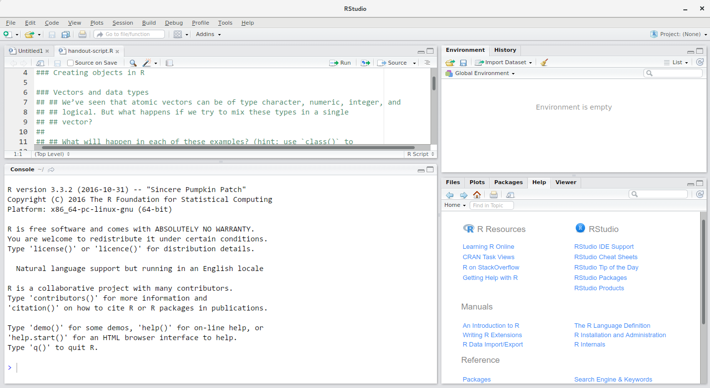
RStudio 窗口分为 4 个“窗格”：
- 用于脚本和文档的 Source（左上角，默认布局）
- 您的 环境/历史记录（右上角），
- 您的 文件/图表/包/帮助/查看器（右下角），以及
- R 控制台（左下角）。
这些窗格的布局及其内容均可自定义（参见菜单，Tools -> Global Options -> Pane Layout）。
使用 RStudio 的优势之一是，编写代码所需的所有信息都集中在单个窗口中。此外，凭借大量快捷键、自动补全以及在 R 开发过程中常用的主要文件类型的高亮显示，RStudio 将使输入更加便捷，且更不易出错。
设置指南
将一组相关的数据、分析和文本整合在同一个文件夹中，即所谓的工作目录，是一个良好的实践。这样，该文件夹内的所有脚本都可以使用相对路径来指定文件在项目中的位置（而非绝对路径，后者指向文件在特定计算机上的具体位置）。采用这种方式，在计算机上移动项目并与他人共享时，无需担心底层脚本是否仍能正常运行，会变得容易得多。
RStudio 通过其“项目”界面提供了一套实用的工具来实现这一点。该界面不仅能为您创建工作目录，还能记住其位置（方便您快速导航），并可选择保留自定义设置和打开的文件，以便在休息后更轻松地恢复工作。请按照以下步骤为本教程创建“R 项目”。
- 启动 RStudio。
- 在
File菜单下，点击New project。选择New directory，然后选择New project。 - 为此新文件夹（或“目录”）输入名称，并选择一个方便的位置。这将成为您本次会话（或整个课程）的工作目录（例如，
bioc-intro）。 - 点击
Create project。 - （可选）将偏好设置为“从不”在 RStudio 中保存工作区。
RStudio 的默认设置通常效果良好，但将工作区保存为 .RData 可能会很繁琐，尤其是当你处理较大的数据集时。若要关闭此功能，请前往“工具” –> “全局选项”，并在“退出时将工作区保存为 .RData”处选择“从不”选项。

为了避免Windows 与其他操作系统之间的字符编码问题，我们将默认设置为 UTF-8：
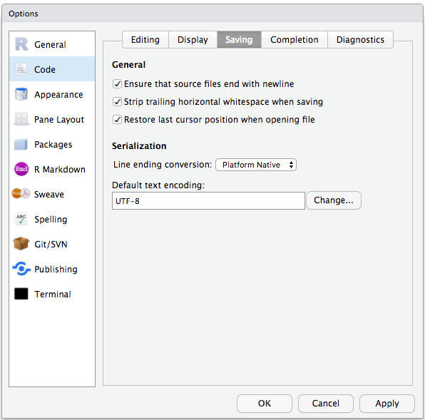
整理工作目录
在各个项目中使用统一的文件夹结构有助于保持有序，并方便日后查找和归档。当您拥有多个项目时，这一点尤为有用。通常情况下，您可以为 脚本、数据 和 文档 分别创建目录（文件夹）。
-
data/使用此文件夹存储原始数据以及您为特定分析而创建的中间数据集。为了确保透明度和来源可追溯性，您应始终保留一份可访问的原始数据副本，并尽可能通过编程方式（即使用脚本，而非手动操作）完成数据清洗和预处理。将原始数据与处理后的数据分开也是一个好主意。例如，您可以将文件data/raw/tree_survey.plot1.txt和...plot2.txt与由scripts/01.preprocess.tree_survey.R脚本生成的data/processed/tree.survey.csv文件分开存放。 -
documents/这里用于存放大纲、草稿和其他文本。 -
scripts/（或src）这里将用于存放用于不同分析或绘图的 R 脚本，并可能设有一个用于存放函数的独立文件夹（稍后详述）。
根据项目需求，您可能需要额外的目录或子目录，但这些应当构成工作目录的骨架。

在本课程中，我们需要一个 data/
文件夹来存储原始数据，在学习如何将数据导出为 CSV 文件时将使用
data_output/，而将使用 fig_output/
文件夹来保存图表。
挑战：创建项目目录结构
在屏幕右侧的 Files 选项卡下，点击
New Folder，并在新创建的工作目录（例如
~/bioc-intro/data）中创建一个名为 data
的文件夹。（或者，在 R 控制台中输入
dir.create("data")。）重复这些操作，创建
data_output/ 和 fig_output 文件夹。
我们将把脚本放在工作目录的根目录下，因为我们只会使用一个文件，这样会更方便。
您的工作目录现在应该如下所示：

项目管理当然也适用于生物信息学项目3。William Noble ( Noble (2009) ) 提出了以下目录结构：
目录名称采用大号字体，文件名采用小号字体。此处仅显示部分文件。请注意，日期格式为
<year>-<month>-<day>，以便按时间顺序排序。源代码src/ms-analysis.c经过编译生成bin/ms-analysis，并在doc/ms-analysis.html中提供文档。数据目录中的README文件指定了谁在何时从哪个 URL 下载了数据文件。驱动脚本results/2009-01-15/runall会自动生成三个子目录 split1、split2 和 split3，分别对应三组交叉验证划分。bin/parse-sqt.py脚本由两个runall驱动脚本共同调用。
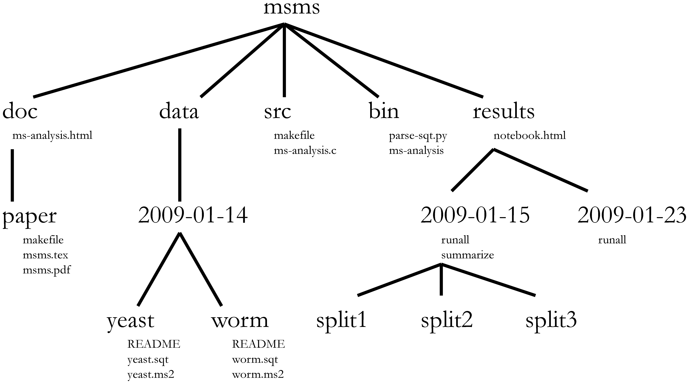
一个定义明确且文档详尽的项目目录，其最重要的方面在于能够让不熟悉该项目的人4
了解该项目的内容、有哪些可用数据、运行了哪些分析以及产生了哪些结果，而最重要的是，
重新进行分析 —— 使用新数据，或更改某些分析参数。
工作目录
工作目录是一个需要理解的重要概念。它是 R 查找和保存文件的位置。在为项目编写代码时，应以工作目录的根目录为基准来引用文件，且仅需使用该结构下的文件。
使用 RStudio
项目可以简化这一过程，并确保工作目录设置正确。如果您需要检查工作目录，可以使用
getwd()。如果由于某种原因工作目录与预期不符，您可以在
RStudio
界面中通过在文件浏览器中导航至应为工作目录的位置，点击蓝色齿轮图标
More，然后选择 Set As Working Directory
来更改。或者，您也可以使用
setwd("/path/to/working/directory")
来重置工作目录。不过，您的脚本不应包含这行代码，因为在他人的计算机上运行时会报错。
示例
下面的示意图展示了工作目录 bioc-intro，其中包含
data 和 fig_output 子目录，且后者包含 2
个文件：
bioc-intro/data/
/fig_output/fig1.pdf
/fig_output/fig2.png如果我们处于工作目录中，可以使用相对路径
bioc-intro/fig_output/fig1.pdf 或绝对路径
/home/user/bioc-intro/fig_output/fig1.pdf 来引用
fig1.pdf 文件。
如果我们处于 data 目录下，我们会使用相对路径
../fig_output/fig1.pdf 或相同的绝对路径
/home/user/bioc-intro/fig_output/fig1.pdf。
与 R 交互
编程的基础在于我们编写计算机可执行的指令，然后告诉计算机执行这些指令。我们在 R 中编写指令，或称代码，因为它是一种计算机和我们都能理解的通用语言。我们将这些指令称为命令，并通过执行（也称为运行）这些命令来告诉计算机执行指令。
与 R 交互有两种主要方式：使用 控制台 或使用
脚本（包含代码的纯文本文件）。控制台窗格（在 RStudio
中为左下角面板）是可以直接输入 R
语言命令并由计算机立即执行的地方。这里也会显示已执行命令的结果。您可以直接在控制台中输入命令并按下
Enter
来执行这些命令，但一旦关闭会话，这些命令将被丢失。
由于我们希望代码和工作流程具有可复现性，最好将所需的命令输入到脚本编辑器中并保存脚本。这样一来，我们所做的一切都会有完整的记录，任何人（包括未来的自己！）都可以在自己的计算机上轻松复现结果。但请注意，仅在脚本中输入命令并不会自动运行它们——它们仍需发送至控制台进行执行。
RStudio 允许您使用 Ctrl + Enter
快捷键直接在脚本编辑器中执行命令（在 Mac 上，Cmd +
Return 同样有效）。当您按下 Ctrl +
Enter
时，脚本当前行上的命令（由光标指示）或当前选中的所有文本中的命令都将被发送至控制台并执行。您可以在这份
关于
RStudio IDE 的 RStudio 快捷指南 中找到其他键盘快捷键。
在分析过程中，您可能需要检查变量的内容或对象的结构，而无需必须在脚本中记录这些信息。您可以直接在控制台中输入并执行这些命令。RStudio
提供了 Ctrl + 1 和 Ctrl +
2 快捷键，让您可以在脚本窗口和控制台窗口之间切换。
如果 R 已准备好接收命令，R 控制台将显示 >
提示符。如果它接收到命令（通过输入、复制粘贴或使用 Ctrl +
Enter 从脚本编辑器发送），R
将尝试执行该命令，并在准备就绪后显示结果，随后返回并显示新的
> 提示符以等待新命令。
如果 R 仍在等待您输入更多数据，因为数据尚未完整，控制台将显示
+
提示符。这意味着您尚未完成输入一个完整的命令。这是因为您没有“闭合”括号或引号，也就是说，左括号的数量与右括号不一致，或者引号的开头和结尾数量不相等。当这种情况发生且您认为已经完成了命令输入时，请点击控制台窗口内部并按下
Esc；这将取消未完成的命令，并让您回到 >
提示符。
如何在课程期间及课程结束后进一步学习？
本课程涵盖的内容将让你初步体验如何使用 R 为自己的研究分析数据。然而，若要进行更高级的操作，例如清洗数据集、使用统计方法或创建精美的图表5，你还需要学习更多知识。与任何其他工具一样，熟练且高效地掌握 R 的最佳方式，就是将其用于解决你实际的研究问题。对于初学者来说，从零开始编写脚本可能会让人感到畏难，且考虑到许多人在网上公开了代码，修改现有代码以适应你的目的可能会让你更容易入门。
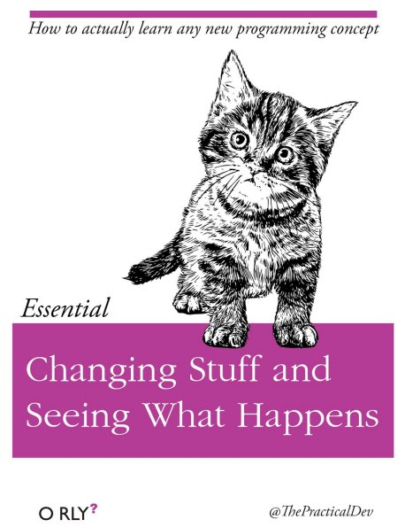
寻求帮助
使用 RStudio 内置的帮助界面搜索更多关于 R 函数的信息

获取帮助最快的方法之一是使用 RStudio 的帮助界面。该面板默认位于 RStudio 的右下角。如截图所示，通过输入关键字“Mean”，RStudio 还会尝试提供一些您可能感兴趣的建议。随后，相关描述将显示在显示窗口中。
我知道想要使用的函数名称，但不确定如何使用它
如果您需要关于某个特定函数（例如
barplot()）的帮助，可以输入：
R
?barplot
如果您只需要回顾参数名称，可以使用：
R
args(lm)
我想使用一个能实现 X 功能的函数，肯定有相应的函数，但我不知道是哪一个……
如果您想寻找一个用于执行特定任务的函数，可以使用
help.search() 函数，该函数通过双问号 ??
调用。不过，这仅会在已安装的包中查找与您的搜索请求匹配的帮助页面。
R
??kruskal
如果您找不到所需内容，可以使用 rdocumentation.org 网站，该网站可搜索所有可用包中的帮助文件。
最后，在 Google 或网上进行通用搜索“R <task>”，通常会将你引导至相应的包文档，或者引导至一个有用的论坛，那里可能已经有人问过你的问题。
我卡住了……收到了一条我不理解的错误消息
首先尝试在 Google 上搜索错误消息。不过，这并不总是奏效，因为软件包开发者通常依赖 R 提供的错误捕获机制。这会导致你得到一些泛泛的错误消息，可能对诊断问题没有太大帮助（例如“subscript out of bounds”）。如果消息非常笼统，你也可以在搜索词中加入所使用的函数或软件包的名称。
不过，你应该查看 Stack Overflow。使用 [r]
标签进行搜索。大多数问题都已经得到了解答，但挑战在于在搜索时使用正确的词汇才能找到答案：
https://stackoverflow.com/questions/tagged/r
R 入门 对于编程经验较少的人来说可能也较为晦涩，但它是了解 R 语言基础的好地方。
R FAQ 内容详尽且具有技术性，但充满了实用信息。
寻求帮助
获得他人帮助的关键在于让对方能够快速掌握你的问题。你应当尽可能让对方轻松地定位问题所在。
请尽量使用正确的词汇来描述你的问题。例如，包（package）与库（library）并非同一事物。大多数人都能理解你的意思，但有些人对这两者在含义上的区别持有强烈的看法。关键在于，这可能会让试图帮助你的人感到困惑。在描述问题时，请尽可能精准。
如果可能，请尽量将无法运行的部分简化为一个简单的可复现示例。如果你能使用一个非常小的数据框而非那个 50000 行 10000 列的数据框来复现问题，请在提供问题描述的同时，附上该小数据框。在适当的情况下，请尝试将操作内容泛化，以便非同行也能理解你的问题。例如，不要使用真实数据集的子集，而是创建一个小型（3 列, 5 行）的通用数据集。有关如何编写可复现示例的更多信息，请参阅 Hadley Wickham 的这篇文章。
若要与他人共享对象，且该对象相对较小，可以使用 dput()
函数。它将输出 R 代码，可用于还原与内存中完全相同的对象：
R
## iris is an example data frame that comes with R and head() is a
## function that returns the first part of the data frame
dput(head(iris))
输出
structure(list(Sepal.Length = c(5.1, 4.9, 4.7, 4.6, 5, 5.4),
Sepal.Width = c(3.5, 3, 3.2, 3.1, 3.6, 3.9), Petal.Length = c(1.4,
1.4, 1.3, 1.5, 1.4, 1.7), Petal.Width = c(0.2, 0.2, 0.2,
0.2, 0.2, 0.4), Species = structure(c(1L, 1L, 1L, 1L, 1L,
1L), levels = c("setosa", "versicolor", "virginica"), class = "factor")), row.names = c(NA,
6L), class = "data.frame")如果对象较大，请提供原始文件（即您的 CSV 文件）以及直到出现错误为止的脚本（并删除所有与问题无关的内容）。或者，特别是当您的问题与数据框无关时，您可以将任何 R 对象保存到文件中[^export]：
R
saveRDS(iris, file="/tmp/iris.rds")
不过，该文件的内容并非人类可读，无法直接发布在 Stack Overflow
上。相反，可以通过电子邮件发送给他人，对方可以使用
readRDS()
命令将其读取（此处假设下载的文件位于用户主目录下的
Downloads 文件夹中）：
R
some_data <- readRDS(file="~/Downloads/iris.rds")
最后但同样重要的一点是，务必附上 sessionInfo()
的输出结果，因为它提供了关于您的平台、所使用的 R
版本和包以及其他对理解您的问题非常有帮助的关键信息。
R
sessionInfo()
输出
R version 4.6.2 (2026-10-29)
Platform: aarch64-apple-darwin23
Running under: macOS Golden Gate 27.2
Matrix products: default
BLAS: /Library/Frameworks/R.framework/Versions/4.6/Resources/lib/libRblas.0.dylib
LAPACK: /Library/Frameworks/R.framework/Versions/4.6/Resources/lib/libRlapack.dylib; LAPACK version 3.12.1
locale:
[1] C.UTF-8/C.UTF-8/C.UTF-8/C/C.UTF-8/C.UTF-8
time zone: Asia/Tokyo
tzcode source: internal
attached base packages:
[1] stats graphics grDevices utils datasets methods base
loaded via a namespace (and not attached):
[1] compiler_4.6.2 cli_3.6.6 tools_4.6.2 otel_0.2.0 knitr_1.52
[6] xfun_0.62 rlang_1.3.0 png_0.1-9 evaluate_1.0.5在哪里寻求帮助？
- 课程期间坐在你身边的人。在工作坊期间，请随时与邻座交流，比对答案并寻求帮助。
- 你的友好同事：如果你认识比你经验更丰富的人，他们可能能够且愿意帮助你。
- Stack Overflow：如果你的问题此前尚未得到解答且表述得当，很有可能在 5 分钟内就能获得答案。记得遵循其关于如何提问的指南。
- R-help 邮件列表：这里有很多人在阅读（包括大多数 R 核心团队成员），发帖的人也很多，但语气可能相当枯燥，且并不总是对新用户非常友好。如果你的问题合理，很可能会很快得到回复，但不要指望回复中会出现笑脸符号。此外，在这里比在任何其他地方都更需要确保使用正确的词汇（否则你得到的回复可能会指出你的用词错误，而不是直接回答你的问题）。如果你的问题是关于基础函数而非特定包，成功率也会更高。
- 如果您的问题涉及某个特定包，请查看是否有相应的邮件列表。通常该信息包含在包的
DESCRIPTION 文件中，可以通过
packageDescription("name-of-package")访问。您也可以尝试直接发送电子邮件给该包的作者，或者在代码仓库（例如 GitHub）中提交一个 issue。 - 此外，还有一些特定主题的邮件列表（GIS、系统发育等……），完整列表可在 R-project 邮件列表页面 查看。
R 包
加载包
如上所述，R 包在 R
中发挥着至关重要的作用。若要使用某个包的功能（前提是该包已安装），我们首先需要将其加载才能使用。这可以通过
library() 函数实现。下面，我们加载
ggplot2。
R
library("ggplot2")
安装包
默认的包仓库是 Comprehensive R Archive Network
(CRAN)，任何在 CRAN 上可用的包都可以使用 install.packages()
函数安装。下面，例如，我们将安装稍后将要学习的 dplyr
包。
R
install.packages("dplyr")
此命令将安装 dplyr
包及其所有依赖项，即该包运行所依赖的所有包。
另一个主要的 R 包仓库由 Bioconductor 维护。Bioconductor
包 通过一个专用包——即 BiocManager
进行管理和安装，该包可从 CRAN 安装，使用
R
install.packages("BiocManager")
随后，可以使用 BiocManager::install 安装单个包，例如
SummarizedExperiment（稍后将使用）、DESeq2（用于
RNA-Seq 分析），以及来自 Bioconductor 或 CRAN 的任何其他包。
R
BiocManager::install("SummarizedExperiment")
BiocManager::install("DESeq2")
默认情况下，BiocManager::install()
还会检查所有已安装的包，查看是否有更新版本。如果有，它会向您显示这些版本，并询问您是否要
Update all/some/none? [a/s/n]:，然后等待您的回答。虽然您应当尽量保持包版本为最新，但在实践中，我们建议仅在启动新的
R 会话且尚未加载任何包之前更新包。
- 开始使用 R 和 RStudio
Content from R 入门
最后更新于 2026-11-07 | 编辑此页
预计用时： 120 分钟
概述
问题
- R 的初步命令
学习目标
- 定义与 R 相关的以下术语：对象、赋值、调用、函数、参数、选项。
- 为 R 中的对象赋值。
- 学习如何为对象命名
- 使用注释为脚本提供说明。
- 在 R 中执行简单的算术运算。
- 调用函数并使用参数来更改其默认选项。
- 检查向量的内容并对其内容进行操作。
- 从向量中提取子集并提取值。
- 分析包含缺失数据的向量。
本节基于 Data Carpentries 的 Data Analysis and Visualisation in R for Ecologists 课程。
在 R 中创建对象
您只需在控制台中输入数学表达式，即可获得 R 的输出结果：
R
3 + 5
输出
[1] 8R
12 / 7
输出
[1] 1.714286然而，为了实现实用且有趣的操作，我们需要为对象赋予值。要创建一个对象，我们需要为其命名，随后加上赋值运算符
<- 以及我们想要赋予的值：
R
weight_kg <- 55
<-
是赋值运算符。它将右侧的值赋给左侧的对象。因此，执行
x <- 3 后，x 的值就是
3。这个箭头可以理解为 3 进入
x。出于历史原因，你也可以使用 =
进行赋值，但并非在所有场景下都适用。由于语法上存在细微差别，建议始终使用
<- 进行赋值。
在 RStudio 中，输入 Alt + -（在按下
- 键的同时按下 Alt）即可在 PC 上一次按键写入
<-，而输入 Option + -（在按下
- 键的同时按下 Option）则在 Mac
上实现同样的效果。
命名变量
对象可以使用任何名称，例如
x、current_temperature 或
subject_id。建议对象名称要明确且不要过长。名称不能以数字开头（2x
无效，但 x2 有效）。R
区分大小写（例如，weight_kg 与 Weight_kg
不同）。某些名称因是 R 的基本函数名称而不能使用（例如
if、else、for，完整列表请参阅 R
中的保留字
手册页）。通常情况下，即使允许使用，最好也不要使用其他函数名称（例如
c、T、mean、data、df、weights）。如有疑问，请查看帮助文档以确认该名称是否已被占用。此外，最好避免在对象名称中使用点号（如
my.dataset 中的 .）。出于历史原因，R
中有许多函数名称包含点号，但由于点号在
R（用于方法）和其他编程语言中具有特殊含义，因此最好避免使用。同时建议对对象名称使用名词，对函数名称使用动词。保持代码格式的一致性（如空格的位置、对象的命名方式等）至关重要。使用一致的编码风格能让你未来的自己和合作者更清晰地阅读代码。在
R 中，一些常用的风格指南包括 Google 的、tidyverse 的 风格以及 Bioconductor
风格指南。tidyverse
的指南非常详尽，起初可能会让人感到不知所措。你可以安装 lintr
包，以自动检查代码格式是否存在问题。
对象与变量：在
R中被称为objects的内容，在许多其他编程语言中则被称为variables。根据上下文的不同，object和variable的含义可能截然不同。不过，在本节课中，这两个词被互换使用。欲了解更多信息，请参阅此处。
在为对象赋值时，R 不会输出任何内容。你可以通过使用括号或直接输入对象名称来强制 R 输出该值：
R
weight_kg <- 55 # doesn't print anything
(weight_kg <- 55) # but putting parenthesis around the call prints the value of `weight_kg`
输出
[1] 55R
weight_kg # and so does typing the name of the object
输出
[1] 55现在 R 的内存中已经有了
weight_kg，我们可以对其进行算术运算。例如，我们可能想将这个重量转换为磅（磅重量是公斤重量的
2.2 倍）：
R
2.2 * weight_kg
输出
[1] 121我们还可以通过赋值新值来更改对象的值：
R
weight_kg <- 57.5
2.2 * weight_kg
输出
[1] 126.5这意味着为一个对象赋值不会改变其他对象的值。例如，让我们将动物的重量（单位为磅）存储在一个新对象
weight_lb 中：
R
weight_lb <- 2.2 * weight_kg
然后将 weight_kg 更改为 100。
R
weight_kg <- 100
挑战：
你认为对象 weight_lb 目前的内容是什么？126.5 还是
220？
注释
R 中的注释符号是 #，脚本中 #
右侧的任何内容都将被 R 忽略。在脚本中留下备注和说明非常有用。
RStudio 让注释或取消注释段落变得简单便捷：选中想要注释的行后，同时按下键盘上的 Ctrl + Shift + C。如果你只想注释一行，可以将光标置于该行的任意位置（即无需选中整行），然后按下 Ctrl + Shift + C。
挑战
以下每条语句后的值分别是什么？
R
mass <- 47.5 # mass?
age <- 122 # age?
mass <- mass * 2.0 # mass?
age <- age - 20 # age?
mass_index <- mass/age # mass_index?
函数及其参数
函数是“预设脚本”，用于自动化更复杂的命令集，包括运算赋值等。许多函数是预定义的，或者可以通过导入
R 包（稍后详述）来使用。函数通常接收一个或多个称为
参数 的输入。函数通常（但并非总是）返回一个
值。一个典型的例子是函数
sqrt()。输入（参数）必须是一个数字，而返回值（实际上就是输出）则是该数字的平方根。执行函数（“运行”它）被称为
调用 该函数。函数调用的一个示例如下：
R
b <- sqrt(a)
这里，a 的值被传递给 sqrt()
函数，sqrt() 函数计算平方根并返回该值，随后将该值赋值给对象
b。这个函数非常简单，因为它只接收一个参数。
函数的返回“值”不必是数值（如 sqrt()
那样），也不必是单一项：它可以是一组内容，甚至是一个数据集。我们在将数据文件读入
R 时将看到这一点。
参数可以是任何内容，不仅限于数字或文件名，还可以是其他对象。每个参数的具体含义因函数而异，必须在文档中查阅（见下文）。某些函数接收参数，这些参数可以由用户指定，或者在未指定时采用默认值：这些被称为选项。选项通常用于改变函数的运行方式，例如是否忽略“错误值”，或者在绘图中使用哪个符号。不过，如果你需要特定的设置，可以指定一个自定义值来替代默认值。
让我们试试一个可以接收多个参数的函数：round()。
R
round(3.14159)
输出
[1] 3这里，我们仅传递了一个参数 3.14159 调用了
round()，它返回了值
3。这是因为默认行为是舍入到最接近的整数。如果我们需要更多位数，可以通过获取关于
round 函数的信息来了解如何实现。我们可以使用
args(round)，或者使用 ?round
查看该函数的帮助信息。
R
args(round)
输出
function (x, digits = 0, ...)
NULLR
?round
我们可以看到，如果想要不同的位数，可以输入 digits=2
或任何想要的位数。
R
round(3.14159, digits = 2)
输出
[1] 3.14如果你按照定义顺序提供参数，则无需为其命名：
R
round(3.14159, 2)
输出
[1] 3.14而且，如果你为参数命名，就可以调换它们的顺序：
R
round(digits = 2, x = 3.14159)
输出
[1] 3.14在函数调用中，将必需参数（例如要舍入的数字）放在前面，并指定所有可选参数的名称，这是一个良好的实践。否则，阅读你代码的人可能需要查阅具有不熟悉参数的函数定义，才能理解你在做什么。通过指定参数名称，你还可以防范函数接口未来可能发生的变更，因为现有参数之间可能会增加新参数。
向量与数据类型
向量是 R 中最常见且最基础的数据类型，几乎是 R
的主力。向量由一系列值（如数字或字符）组成。我们可以使用
c()
函数将一系列值赋给向量。例如，我们可以创建一个动物体重向量，并将其赋给一个新对象
weight_g：
R
weight_g <- c(50, 60, 65, 82)
weight_g
输出
[1] 50 60 65 82向量也可以包含字符：
R
molecules <- c("dna", "rna", "protein")
molecules
输出
[1] "dna" "rna" "protein"这里 “dna”、“rna” 等字符串周围的引号至关重要。如果没有引号，R
会认为存在名为 dna、rna 和
protein 的对象。由于这些对象在 R
的内存中并不存在，因此会出现错误消息。
有许多函数可以让你检查向量的内容。length()
会告诉你某个特定向量中包含多少个元素：
R
length(weight_g)
输出
[1] 4R
length(molecules)
输出
[1] 3向量的一个重要特点是，所有元素都属于同一类型的数据。函数
class() 用于表示对象的类（元素类型）：
R
class(weight_g)
输出
[1] "numeric"R
class(molecules)
输出
[1] "character"str()
函数可提供对对象及其元素结构的概览。在处理大型且复杂的对象时，这是一个非常有用的函数：
R
str(weight_g)
输出
num [1:4] 50 60 65 82R
str(molecules)
输出
chr [1:3] "dna" "rna" "protein"您可以使用 c() 函数向向量中添加其他元素：
R
weight_g <- c(weight_g, 90) # add to the end of the vector
weight_g <- c(30, weight_g) # add to the beginning of the vector
weight_g
输出
[1] 30 50 60 65 82 90在第一行中，我们取原向量 weight_g，在其末尾添加值
90，并将结果保存回
weight_g。然后，我们在开头添加值
30，同样将结果保存回 weight_g。
我们可以重复此操作来扩展向量，或构建数据集。在编程过程中，这对于添加我们正在收集或计算的结果会很有用。
原子向量是最简单的 R
数据类型，是单一类型的线性向量。上面我们看到了 R 使用的
6 种主要 原子向量 类型中的 2
种："character" 和 "numeric"（或
"double"）。这些是所有 R 对象构建的基本构建块。另外 4 种
原子向量 类型为：
-
"logical"用于TRUE和FALSE（布尔数据类型） -
"integer"表示整数（例如2L，其中L告知 R 这是一个整数） -
"complex"用于表示具有实部和虚部的复数（例如1 + 4i），关于它们我们仅此而已。 -
"raw"用于后续不讨论的位流
您可以使用 typeof()
函数并将向量作为参数输入，来检查向量的类型。
向量是 R
使用的众多数据结构之一。其他重要的数据结构还包括列表
(list)、矩阵 (matrix)、数据框
(data.frame)、因子 (factor) 和数组
(array)。
挑战：
我们已经看到，原子向量可以是字符型、数值型（或 double 型）、整数型和逻辑型。但如果我们尝试在同一个向量中混合使用这些类型，会发生什么呢？
R 会隐式地将它们全部转换为同一种类型
挑战：
在这些示例中会发生什么？（提示：使用 class()
检查对象的数据类型，并输入其名称以查看结果）：
R
num_char <- c(1, 2, 3, "a")
num_logical <- c(1, 2, 3, TRUE, FALSE)
char_logical <- c("a", "b", "c", TRUE)
tricky <- c(1, 2, 3, "4")
R
class(num_char)
输出
[1] "character"R
num_char
输出
[1] "1" "2" "3" "a"R
class(num_logical)
输出
[1] "numeric"R
num_logical
输出
[1] 1 2 3 1 0R
class(char_logical)
输出
[1] "character"R
char_logical
输出
[1] "a" "b" "c" "TRUE"R
class(tricky)
输出
[1] "character"R
tricky
输出
[1] "1" "2" "3" "4"挑战：
你认为这是为什么会发生？
向量只能具有一种数据类型。R 会尝试转换（强制转换）该向量的内容，以找到一种不会丢失任何信息的共同类型。
挑战：
在以下示例中，combined_logical 中有多少个值是
"TRUE"（作为字符）：
R
num_logical <- c(1, 2, 3, TRUE)
char_logical <- c("a", "b", "c", TRUE)
combined_logical <- c(num_logical, char_logical)
只有一个。系统不记忆之前的数据类型，强制转换发生在向量首次求值时。因此，num_logical
中的 TRUE 在被 combined_logical 转换为
"1" 之前，会先被转换为 1。
R
combined_logical
输出
[1] "1" "2" "3" "1" "a" "b" "c" "TRUE"挑战：
在 R 中，我们将对象从一个类转换为另一个类的过程称为强制转换。这些转换遵循一种层级结构，其中某些类型会优先被强制转换为其他类型。你能绘制一张图表来展示这些数据类型强制转换的层级关系吗？
逻辑 → 数值 → 字符 ← 逻辑
向量子集提取
如果我们想从向量中提取一个或多个值，必须在方括号内提供一个或多个索引。例如：
R
molecules <- c("dna", "rna", "peptide", "protein")
molecules[2]
输出
[1] "rna"R
molecules[c(3, 2)]
输出
[1] "peptide" "rna" 我们还可以重复索引，以创建一个比原对象包含更多元素的对象：
R
more_molecules <- molecules[c(1, 2, 3, 2, 1, 4)]
more_molecules
输出
[1] "dna" "rna" "peptide" "rna" "dna" "protein"R 的索引从 1 开始。Fortran、MATLAB、Julia 和 R 等编程语言从 1 开始计数，因为这是人类的常规做法。C 语言家族（包括 C++、Java、Perl 和 Python）从 0 开始计数，因为这对计算机来说更简单。
最后，还可以使用负索引来获取向量中除某些指定元素之外的所有元素：
R
molecules ## all molecules
输出
[1] "dna" "rna" "peptide" "protein"R
molecules[-1] ## all but the first one
输出
[1] "rna" "peptide" "protein"R
molecules[-c(1, 3)] ## all but 1st/3rd ones
输出
[1] "rna" "protein"R
molecules[c(-1, -3)] ## all but 1st/3rd ones
输出
[1] "rna" "protein"条件子集选取
另一种常见的子集选取方式是使用逻辑向量。TRUE
将选取索引相同的元素，而 FALSE 则不会：
R
weight_g <- c(21, 34, 39, 54, 55)
weight_g[c(TRUE, FALSE, TRUE, TRUE, FALSE)]
输出
[1] 21 39 54通常，这些逻辑向量并非手动输入，而是其他函数或逻辑测试的输出结果。例如，如果你想仅选择大于 50 的值：
R
## will return logicals with TRUE for the indices that meet
## the condition
weight_g > 50
输出
[1] FALSE FALSE FALSE TRUE TRUER
## so we can use this to select only the values above 50
weight_g[weight_g > 50]
输出
[1] 54 55您可以使用 &（两个条件均为真，AND）或
|（至少有一个条件为真，OR）来组合多个测试：
R
weight_g[weight_g < 30 | weight_g > 50]
输出
[1] 21 54 55R
weight_g[weight_g >= 30 & weight_g == 21]
输出
numeric(0)这里，< 表示“小于”，>
表示“大于”，>= 表示“大于或等于”，==
表示“等于”。双等号 ==
用于测试左侧和右侧的数值是否相等，不应与单个 =
符号混淆，后者用于变量赋值（类似于 <-）。
一个常见的任务是在向量中搜索特定字符串。可以使用“或”运算符
| 来检查是否等于多个值，但这很快会变得繁琐。函数
%in% 允许你检查搜索向量的任何元素是否被找到：
R
molecules <- c("dna", "rna", "protein", "peptide")
molecules[molecules == "rna" | molecules == "dna"] # returns both rna and dna
输出
[1] "dna" "rna"R
molecules %in% c("rna", "dna", "metabolite", "peptide", "glycerol")
输出
[1] TRUE TRUE FALSE TRUER
molecules[molecules %in% c("rna", "dna", "metabolite", "peptide", "glycerol")]
输出
[1] "dna" "rna" "peptide"挑战：
你能想出为什么 "four" > "five" 会返回
TRUE 吗？
R
"four" > "five"
输出
[1] TRUE在对字符串使用 > 或 < 时，R
会比较它们的字母顺序。这里，"four" 排在 "five"
之后，因此大于它。
名称
可以为向量的每个元素命名。下面的代码块展示了一个最初没有名称的向量，以及如何设置和检索名称。
R
x <- c(1, 5, 3, 5, 10)
names(x) ## no names
输出
NULLR
names(x) <- c("A", "B", "C", "D", "E")
names(x) ## now we have names
输出
[1] "A" "B" "C" "D" "E"当向量带有名称时，除了通过索引外，还可以通过名称访问其元素。
R
x[c(1, 3)]
输出
A C
1 3 R
x[c("A", "C")]
输出
A C
1 3 缺失数据
由于 R
旨在分析数据集，因此它包含了缺失数据的概念（这在其他编程语言中并不常见）。在向量中，缺失数据用
NA 表示。
在对数值进行运算时，如果处理的数据中包含缺失值，大多数函数都会返回
NA。这一特性使得人们更难以忽略处理缺失数据的情况。您可以添加参数
na.rm = TRUE，以在忽略缺失值的情况下计算结果。
R
heights <- c(2, 4, 4, NA, 6)
mean(heights)
输出
[1] NAR
max(heights)
输出
[1] NAR
mean(heights, na.rm = TRUE)
输出
[1] 4R
max(heights, na.rm = TRUE)
输出
[1] 6如果您的数据包含缺失值，您可能需要熟悉
is.na()、na.omit() 和
complete.cases() 这几个函数。示例请参阅下文。
R
## Extract those elements which are not missing values.
heights[!is.na(heights)]
输出
[1] 2 4 4 6R
## Returns the object with incomplete cases removed.
## The returned object is an atomic vector of type `"numeric"`
## (or `"double"`).
na.omit(heights)
输出
[1] 2 4 4 6
attr(,"na.action")
[1] 4
attr(,"class")
[1] "omit"R
## Extract those elements which are complete cases.
## The returned object is an atomic vector of type `"numeric"`
## (or `"double"`).
heights[complete.cases(heights)]
输出
[1] 2 4 4 6挑战：
- 使用这组以英寸为单位的身高向量，创建一个去除 NA 值的新向量。
R
heights <- c(63, 69, 60, 65, NA, 68, 61, 70, 61, 59, 64, 69, 63, 63, NA, 72, 65, 64, 70, 63, 65)
- 使用函数
median()计算heights向量的中位数。 - 使用 R 计算该集合中身高超过 67 英寸的人数。
R
heights_no_na <- heights[!is.na(heights)]
## or
heights_no_na <- na.omit(heights)
R
median(heights, na.rm = TRUE)
输出
[1] 64R
heights_above_67 <- heights_no_na[heights_no_na > 67]
length(heights_above_67)
输出
[1] 6生成向量
构造函数
有一些函数可用于生成不同类型的向量。若要生成数值向量，可以使用
numeric()
构造函数，并将输出向量的长度作为参数提供。其值将被初始化为 0。
R
numeric(3)
输出
[1] 0 0 0R
numeric(10)
输出
[1] 0 0 0 0 0 0 0 0 0 0请注意，如果我们请求一个长度为 0 的数值向量，我们将恰好得到该向量：
R
numeric(0)
输出
numeric(0)针对字符和逻辑值也有类似的构造函数，分别命名为
character() 和 logical()。
挑战：
字符向量和逻辑向量的默认值是什么？
R
character(2) ## the empty character
输出
[1] "" ""R
logical(2) ## FALSE
输出
[1] FALSE FALSE复制元素
rep
函数可以将某个值重复指定次数。例如，如果我们想初始化一个长度为 5 且值为
-1 的数值向量，可以这样做：
R
rep(-1, 5)
输出
[1] -1 -1 -1 -1 -1同样地，若要生成一个包含缺失值的向量（这通常是一个很好的起点，且无需对待采集的数据设定任何假设）：
R
rep(NA, 5)
输出
[1] NA NA NA NA NArep
可以接收任意长度的向量作为输入（上述示例中使用了长度为 1
的向量），且支持任何类型。例如，如果我们想将值 1、2 和 3
重复五次，可以这样做：
R
rep(c(1, 2, 3), 5)
输出
[1] 1 2 3 1 2 3 1 2 3 1 2 3 1 2 3挑战：
如果我们想将值 1、2 和 3 重复五次，但希望按此顺序获得五个 1、五个 2
和五个 3 呢？有两种可能 —— 请参阅 ?rep 或
?sort 以获取帮助。
R
rep(c(1, 2, 3), each = 5)
输出
[1] 1 1 1 1 1 2 2 2 2 2 3 3 3 3 3R
sort(rep(c(1, 2, 3), 5))
输出
[1] 1 1 1 1 1 2 2 2 2 2 3 3 3 3 3序列生成
另一个非常有用的函数是
seq，用于生成数值序列。例如，若要生成一个从 1 到 20
且步长为 2 的整数序列，可以使用：
R
seq(from = 1, to = 20, by = 2)
输出
[1] 1 3 5 7 9 11 13 15 17 19by 的默认值为
1，且考虑到经常需要生成由一个值到另一个值、步长为 1
的序列，有一个快捷方法：
R
seq(1, 5, 1)
输出
[1] 1 2 3 4 5R
seq(1, 5) ## default by
输出
[1] 1 2 3 4 5R
1:5
输出
[1] 1 2 3 4 5若要生成一个从 1 到 20 且最终长度为 3 的数列，可以使用：
R
seq(from = 1, to = 20, length.out = 3)
输出
[1] 1.0 10.5 20.0随机样本与置换
最后一组实用函数是用于生成随机数据的函数。第一个函数
sample 用于生成另一个向量的随机排列。例如，若要为 10
名学生的口试抽取随机顺序，我首先为每名学生分配一个 1 到 10
的编号（例如根据姓名的字母顺序），然后：
R
sample(1:10)
输出
[1] 9 4 7 1 2 5 3 10 6 8如果不提供进一步参数，sample
将返回该向量所有元素的排列。如果我想获取特定大小的随机样本，我会将此值设为第二个参数。下面，我从预定义的
letters 向量中随机抽取 5 个字母：
R
sample(letters, 5)
输出
[1] "s" "a" "u" "x" "j"如果我想要的输出比输入向量更大，或者能够多次抽取某些元素，我就需要将
replace 参数设置为 TRUE：
R
sample(1:5, 10, replace = TRUE)
输出
[1] 2 1 5 5 1 1 5 5 2 2挑战：
在尝试上述函数时，你会发现样本确实是随机的，且不会两次获得相同的排列。为了能够复现这些随机抽取，可以在抽取随机样本之前，使用
set.seed() 手动设置随机数生成的种子。
与邻座一起测试此功能。首先独立抽取 1:10
的两个随机排列，并观察到结果不同。
现在使用例如 set.seed(123)
设置种子，并重复随机抽取。观察到现在得到的随机抽取结果相同。
通过设置不同的种子重复此操作。
不同的排列
R
sample(1:10)
输出
[1] 9 1 4 3 6 2 5 8 10 7R
sample(1:10)
输出
[1] 4 9 7 6 1 10 8 3 2 5种子为 123 时的相同置换
R
set.seed(123)
sample(1:10)
输出
[1] 3 10 2 8 6 9 1 7 5 4R
set.seed(123)
sample(1:10)
输出
[1] 3 10 2 8 6 9 1 7 5 4不同的种子
R
set.seed(1)
sample(1:10)
输出
[1] 9 4 7 1 2 5 3 10 6 8R
set.seed(1)
sample(1:10)
输出
[1] 9 4 7 1 2 5 3 10 6 8从正态分布中抽取样本
我们要看到的最后一个函数是
rnorm，它可以从正态分布中抽取随机样本。下面展示了两个均值为
0 和 100、标准差为 1 和 5 的正态分布，分别记作 N(0, 1) 和
N(100, 5)。

这三个参数 n、mean 和 sd
分别定义了样本大小以及正态分布的参数，即均值及其标准差。后者的默认值为 0
和 1。
R
rnorm(5)
输出
[1] 0.69641761 0.05351568 -1.31028350 -2.12306606 -0.20807859R
rnorm(5, 2, 2)
输出
[1] 1.3744268 -0.1164714 2.8344472 1.3690969 3.6510983R
rnorm(5, 100, 5)
输出
[1] 106.45636 96.87448 95.62427 100.71678 107.12595既然我们已经学会了如何编写脚本以及 R 数据结构的基础知识，现在可以开始处理更大规模的数据，并学习数据框了。
- 如何与 R 交互
Content from 从数据开始
最后更新于 2026-11-07 | 编辑此页
预计用时： 60 分钟
概述
问题
- R 语言中的初步数据分析
学习目标
- 描述什么是
data.frame。 - 从 .csv 文件中将外部数据加载到数据框中。
- 汇总数据框的内容。
- 描述什么是因子。
- 在字符串和因子之间进行转换。
- 重新排序并重命名因子。
- 格式化日期。
- 导出并保存数据。
本集基于 Data Carpentries 的 Data Analysis and Visualisation in R for Ecologists 课程。
基因表达数据的呈现
我们将使用 Blackmore et al. (2017) 发表的部分数据，即《上呼吸道感染对中枢神经系统转录组变化的影响》。该研究的目的是确定上呼吸道感染对感染后小脑和脊髓中 RNA 转录变化的影响。将性别匹配的八周龄 C57BL/6 小鼠经鼻腔途径接种生理盐水或甲型流感病毒，并在第 0 天（未感染）、4 天和 8 天通过 RNA-seq 评估小脑和脊髓组织的转录组变化。
该数据集以逗号分隔值 (CSV) 文件的形式存储。每一行包含单次 RNA 表达测量的信息，前 11 列分别表示：
| 列 | 描述 |
|---|---|
| gene | 所测量的基因名称 |
| sample | 测量基因表达的样本名称 |
| expression | 基因表达的值 |
| organism | 生物体/物种 —— 此处所有数据均来自小鼠 |
| age | 小鼠的年龄（此处所有小鼠均为 8 周龄） |
| sex | 小鼠的性别 |
| infection | 小鼠的感染状态，即是否感染甲型流感。 |
| strain | 甲型流感毒株。 |
| time | 感染持续时间（以天为单位）。 |
| tissue | 用于基因表达实验的组织，即小脑或脊髓。 |
| mouse | 小鼠唯一标识符。 |
我们将使用 R 函数 download.file() 下载包含基因表达数据的
CSV 文件，并使用 read.csv() 将 CSV 文件的内容作为
data.frame 类的对象加载到内存中。在
download.file 命令中，第一个项是一个包含源 URL
的字符串。该源 URL 从 GitHub 仓库下载一个 CSV 文件。逗号后的文本
("data/rnaseq.csv")
是文件在本地机器上的目标位置。您的机器上需要有一个名为
"data"
的文件夹，用于下载该文件。因此，此命令下载远程文件，将其命名为
"rnaseq.csv"，并将其添加到名为 "data"
的现有文件夹中。
R
download.file(url = "https://github.com/carpentries-incubator/bioc-intro/raw/main/episodes/data/rnaseq.csv",
destfile = "data/rnaseq.csv")
现在您可以加载数据了：
R
rna <- read.csv("data/rnaseq.csv")
这条语句不会产生任何输出，因为正如你可能记得的，赋值操作不会显示任何内容。如果我们想检查数据是否已加载，可以通过输入数据框的名称来查看其内容：
R
rna
哇……输出量真大。至少这意味着数据已正确加载。让我们使用
head() 函数来检查这个数据框的前几行（前 6 行）：
R
head(rna)
输出
gene sample expression organism age sex infection strain time
1 Asl GSM2545336 1170 Mus musculus 8 Female InfluenzaA C57BL/6 8
2 Apod GSM2545336 36194 Mus musculus 8 Female InfluenzaA C57BL/6 8
3 Cyp2d22 GSM2545336 4060 Mus musculus 8 Female InfluenzaA C57BL/6 8
4 Klk6 GSM2545336 287 Mus musculus 8 Female InfluenzaA C57BL/6 8
5 Fcrls GSM2545336 85 Mus musculus 8 Female InfluenzaA C57BL/6 8
6 Slc2a4 GSM2545336 782 Mus musculus 8 Female InfluenzaA C57BL/6 8
tissue mouse ENTREZID
1 Cerebellum 14 109900
2 Cerebellum 14 11815
3 Cerebellum 14 56448
4 Cerebellum 14 19144
5 Cerebellum 14 80891
6 Cerebellum 14 20528
product
1 argininosuccinate lyase, transcript variant X1
2 apolipoprotein D, transcript variant 3
3 cytochrome P450, family 2, subfamily d, polypeptide 22, transcript variant 2
4 kallikrein related-peptidase 6, transcript variant 2
5 Fc receptor-like S, scavenger receptor, transcript variant X1
6 solute carrier family 2 (facilitated glucose transporter), member 4
ensembl_gene_id external_synonym chromosome_name gene_biotype
1 ENSMUSG00000025533 2510006M18Rik 5 protein_coding
2 ENSMUSG00000022548 <NA> 16 protein_coding
3 ENSMUSG00000061740 2D22 15 protein_coding
4 ENSMUSG00000050063 Bssp 7 protein_coding
5 ENSMUSG00000015852 2810439C17Rik 3 protein_coding
6 ENSMUSG00000018566 Glut-4 11 protein_coding
phenotype_description
1 abnormal circulating amino acid level
2 abnormal lipid homeostasis
3 abnormal skin morphology
4 abnormal cytokine level
5 decreased CD8-positive alpha-beta T cell number
6 abnormal circulating glucose level
hsapiens_homolog_associated_gene_name
1 ASL
2 APOD
3 CYP2D6
4 KLK6
5 FCRL2
6 SLC2A4R
## Try also
## View(rna)
注意
read.csv()
假设字段由逗号分隔，但在某些国家，逗号被用作小数点分隔符，而分号 (;)
则被用作字段分隔符。如果你想在 R 中读取此类文件，可以使用
read.csv2() 函数。它的行为与 read.csv()
完全相同，但对小数点和字段分隔符使用不同的参数。如果你处理的是其他格式，用户可以同时指定这两个参数。输入
?read.csv 查看 read.csv()
的帮助信息以了解更多详情。此外，还有用于读取制表符分隔数据文件的
read.delim()
函数。需要注意的是，所有这些函数实际上都是带有不同参数的主函数
read.table() 的包装函数。因此，上述数据也可以通过使用
read.table() 并将分隔参数设为 ,
来加载。代码如下：
R
rna <- read.table(file = "data/rnaseq.csv",
sep = ",",
header = TRUE)
必须将 header 参数设置为 TRUE 才能读取表头，因为默认情况下
read.table() 的 header 参数设置为 FALSE。
什么是数据框？
数据框是大多数表格数据的事实上的数据结构，也是我们用于统计和绘图的结构。
数据框可以手动创建，但最常见的是通过 read.csv() 或
read.table()
函数生成；换句话说，就是在从硬盘（或网络）导入电子表格时。
数据框是以表格形式表示数据的一种方式，其中各列均为长度相同的向量。由于各列均为向量，因此每列必须包含单一类型的数据（例如：字符、整数、因子）。例如，下图展示了一个由数值向量、字符向量和逻辑向量组成的数据框。
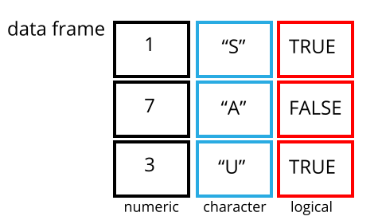
我们可以通过使用 str() 函数检查数据框的 structure
来看到这一点：
R
str(rna)
输出
'data.frame': 32428 obs. of 19 variables:
$ gene : chr "Asl" "Apod" "Cyp2d22" "Klk6" ...
$ sample : chr "GSM2545336" "GSM2545336" "GSM2545336" "GSM2545336" ...
$ expression : int 1170 36194 4060 287 85 782 1619 288 43217 1071 ...
$ organism : chr "Mus musculus" "Mus musculus" "Mus musculus" "Mus musculus" ...
$ age : int 8 8 8 8 8 8 8 8 8 8 ...
$ sex : chr "Female" "Female" "Female" "Female" ...
$ infection : chr "InfluenzaA" "InfluenzaA" "InfluenzaA" "InfluenzaA" ...
$ strain : chr "C57BL/6" "C57BL/6" "C57BL/6" "C57BL/6" ...
$ time : int 8 8 8 8 8 8 8 8 8 8 ...
$ tissue : chr "Cerebellum" "Cerebellum" "Cerebellum" "Cerebellum" ...
$ mouse : int 14 14 14 14 14 14 14 14 14 14 ...
$ ENTREZID : int 109900 11815 56448 19144 80891 20528 97827 118454 18823 14696 ...
$ product : chr "argininosuccinate lyase, transcript variant X1" "apolipoprotein D, transcript variant 3" "cytochrome P450, family 2, subfamily d, polypeptide 22, transcript variant 2" "kallikrein related-peptidase 6, transcript variant 2" ...
$ ensembl_gene_id : chr "ENSMUSG00000025533" "ENSMUSG00000022548" "ENSMUSG00000061740" "ENSMUSG00000050063" ...
$ external_synonym : chr "2510006M18Rik" NA "2D22" "Bssp" ...
$ chromosome_name : chr "5" "16" "15" "7" ...
$ gene_biotype : chr "protein_coding" "protein_coding" "protein_coding" "protein_coding" ...
$ phenotype_description : chr "abnormal circulating amino acid level" "abnormal lipid homeostasis" "abnormal skin morphology" "abnormal cytokine level" ...
$ hsapiens_homolog_associated_gene_name: chr "ASL" "APOD" "CYP2D6" "KLK6" ...检查 data.frame 对象
我们已经看到了 head() 和 str()
函数如何用于检查数据框的内容和结构。以下是一份并非详尽的函数列表，可用于了解数据的内容/结构。让我们试一试吧！
大小：
-
dim(rna)- 返回一个向量，第一个元素为行数，第二个元素为列数（对象的维度）。 -
nrow(rna)- 返回行数。 -
ncol(rna)- 返回列数。
内容：
-
head(rna)- 显示前 6 行。 -
tail(rna)- 显示最后 6 行。
名称：
-
names(rna)- 返回列名（对于data.frame对象，与colnames()同义）。 -
rownames(rna)- 返回行名。
摘要：
-
str(rna)- 对象的结构以及关于类别、每列长度和内容的信息。 -
summary(rna)- 每一列的汇总统计数据。
注：这些函数大多是“通用”的，除了 data.frame
之外，也可以用于其他类型的对象。
挑战：
根据 str(rna) 的输出结果，你能回答以下问题吗？
- 对象
rna的类型是什么？ - 该对象有多少行和多少列？
- 类型：数据框
- 行数：32428，列数：19
数据框的索引与子集提取
我们的 rna 数据框包含行和列（具有 2
维）；如果我们想从中提取某些特定数据，需要指定所需的“坐标”。行号在前，列号在后。但请注意，指定这些坐标的不同方式会导致结果的类型不同。
R
# first element in the first column of the data frame (as a vector)
rna[1, 1]
# first element in the 6th column (as a vector)
rna[1, 6]
# first column of the data frame (as a vector)
rna[, 1]
# first column of the data frame (as a data.frame)
rna[1]
# first three elements in the 7th column (as a vector)
rna[1:3, 7]
# the 3rd row of the data frame (as a data.frame)
rna[3, ]
# equivalent to head_rna <- head(rna)
head_rna <- rna[1:6, ]
head_rna
:
是一个特殊函数，用于创建递增或递减的整数数值向量，例如可试用
1:10 和 10:1。详情请参阅“生成向量”一节。
您还可以使用“-”符号来排除数据框中的某些索引：
R
rna[, -1] ## The whole data frame, except the first column
rna[-c(7:66465), ] ## Equivalent to head(rna)
数据框可以通过调用索引（如前所示）进行子集提取，也可以直接通过调用其列名来实现：
R
rna["gene"] # Result is a data.frame
rna[, "gene"] # Result is a vector
rna[["gene"]] # Result is a vector
rna$gene # Result is a vector
在 RStudio 中，您可以使用自动补全功能来获取列的完整且正确的名称。
挑战
创建一个
data.frame(rna_200)，仅包含rna数据集中第 200 行的数据。注意
nrow()如何给出了data.frame的行数？
使用该数值，从初始的
rna数据框中仅提取出最后一行。将此结果与你使用
tail()看到的最后一行进行对比，以确保其符合预期。使用
nrow()而非行号来提取最后一行。从该最后一行创建一个新的数据框 (
rna_last)。
使用
nrow()提取rna数据框中间的那一行。将该行的内容存储在名为rna_middle的对象中。将
nrow()与上述-表示法结合使用，以重现head(rna)的行为，并仅保留 rna 数据集的第 1 行至第 6 行。
R
## 1.
rna_200 <- rna[200, ]
## 2.
## Saving `n_rows` to improve readability and reduce duplication
n_rows <- nrow(rna)
rna_last <- rna[n_rows, ]
## 3.
rna_middle <- rna[n_rows / 2, ]
## 4.
rna_head <- rna[-(7:n_rows), ]
因子
因子表示分类数据。它们以与标签关联的整数形式存储，且可以是有序或无序的。虽然因子看起来（且通常表现得）像字符向量，但在 R 中实际上被视为整数向量。因此，在将它们作为字符串处理时，需要格外小心。
一旦创建，因子只能包含一组预定义的值，称为级别。默认情况下，R 总是按字母顺序对级别进行排序。例如，如果你有一个包含 2 个级别的因子：
R
sex <- factor(c("male", "female", "female", "male", "female"))
R 会将 1 分配给层级 "female"，将
2 分配给层级 "male"（因为 f 在
m 之前，尽管该向量的第一个元素是
"male"）。你可以使用函数 levels()
来查看这一点，并使用 nlevels() 来查找层级数量：
R
levels(sex)
输出
[1] "female" "male" R
nlevels(sex)
输出
[1] 2有时，因子的顺序并不重要；而有时，你可能希望指定顺序，因为该顺序具有实际意义（例如“低”、“中”、“高”），能够改善可视化效果，或者是特定类型的分析所要求的。在这里，重新排列
sex 向量中级别的一种方法是：
R
sex ## current order
输出
[1] male female female male female
Levels: female maleR
sex <- factor(sex, levels = c("male", "female"))
sex ## after re-ordering
输出
[1] male female female male female
Levels: male female在 R 的内存中，这些因子由整数 (1, 2, 3)
表示，但由于因子具有自描述性，因此比整数提供更多信息："female"、"male"
比 1、2
更具描述性。哪一个是“雄性”？仅凭整数数据是无法判断的。而因子则内置了这一信息。当级别较多时（如我们示例数据集中的基因生物型），这种方式尤为有用。
当数据以因子形式存储时，您可以使用 plot()
函数快速查看每个因子层级所代表的观测值数量。让我们来看看数据中雄性和雌性的数量。
R
plot(sex)
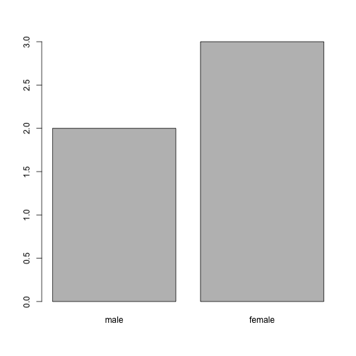
转换为字符串
如果需要将因子转换为字符向量，请使用
as.character(x)。
R
as.character(sex)
输出
[1] "male" "female" "female" "male" "female"重命名因子
如果我们想重命名这些因子，只需修改其层级即可：
R
levels(sex)
输出
[1] "male" "female"R
levels(sex) <- c("M", "F")
sex
输出
[1] M F F M F
Levels: M FR
plot(sex)

挑战：
- 将“F”和“M”分别重命名为“Female”和“Male”。
R
levels(sex)
输出
[1] "M" "F"R
levels(sex) <- c("Male", "Female")
- 动物名称周围缺少引号
- “feel”列缺失一项（可能是其中一种毛茸茸的动物）
- weight 列缺少一个逗号
挑战：
你能预测下面示例中每一列的类型吗？
使用 str(country_climate) 检查你的猜测：
它们符合你的预期吗？为什么？为什么不呢？
尝试在创建数据框时，在最后一个变量后添加
stringsAsFactors = TRUE。现在发生了什么？在使用read.csv()将基于文本的电子表格读取到 R 中时，也可以设置stringsAsFactors。
R
country_climate <- data.frame(
country = c("Canada", "Panama", "South Africa", "Australia"),
climate = c("cold", "hot", "temperate", "hot/temperate"),
temperature = c(10, 30, 18, "15"),
northern_hemisphere = c(TRUE, TRUE, FALSE, "FALSE"),
has_kangaroo = c(FALSE, FALSE, FALSE, 1)
)
R
country_climate <- data.frame(
country = c("Canada", "Panama", "South Africa", "Australia"),
climate = c("cold", "hot", "temperate", "hot/temperate"),
temperature = c(10, 30, 18, "15"),
northern_hemisphere = c(TRUE, TRUE, FALSE, "FALSE"),
has_kangaroo = c(FALSE, FALSE, FALSE, 1)
)
str(country_climate)
输出
'data.frame': 4 obs. of 5 variables:
$ country : chr "Canada" "Panama" "South Africa" "Australia"
$ climate : chr "cold" "hot" "temperate" "hot/temperate"
$ temperature : chr "10" "30" "18" "15"
$ northern_hemisphere: chr "TRUE" "TRUE" "FALSE" "FALSE"
$ has_kangaroo : num 0 0 0 1数据类型的自动转换有时是便利，有时则令人困扰。请留意这一机制的存在，掌握相关规则，并仔细核对在 R 中导入的数据在数据框中是否为正确类型。如果不对，可以利用这一点来检测数据录入过程中可能出现的错误（例如，某一列中出现了字母，而该列应当仅包含数字）。
在此 RStudio 教程 中了解更多信息
矩阵
在继续学习之前，既然我们已经了解了数据框，让我们回顾一下包的安装，并学习一种新的数据类型，即
matrix。与 data.frame
一样，矩阵具有行和列两个维度。但主要区别在于，matrix
中的所有单元格必须属于同一种类型：numeric、character、logical、…
从这个意义上说，矩阵与 vector 更为接近，而非
data.frame。
矩阵的默认构造函数是
matrix。它接收一个用于填充矩阵的值向量，以及行数和/或列数1。如下图所示，这些值按列依次填充。
R
m <- matrix(1:9, ncol = 3, nrow = 3)
m
输出
[,1] [,2] [,3]
[1,] 1 4 7
[2,] 2 5 8
[3,] 3 6 9挑战：
使用函数 installed.packages() 创建一个
character
矩阵，其中包含当前计算机上所有已安装包的信息。对其进行探索。
R
## create the matrix
ip <- installed.packages()
head(ip)
## try also View(ip)
## number of package
nrow(ip)
## names of all installed packages
rownames(ip)
## type of information we have about each package
colnames(ip)
创建大型随机数据矩阵作为测试数据通常很有用。下面的练习要求你创建这样一个由均值
0、标准差 1 的正态分布抽取的随机数据矩阵，这可以通过
rnorm() 函数实现。
挑战：
构建一个 1000 x 3 的正态分布数据矩阵（均值 0，标准差 1）
R
set.seed(123)
m <- matrix(rnorm(3000), ncol = 3)
dim(m)
输出
[1] 1000 3R
head(m)
输出
[,1] [,2] [,3]
[1,] -0.56047565 -0.99579872 -0.5116037
[2,] -0.23017749 -1.03995504 0.2369379
[3,] 1.55870831 -0.01798024 -0.5415892
[4,] 0.07050839 -0.13217513 1.2192276
[5,] 0.12928774 -2.54934277 0.1741359
[6,] 1.71506499 1.04057346 -0.6152683日期格式化
新手（以及资深！）R 用户最常遇到的问题之一，就是将日期和时间信息转换为在分析过程中适用且可用的变量。
关于电子表格程序中日期的注意事项
电子表格中的日期通常存储在单一列中。虽然这看起来是记录日期最自然的方式，但实际上并非最佳实践。电子表格应用程序会以看似正确的方式（对人类观察者而言）显示日期，但其实际处理和存储日期的方式可能会存在问题。将年份 (YEAR)、月份 (MONTH) 和日期 (DAY) 分别存储在独立列中，或者将年份 (YEAR) 和一年中的第几天 (DAY-OF-YEAR) 分别存储在独立列中，通常要安全得多。
诸如 LibreOffice、Microsoft Excel、OpenOffice、Gnumeric 等电子表格软件，在编码日期时采用了不同的（且通常互不兼容的）方式（即使是同一软件在不同版本和操作系统之间也是如此）。此外，Excel 还会将非日期项转换为日期 ( Zeeberg et al. (2004) )，例如 MAR1、DEC1、OCT4 等名称或标识符。因此，如果你整体上避免使用日期格式，就更容易发现这些问题。
Data Carpentry 课程中的 Dates as data 章节提供了关于电子表格中日期处理陷阱的更多见解。
我们将使用来自 lubridate 包的
ymd() 函数（该包属于
tidyverse；欲了解更多信息，请访问 tidyverse
网站）。lubridate 随
tidyverse 的安装一同安装。当你加载
tidyverse
(library(tidyverse))
时，核心包（大多数数据分析中使用的包）将被加载。然而，lubridate
不属于 tidyverse 核心包，因此你必须通过 library(lubridate)
显式地加载它。
首先加载所需的包：
R
library("lubridate")
ymd() 接收一个表示年、月、日的向量，并将其转换为
Date 向量。Date 是 R
认可的日期数据类型，可以像日期一样进行操作。该函数所需的参数较为灵活，但作为最佳实践，应使用格式为
“YYYY-MM-DD” 的字符向量。
让我们创建一个日期对象并检查其结构：
R
my_date <- ymd("2015-01-01")
str(my_date)
输出
Date[1:1], format: "2015-01-01"现在让我们分别拼接年、月、日——结果相同：
R
# sep indicates the character to use to separate each component
my_date <- ymd(paste("2015", "1", "1", sep = "-"))
str(my_date)
输出
Date[1:1], format: "2015-01-01"现在让我们熟悉一个典型的日期处理流程。下面的小数据将日期分别存储在不同的
year、month 和 day 列中。
R
x <- data.frame(year = c(1996, 1992, 1987, 1986, 2000, 1990, 2002, 1994, 1997, 1985),
month = c(2, 3, 3, 10, 1, 8, 3, 4, 5, 5),
day = c(24, 8, 1, 5, 8, 17, 13, 10, 11, 24),
value = c(4, 5, 1, 9, 3, 8, 10, 2, 6, 7))
x
输出
year month day value
1 1996 2 24 4
2 1992 3 8 5
3 1987 3 1 1
4 1986 10 5 9
5 2000 1 8 3
6 1990 8 17 8
7 2002 3 13 10
8 1994 4 10 2
9 1997 5 11 6
10 1985 5 24 7现在我们将此函数应用于 x 数据集。首先，我们使用
paste() 从 x 的
year、month 和 day
列创建一个字符向量：
R
paste(x$year, x$month, x$day, sep = "-")
输出
[1] "1996-2-24" "1992-3-8" "1987-3-1" "1986-10-5" "2000-1-8" "1990-8-17"
[7] "2002-3-13" "1994-4-10" "1997-5-11" "1985-5-24"此字符向量可用作 ymd() 的参数：
R
ymd(paste(x$year, x$month, x$day, sep = "-"))
输出
[1] "1996-02-24" "1992-03-08" "1987-03-01" "1986-10-05" "2000-01-08"
[6] "1990-08-17" "2002-03-13" "1994-04-10" "1997-05-11" "1985-05-24"得到的 Date 向量可以作为新列 date 添加到
x 中：
R
x$date <- ymd(paste(x$year, x$month, x$day, sep = "-"))
str(x) # notice the new column, with 'date' as the class
输出
'data.frame': 10 obs. of 5 variables:
$ year : num 1996 1992 1987 1986 2000 ...
$ month: num 2 3 3 10 1 8 3 4 5 5
$ day : num 24 8 1 5 8 17 13 10 11 24
$ value: num 4 5 1 9 3 8 10 2 6 7
$ date : Date, format: "1996-02-24" "1992-03-08" ...让我们确认一切是否运行正常。检查新列的一种方法是使用
summary()：
R
summary(x$date)
输出
Min. 1st Qu. Median Mean 3rd Qu. Max.
"1985-05-24" "1988-01-11" "1993-03-24" "1993-03-18" "1997-01-20" "2002-03-13" 请注意，ymd()
要求按年、月、日的顺序排列。例如，如果您拥有日、月、年，则需要使用
dmy()。
R
dmy(paste(x$day, x$month, x$year, sep = "-"))
输出
[1] "1996-02-24" "1992-03-08" "1987-03-01" "1986-10-05" "2000-01-08"
[6] "1990-08-17" "2002-03-13" "1994-04-10" "1997-05-11" "1985-05-24"lubdridate 提供了许多函数来处理各种日期变体。
R 对象概览
到目前为止，我们已经看到了几种 R 对象，它们在维度数量以及能否存储单一或多种数据类型方面各不相同：
-
vector：一维（具有长度），单一数据类型。 -
matrix：两维，单一数据类型。 -
data.frame：两维，每列一种类型。
列表
一种我们尚未见过、但值得了解，且由刚才看到的摘要推导出的数据类型，即列表：
-
list：单维，每个项可以是不同的数据类型。
下面，让我们创建一个包含数值向量、字符向量、矩阵、数据框以及另一个列表的列表：
R
l <- list(1:10, ## numeric
letters, ## character
installed.packages(), ## a matrix
cars, ## a data.frame
list(1, 2, 3)) ## a list
length(l)
输出
[1] 5R
str(l)
输出
List of 5
$ : int [1:10] 1 2 3 4 5 6 7 8 9 10
$ : chr [1:26] "a" "b" "c" "d" ...
$ : chr [1:261, 1:17] "litedown" "metabolomicsWorkbenchR" "mgcv" "MultiAssayExperiment" ...
..- attr(*, "dimnames")=List of 2
.. ..$ : chr [1:261] "litedown" "metabolomicsWorkbenchR" "mgcv" "MultiAssayExperiment" ...
.. ..$ : chr [1:17] "Package" "LibPath" "Version" "Priority" ...
$ :'data.frame': 50 obs. of 2 variables:
..$ speed: num [1:50] 4 4 7 7 8 9 10 10 10 11 ...
..$ dist : num [1:50] 2 10 4 22 16 10 18 26 34 17 ...
$ :List of 3
..$ : num 1
..$ : num 2
..$ : num 3列表子集操作使用 [] 来提取一个新的子列表，或使用
[[]]
来提取该列表中的单个元素（如果列表已命名，则使用索引或名称）。
R
l[[1]] ## first element
输出
[1] 1 2 3 4 5 6 7 8 9 10R
l[1:2] ## a list of length 2
输出
[[1]]
[1] 1 2 3 4 5 6 7 8 9 10
[[2]]
[1] "a" "b" "c" "d" "e" "f" "g" "h" "i" "j" "k" "l" "m" "n" "o" "p" "q" "r" "s"
[20] "t" "u" "v" "w" "x" "y" "z"R
l[1] ## a list of length 1
输出
[[1]]
[1] 1 2 3 4 5 6 7 8 9 10导出与保存表格数据
我们已经了解了如何使用 read.table
系列函数将基于文本的电子表格读取到 R 中。若要将 data.frame
导出为基于文本的电子表格，可以使用 write.table
系列函数（write.csv、write.delim、…）。这些函数均需接收待导出的变量和导出目标文件。例如，若要将
rna 数据导出到 data_output 目录下的
my_rna.csv 文件中，我们可以执行：
R
write.csv(rna, file = "data_output/my_rna.csv")
现在可以将这个新的 CSV 文件与不熟悉 R 的其他合作者共享。请注意，尽管
data.frame 中的某些字段包含逗号（例如“product”列），但 R
默认会用引号将每个字段括起来，因此即使也使用逗号作为列分隔符，我们依然能够将其正确读取回
R 中。
- R 中的表格数据
行数或列数其中之一即可，因为另一者可以从数值的长度推导出来。试一下，如果数值与行数/列数不匹配会发生什么。↩︎
Content from 使用 dplyr 处理和分析数据
最后更新于 2026-11-07 | 编辑此页
预计用时： 150 分钟
概述
问题
- 使用 tidyverse 元包进行 R 数据分析
学习目标
- 描述
dplyr和tidyr包的用途。 - 描述其中几个对于数据处理极其有用的函数。
- 介绍宽格式和长格式的概念，并学习如何将数据框从一种格式重塑为另一种格式。
- 演示如何合并表格。
本集基于 Data Carpentries 的 Data Analysis and Visualisation in R for Ecologists 课程。
使用 dplyr 和
tidyr 进行数据处理
方括号子集选择虽然方便，但可能会显得繁琐且难以阅读，尤其是对于复杂的操作。
在处理数据时，某些包可以大大简化我们的工作。R
中的包基本上是一组额外的函数，让你能够完成更多操作。我们目前使用的函数（如
str() 或 data.frame()）是 R
内置的；加载包可以让你使用其他特定函数。在首次使用某个包之前，你需要先在机器上安装它，然后在随后的每次
R 会话中，在需要时将其导入。
dplyr包为数据处理任务提供了强大的工具。它专为直接操作数据框而设计，许多处理任务均经过优化。正如我们稍后将看到的，有时我们需要重塑数据框，以便进行某些特定的分析或进行可视化。
tidyr包解决了这一常见的数据重塑问题，并提供了以整洁的方式操作数据的工具。
在工作坊结束后，如需进一步了解 dplyr 和
tidyr，您可以查阅这份 关于
dplyr 数据转换的实用速查表 以及这份 关于
tidyr 的速查表。
-
tidyverse包是一个“伞形包”，用于安装多个适用于数据分析且能良好协同工作的实用包，例如tidyr、dplyr、ggplot2、tibble等。这些包能帮助我们处理数据并与之交互。它们让我们能够对数据进行许多操作，例如子集提取、转换、可视化等。
如果您已完成设置，应该已经安装了 tidyverse 包。请尝试从库中加载它，以确认是否已安装：
R
## load the tidyverse packages, incl. dplyr
library("tidyverse")
如果您收到了 there is no package called ‘tidyverse’
错误消息，则表示您尚未为此版本的 R 安装该软件包。要安装
tidyverse 软件包，请输入：
R
BiocManager::install("tidyverse")
如果您需要安装 tidyverse
包，请记得在本次 R 会话中使用上述 library()
命令将其加载！
使用 tidyverse 加载数据
我们将不使用 read.csv()，而是使用 tidyverse 包
readr 中的 read_csv()
函数（请注意使用的是 _ 而非
.）来读取数据。
R
rna <- read_csv("data/rnaseq.csv")
## view the data
rna
输出
# A tibble: 32,428 × 19
gene sample expression organism age sex infection strain time tissue
<chr> <chr> <dbl> <chr> <dbl> <chr> <chr> <chr> <dbl> <chr>
1 Asl GSM254… 1170 Mus mus… 8 Fema… Influenz… C57BL… 8 Cereb…
2 Apod GSM254… 36194 Mus mus… 8 Fema… Influenz… C57BL… 8 Cereb…
3 Cyp2d22 GSM254… 4060 Mus mus… 8 Fema… Influenz… C57BL… 8 Cereb…
4 Klk6 GSM254… 287 Mus mus… 8 Fema… Influenz… C57BL… 8 Cereb…
5 Fcrls GSM254… 85 Mus mus… 8 Fema… Influenz… C57BL… 8 Cereb…
6 Slc2a4 GSM254… 782 Mus mus… 8 Fema… Influenz… C57BL… 8 Cereb…
7 Exd2 GSM254… 1619 Mus mus… 8 Fema… Influenz… C57BL… 8 Cereb…
8 Gjc2 GSM254… 288 Mus mus… 8 Fema… Influenz… C57BL… 8 Cereb…
9 Plp1 GSM254… 43217 Mus mus… 8 Fema… Influenz… C57BL… 8 Cereb…
10 Gnb4 GSM254… 1071 Mus mus… 8 Fema… Influenz… C57BL… 8 Cereb…
# ℹ 32,418 more rows
# ℹ 9 more variables: mouse <dbl>, ENTREZID <dbl>, product <chr>,
# ensembl_gene_id <chr>, external_synonym <chr>, chromosome_name <chr>,
# gene_biotype <chr>, phenotype_description <chr>,
# hsapiens_homolog_associated_gene_name <chr>请注意，数据的类型现在被称为“tibble”。
Tibbles 对我们之前介绍的数据框对象的一些行为进行了微调。其数据结构与数据框非常相似。就我们的用途而言，唯一的区别在于：
它会在每列名称下显示其数据类型。请注意，<
dbl> 是定义用于存储带有小数点的数值的数据类型。它仅打印前几行数据，且仅打印能容纳在单个屏幕上的列数。
现在我们将学习一些最常用的 dplyr
函数：
-
select(): 子集列 -
filter(): 根据条件筛选行 -
mutate()：利用其他列的信息创建新列 -
group_by()和summarise()：对分组数据生成汇总统计量 -
arrange(): 对结果进行排序 -
count()：统计离散值
选择列与过滤行
若要选择数据框的列，请使用
select()。该函数的第一个参数是数据框
(rna)，后续参数则是要保留的列。
R
select(rna, gene, sample, tissue, expression)
输出
# A tibble: 32,428 × 4
gene sample tissue expression
<chr> <chr> <chr> <dbl>
1 Asl GSM2545336 Cerebellum 1170
2 Apod GSM2545336 Cerebellum 36194
3 Cyp2d22 GSM2545336 Cerebellum 4060
4 Klk6 GSM2545336 Cerebellum 287
5 Fcrls GSM2545336 Cerebellum 85
6 Slc2a4 GSM2545336 Cerebellum 782
7 Exd2 GSM2545336 Cerebellum 1619
8 Gjc2 GSM2545336 Cerebellum 288
9 Plp1 GSM2545336 Cerebellum 43217
10 Gnb4 GSM2545336 Cerebellum 1071
# ℹ 32,418 more rows若要选择除某些列之外的所有列，请在变量前加上“-”以将其排除。
R
select(rna, -tissue, -organism)
输出
# A tibble: 32,428 × 17
gene sample expression age sex infection strain time mouse ENTREZID
<chr> <chr> <dbl> <dbl> <chr> <chr> <chr> <dbl> <dbl> <dbl>
1 Asl GSM2545… 1170 8 Fema… Influenz… C57BL… 8 14 109900
2 Apod GSM2545… 36194 8 Fema… Influenz… C57BL… 8 14 11815
3 Cyp2d22 GSM2545… 4060 8 Fema… Influenz… C57BL… 8 14 56448
4 Klk6 GSM2545… 287 8 Fema… Influenz… C57BL… 8 14 19144
5 Fcrls GSM2545… 85 8 Fema… Influenz… C57BL… 8 14 80891
6 Slc2a4 GSM2545… 782 8 Fema… Influenz… C57BL… 8 14 20528
7 Exd2 GSM2545… 1619 8 Fema… Influenz… C57BL… 8 14 97827
8 Gjc2 GSM2545… 288 8 Fema… Influenz… C57BL… 8 14 118454
9 Plp1 GSM2545… 43217 8 Fema… Influenz… C57BL… 8 14 18823
10 Gnb4 GSM2545… 1071 8 Fema… Influenz… C57BL… 8 14 14696
# ℹ 32,418 more rows
# ℹ 7 more variables: product <chr>, ensembl_gene_id <chr>,
# external_synonym <chr>, chromosome_name <chr>, gene_biotype <chr>,
# phenotype_description <chr>, hsapiens_homolog_associated_gene_name <chr>这将选择 rna 中除 tissue 和
organism 之外的所有变量。
若要根据特定条件选择行，请使用 filter()：
R
filter(rna, sex == "Male")
输出
# A tibble: 14,740 × 19
gene sample expression organism age sex infection strain time tissue
<chr> <chr> <dbl> <chr> <dbl> <chr> <chr> <chr> <dbl> <chr>
1 Asl GSM254… 626 Mus mus… 8 Male Influenz… C57BL… 4 Cereb…
2 Apod GSM254… 13021 Mus mus… 8 Male Influenz… C57BL… 4 Cereb…
3 Cyp2d22 GSM254… 2171 Mus mus… 8 Male Influenz… C57BL… 4 Cereb…
4 Klk6 GSM254… 448 Mus mus… 8 Male Influenz… C57BL… 4 Cereb…
5 Fcrls GSM254… 180 Mus mus… 8 Male Influenz… C57BL… 4 Cereb…
6 Slc2a4 GSM254… 313 Mus mus… 8 Male Influenz… C57BL… 4 Cereb…
7 Exd2 GSM254… 2366 Mus mus… 8 Male Influenz… C57BL… 4 Cereb…
8 Gjc2 GSM254… 310 Mus mus… 8 Male Influenz… C57BL… 4 Cereb…
9 Plp1 GSM254… 53126 Mus mus… 8 Male Influenz… C57BL… 4 Cereb…
10 Gnb4 GSM254… 1355 Mus mus… 8 Male Influenz… C57BL… 4 Cereb…
# ℹ 14,730 more rows
# ℹ 9 more variables: mouse <dbl>, ENTREZID <dbl>, product <chr>,
# ensembl_gene_id <chr>, external_synonym <chr>, chromosome_name <chr>,
# gene_biotype <chr>, phenotype_description <chr>,
# hsapiens_homolog_associated_gene_name <chr>R
filter(rna, sex == "Male" & infection == "NonInfected")
输出
# A tibble: 4,422 × 19
gene sample expression organism age sex infection strain time tissue
<chr> <chr> <dbl> <chr> <dbl> <chr> <chr> <chr> <dbl> <chr>
1 Asl GSM254… 535 Mus mus… 8 Male NonInfec… C57BL… 0 Cereb…
2 Apod GSM254… 13668 Mus mus… 8 Male NonInfec… C57BL… 0 Cereb…
3 Cyp2d22 GSM254… 2008 Mus mus… 8 Male NonInfec… C57BL… 0 Cereb…
4 Klk6 GSM254… 1101 Mus mus… 8 Male NonInfec… C57BL… 0 Cereb…
5 Fcrls GSM254… 375 Mus mus… 8 Male NonInfec… C57BL… 0 Cereb…
6 Slc2a4 GSM254… 249 Mus mus… 8 Male NonInfec… C57BL… 0 Cereb…
7 Exd2 GSM254… 3126 Mus mus… 8 Male NonInfec… C57BL… 0 Cereb…
8 Gjc2 GSM254… 791 Mus mus… 8 Male NonInfec… C57BL… 0 Cereb…
9 Plp1 GSM254… 98658 Mus mus… 8 Male NonInfec… C57BL… 0 Cereb…
10 Gnb4 GSM254… 2437 Mus mus… 8 Male NonInfec… C57BL… 0 Cereb…
# ℹ 4,412 more rows
# ℹ 9 more variables: mouse <dbl>, ENTREZID <dbl>, product <chr>,
# ensembl_gene_id <chr>, external_synonym <chr>, chromosome_name <chr>,
# gene_biotype <chr>, phenotype_description <chr>,
# hsapiens_homolog_associated_gene_name <chr>现在，假设我们想了解该数据集中分析的小鼠基因的人类同源基因。这些信息可以在
rna tibble 的最后一列（名为
hsapiens_homolog_associated_gene_name）中找到。为了便于可视化，我们将创建一个仅包含
gene 和 hsapiens_homolog_associated_gene_name
这两个列的新表。
R
genes <- select(rna, gene, hsapiens_homolog_associated_gene_name)
genes
输出
# A tibble: 32,428 × 2
gene hsapiens_homolog_associated_gene_name
<chr> <chr>
1 Asl ASL
2 Apod APOD
3 Cyp2d22 CYP2D6
4 Klk6 KLK6
5 Fcrls FCRL2
6 Slc2a4 SLC2A4
7 Exd2 EXD2
8 Gjc2 GJC2
9 Plp1 PLP1
10 Gnb4 GNB4
# ℹ 32,418 more rows某些小鼠基因没有人类同源基因。可以使用 filter() 和
is.na() 函数来检索这些基因，后者用于判定某项是否为
NA。
R
filter(genes, is.na(hsapiens_homolog_associated_gene_name))
输出
# A tibble: 4,290 × 2
gene hsapiens_homolog_associated_gene_name
<chr> <chr>
1 Prodh <NA>
2 Tssk5 <NA>
3 Vmn2r1 <NA>
4 Gm10654 <NA>
5 Hexa <NA>
6 Sult1a1 <NA>
7 Gm6277 <NA>
8 Tmem198b <NA>
9 Adam1a <NA>
10 Ebp <NA>
# ℹ 4,280 more rows如果我们只想保留具有人类同源基因的小鼠基因，可以插入一个“!”符号来取反结果，这样我们就在查询所有
hsapiens_homolog_associated_gene_name 不是 NA
的行。
R
filter(genes, !is.na(hsapiens_homolog_associated_gene_name))
输出
# A tibble: 28,138 × 2
gene hsapiens_homolog_associated_gene_name
<chr> <chr>
1 Asl ASL
2 Apod APOD
3 Cyp2d22 CYP2D6
4 Klk6 KLK6
5 Fcrls FCRL2
6 Slc2a4 SLC2A4
7 Exd2 EXD2
8 Gjc2 GJC2
9 Plp1 PLP1
10 Gnb4 GNB4
# ℹ 28,128 more rows管道
如果想同时进行选择和过滤怎么办？有三种方法：使用中间步骤、嵌套函数或管道。
使用中间步骤时，你会创建一个临时数据框，并将其作为下一个函数的输入，如下所示：
R
rna2 <- filter(rna, sex == "Male")
rna3 <- select(rna2, gene, sample, tissue, expression)
rna3
输出
# A tibble: 14,740 × 4
gene sample tissue expression
<chr> <chr> <chr> <dbl>
1 Asl GSM2545340 Cerebellum 626
2 Apod GSM2545340 Cerebellum 13021
3 Cyp2d22 GSM2545340 Cerebellum 2171
4 Klk6 GSM2545340 Cerebellum 448
5 Fcrls GSM2545340 Cerebellum 180
6 Slc2a4 GSM2545340 Cerebellum 313
7 Exd2 GSM2545340 Cerebellum 2366
8 Gjc2 GSM2545340 Cerebellum 310
9 Plp1 GSM2545340 Cerebellum 53126
10 Gnb4 GSM2545340 Cerebellum 1355
# ℹ 14,730 more rows这种写法易于阅读，但可能会因为需要为大量中间对象分别命名而使工作区变得杂乱。在涉及多个步骤时，这可能很难跟踪。
你还可以嵌套函数（即一个函数在另一个函数中），如下所示：
R
rna3 <- select(filter(rna, sex == "Male"), gene, sample, tissue, expression)
rna3
输出
# A tibble: 14,740 × 4
gene sample tissue expression
<chr> <chr> <chr> <dbl>
1 Asl GSM2545340 Cerebellum 626
2 Apod GSM2545340 Cerebellum 13021
3 Cyp2d22 GSM2545340 Cerebellum 2171
4 Klk6 GSM2545340 Cerebellum 448
5 Fcrls GSM2545340 Cerebellum 180
6 Slc2a4 GSM2545340 Cerebellum 313
7 Exd2 GSM2545340 Cerebellum 2366
8 Gjc2 GSM2545340 Cerebellum 310
9 Plp1 GSM2545340 Cerebellum 53126
10 Gnb4 GSM2545340 Cerebellum 1355
# ℹ 14,730 more rows这很方便，但如果嵌套的函数过多，可能会难以阅读，因为 R 是从内向外求值表达式的（在本例中，先过滤，再选择）。
最后一种选项——管道，是 R 最近新增的功能。管道允许你将一个函数的输出直接传递给下一个函数，这在需要对同一数据集执行多项操作时非常有用。
R 中的管道看起来像 %>%（通过
magrittr 包提供）或
|>（通过 base R 提供）。如果您使用 RStudio，在 PC
上可以输入 Ctrl + Shift + M
来表示管道，在 Mac 上则可以输入 Cmd + Shift +
M。
在上述代码中，我们使用管道将 rna 数据集首先通过
filter() 过滤出 sex 为 Male 的行，然后通过
select() 仅保留
gene、sample、tissue 和
expression 列。
管道 |>
将左侧的对象直接作为右侧函数的第一个参数传递，我们不再需要显式地将数据框作为
filter() 和 select() 函数的参数包含在内。
R
rna |>
filter(sex == "Male") |>
select(gene, sample, tissue, expression)
输出
# A tibble: 14,740 × 4
gene sample tissue expression
<chr> <chr> <chr> <dbl>
1 Asl GSM2545340 Cerebellum 626
2 Apod GSM2545340 Cerebellum 13021
3 Cyp2d22 GSM2545340 Cerebellum 2171
4 Klk6 GSM2545340 Cerebellum 448
5 Fcrls GSM2545340 Cerebellum 180
6 Slc2a4 GSM2545340 Cerebellum 313
7 Exd2 GSM2545340 Cerebellum 2366
8 Gjc2 GSM2545340 Cerebellum 310
9 Plp1 GSM2545340 Cerebellum 53126
10 Gnb4 GSM2545340 Cerebellum 1355
# ℹ 14,730 more rows有些人可能会觉得将 pipe
读作“然后”这个词很有帮助。例如，在上述示例中，我们取了数据框
rna，然后 对具有 sex == "Male"
的行进行了 filter，然后 对列
gene、sample、tissue 和
expression 进行了 select。
dplyr
函数本身较为简单，但通过使用管道将它们组合成线性工作流，我们可以对数据框进行更复杂的操作。
如果我们想用这个缩减版的数据创建一个新对象，可以为其指定一个新名称：
R
rna3 <- rna |>
filter(sex == "Male") |>
select(gene, sample, tissue, expression)
rna3
输出
# A tibble: 14,740 × 4
gene sample tissue expression
<chr> <chr> <chr> <dbl>
1 Asl GSM2545340 Cerebellum 626
2 Apod GSM2545340 Cerebellum 13021
3 Cyp2d22 GSM2545340 Cerebellum 2171
4 Klk6 GSM2545340 Cerebellum 448
5 Fcrls GSM2545340 Cerebellum 180
6 Slc2a4 GSM2545340 Cerebellum 313
7 Exd2 GSM2545340 Cerebellum 2366
8 Gjc2 GSM2545340 Cerebellum 310
9 Plp1 GSM2545340 Cerebellum 53126
10 Gnb4 GSM2545340 Cerebellum 1355
# ℹ 14,730 more rows挑战：
使用管道对 rna 数据进行子集提取，保留时间 0
时雌性小鼠且该基因表达值高于 50000 的观测值，并仅保留列
gene、sample、time、expression
和 age。
R
rna |>
filter(expression > 50000,
sex == "Female",
time == 0 ) |>
select(gene, sample, time, expression, age)
输出
# A tibble: 9 × 5
gene sample time expression age
<chr> <chr> <dbl> <dbl> <dbl>
1 Plp1 GSM2545337 0 101241 8
2 Atp1b1 GSM2545337 0 53260 8
3 Plp1 GSM2545338 0 96534 8
4 Atp1b1 GSM2545338 0 50614 8
5 Plp1 GSM2545348 0 102790 8
6 Atp1b1 GSM2545348 0 59544 8
7 Plp1 GSM2545353 0 71237 8
8 Glul GSM2545353 0 52451 8
9 Atp1b1 GSM2545353 0 61451 8创建和修改列（mutate）
你经常需要根据现有列的值创建新列，例如进行单位转换，或计算两个列中值的比值。为此，我们将使用
mutate()。
若要创建一个以小时为单位的时间新列：
R
rna |>
mutate(time_hours = time * 24) |>
select(time, time_hours)
输出
# A tibble: 32,428 × 2
time time_hours
<dbl> <dbl>
1 8 192
2 8 192
3 8 192
4 8 192
5 8 192
6 8 192
7 8 192
8 8 192
9 8 192
10 8 192
# ℹ 32,418 more rows您还可以在同一次 mutate()
调用中，基于第一个新列创建第二个新列：
R
rna |>
mutate(time_hours = time * 24,
time_mn = time_hours * 60) |>
select(time, time_hours, time_mn)
输出
# A tibble: 32,428 × 3
time time_hours time_mn
<dbl> <dbl> <dbl>
1 8 192 11520
2 8 192 11520
3 8 192 11520
4 8 192 11520
5 8 192 11520
6 8 192 11520
7 8 192 11520
8 8 192 11520
9 8 192 11520
10 8 192 11520
# ℹ 32,418 more rows挑战
从 rna 数据中创建一个符合以下条件的新数据框：仅包含
gene、chromosome_name、phenotype_description、sample
和 expression
列。表达量值应进行自然对数变换。该数据框必须仅包含位于性染色体上、与
phenotype_description 相关且自然对数表达量大于 5 的基因。
提示：思考一下应该如何排列命令才能生成这个数据框！
R
rna |>
mutate(expression = log(expression)) |>
select(gene, chromosome_name, phenotype_description, sample, expression) |>
filter(chromosome_name == "X" | chromosome_name == "Y") |>
filter(!is.na(phenotype_description)) |>
filter(expression > 5)
输出
# A tibble: 649 × 5
gene chromosome_name phenotype_description sample expression
<chr> <chr> <chr> <chr> <dbl>
1 Plp1 X abnormal CNS glial cell morphology GSM25… 10.7
2 Slc7a3 X decreased body length GSM25… 5.46
3 Plxnb3 X abnormal coat appearance GSM25… 6.58
4 Rbm3 X abnormal liver morphology GSM25… 9.32
5 Cfp X abnormal cardiovascular system phys… GSM25… 6.18
6 Ebp X abnormal embryonic erythrocyte morp… GSM25… 6.68
7 Cd99l2 X abnormal cellular extravasation GSM25… 8.04
8 Piga X abnormal brain development GSM25… 6.06
9 Pim2 X decreased T cell proliferation GSM25… 7.11
10 Itm2a X no abnormal phenotype detected GSM25… 7.48
# ℹ 639 more rows分-应用-合并数据分析
许多数据分析任务可以采用 split-apply-combine
范式：将数据分组，对每组进行某种分析，然后将结果合并。dplyr
通过使用 group_by() 函数，使这一过程变得非常简单。
R
rna |>
group_by(gene)
输出
# A tibble: 32,428 × 19
# Groups: gene [1,474]
gene sample expression organism age sex infection strain time tissue
<chr> <chr> <dbl> <chr> <dbl> <chr> <chr> <chr> <dbl> <chr>
1 Asl GSM254… 1170 Mus mus… 8 Fema… Influenz… C57BL… 8 Cereb…
2 Apod GSM254… 36194 Mus mus… 8 Fema… Influenz… C57BL… 8 Cereb…
3 Cyp2d22 GSM254… 4060 Mus mus… 8 Fema… Influenz… C57BL… 8 Cereb…
4 Klk6 GSM254… 287 Mus mus… 8 Fema… Influenz… C57BL… 8 Cereb…
5 Fcrls GSM254… 85 Mus mus… 8 Fema… Influenz… C57BL… 8 Cereb…
6 Slc2a4 GSM254… 782 Mus mus… 8 Fema… Influenz… C57BL… 8 Cereb…
7 Exd2 GSM254… 1619 Mus mus… 8 Fema… Influenz… C57BL… 8 Cereb…
8 Gjc2 GSM254… 288 Mus mus… 8 Fema… Influenz… C57BL… 8 Cereb…
9 Plp1 GSM254… 43217 Mus mus… 8 Fema… Influenz… C57BL… 8 Cereb…
10 Gnb4 GSM254… 1071 Mus mus… 8 Fema… Influenz… C57BL… 8 Cereb…
# ℹ 32,418 more rows
# ℹ 9 more variables: mouse <dbl>, ENTREZID <dbl>, product <chr>,
# ensembl_gene_id <chr>, external_synonym <chr>, chromosome_name <chr>,
# gene_biotype <chr>, phenotype_description <chr>,
# hsapiens_homolog_associated_gene_name <chr>group_by()
函数不进行任何数据处理，而是将数据分组：在上述示例中，我们最初的包含
32428 观测值的 tibble 根据 gene 变量被分为
1474 个组。
我们同样可以决定按样本对该 tibble 进行分组：
R
rna |>
group_by(sample)
输出
# A tibble: 32,428 × 19
# Groups: sample [22]
gene sample expression organism age sex infection strain time tissue
<chr> <chr> <dbl> <chr> <dbl> <chr> <chr> <chr> <dbl> <chr>
1 Asl GSM254… 1170 Mus mus… 8 Fema… Influenz… C57BL… 8 Cereb…
2 Apod GSM254… 36194 Mus mus… 8 Fema… Influenz… C57BL… 8 Cereb…
3 Cyp2d22 GSM254… 4060 Mus mus… 8 Fema… Influenz… C57BL… 8 Cereb…
4 Klk6 GSM254… 287 Mus mus… 8 Fema… Influenz… C57BL… 8 Cereb…
5 Fcrls GSM254… 85 Mus mus… 8 Fema… Influenz… C57BL… 8 Cereb…
6 Slc2a4 GSM254… 782 Mus mus… 8 Fema… Influenz… C57BL… 8 Cereb…
7 Exd2 GSM254… 1619 Mus mus… 8 Fema… Influenz… C57BL… 8 Cereb…
8 Gjc2 GSM254… 288 Mus mus… 8 Fema… Influenz… C57BL… 8 Cereb…
9 Plp1 GSM254… 43217 Mus mus… 8 Fema… Influenz… C57BL… 8 Cereb…
10 Gnb4 GSM254… 1071 Mus mus… 8 Fema… Influenz… C57BL… 8 Cereb…
# ℹ 32,418 more rows
# ℹ 9 more variables: mouse <dbl>, ENTREZID <dbl>, product <chr>,
# ensembl_gene_id <chr>, external_synonym <chr>, chromosome_name <chr>,
# gene_biotype <chr>, phenotype_description <chr>,
# hsapiens_homolog_associated_gene_name <chr>这里，我们最初的 tibble 包含 32428 个观测值，并根据
sample 变量分为 22 个组。
数据分组后，后续操作将独立地应用于每个组。
summarise() 函数
group_by() 通常与 summarise()
配合使用，将每个组合并为该组的单行汇总。
group_by()
接收作为参数的列名，这些列名包含您想要计算汇总统计量的分类变量。因此，若要计算基因的
expression 平均值：
R
rna |>
group_by(gene) |>
summarise(mean_expression = mean(expression))
输出
# A tibble: 1,474 × 2
gene mean_expression
<chr> <dbl>
1 AI504432 1053.
2 AW046200 131.
3 AW551984 295.
4 Aamp 4751.
5 Abca12 4.55
6 Abcc8 2498.
7 Abhd14a 525.
8 Abi2 4909.
9 Abi3bp 1002.
10 Abl2 2124.
# ℹ 1,464 more rows我们还可能想计算每个样本中所有基因的平均表达水平：
R
rna |>
group_by(sample) |>
summarise(mean_expression = mean(expression))
输出
# A tibble: 22 × 2
sample mean_expression
<chr> <dbl>
1 GSM2545336 2062.
2 GSM2545337 1766.
3 GSM2545338 1668.
4 GSM2545339 1696.
5 GSM2545340 1682.
6 GSM2545341 1638.
7 GSM2545342 1594.
8 GSM2545343 2107.
9 GSM2545344 1712.
10 GSM2545345 1700.
# ℹ 12 more rows但我们也可以按多个列进行分组：
R
rna |>
group_by(gene, infection, time) |>
summarise(mean_expression = mean(expression))
输出
`summarise()` has regrouped the output.
ℹ Summaries were computed grouped by gene, infection, and time.
ℹ Output is grouped by gene and infection.
ℹ Use `summarise(.groups = "drop_last")` to silence this message.
ℹ Use `summarise(.by = c(gene, infection, time))` for per-operation grouping
(`?dplyr::dplyr_by`) instead.输出
# A tibble: 4,422 × 4
# Groups: gene, infection [2,948]
gene infection time mean_expression
<chr> <chr> <dbl> <dbl>
1 AI504432 InfluenzaA 4 1104.
2 AI504432 InfluenzaA 8 1014
3 AI504432 NonInfected 0 1034.
4 AW046200 InfluenzaA 4 152.
5 AW046200 InfluenzaA 8 81
6 AW046200 NonInfected 0 155.
7 AW551984 InfluenzaA 4 302.
8 AW551984 InfluenzaA 8 342.
9 AW551984 NonInfected 0 238
10 Aamp InfluenzaA 4 4870
# ℹ 4,412 more rows数据分组后，您还可以同时汇总多个变量（且不一定必须在同一个变量上）。例如，我们可以添加一列，分别显示按基因和条件划分的
expression 中位数：
R
rna |>
group_by(gene, infection, time) |>
summarise(mean_expression = mean(expression),
median_expression = median(expression))
输出
`summarise()` has regrouped the output.
ℹ Summaries were computed grouped by gene, infection, and time.
ℹ Output is grouped by gene and infection.
ℹ Use `summarise(.groups = "drop_last")` to silence this message.
ℹ Use `summarise(.by = c(gene, infection, time))` for per-operation grouping
(`?dplyr::dplyr_by`) instead.输出
# A tibble: 4,422 × 5
# Groups: gene, infection [2,948]
gene infection time mean_expression median_expression
<chr> <chr> <dbl> <dbl> <dbl>
1 AI504432 InfluenzaA 4 1104. 1094.
2 AI504432 InfluenzaA 8 1014 985
3 AI504432 NonInfected 0 1034. 1016
4 AW046200 InfluenzaA 4 152. 144.
5 AW046200 InfluenzaA 8 81 82
6 AW046200 NonInfected 0 155. 163
7 AW551984 InfluenzaA 4 302. 245
8 AW551984 InfluenzaA 8 342. 287
9 AW551984 NonInfected 0 238 265
10 Aamp InfluenzaA 4 4870 4708
# ℹ 4,412 more rows挑战
计算基因“Dok3”在不同时间点的平均表达水平。
R
rna |>
filter(gene == "Dok3") |>
group_by(time) |>
summarise(mean = mean(expression))
输出
# A tibble: 3 × 2
time mean
<dbl> <dbl>
1 0 169
2 4 156.
3 8 61 计数
在处理数据时，我们通常想知道每个因子或因子组合所对应的观测值数量。针对这一任务，dplyr
提供了
count()。例如，如果我们想分别统计感染组和未感染组的数据行数，可以这样写：
R
rna |>
count(infection)
输出
# A tibble: 2 × 2
infection n
<chr> <int>
1 InfluenzaA 22110
2 NonInfected 10318count()
函数是对我们之前见过的操作的简写：按变量进行分组，并通过统计该组中观测值的数量来进行汇总。换句话说，rna |> count(infection)
等同于：
R
rna |>
group_by(infection) |>
summarise(n = n())
输出
# A tibble: 2 × 2
infection n
<chr> <int>
1 InfluenzaA 22110
2 NonInfected 10318前面的示例展示了如何使用 count()
来统计单一因子（即
infection）的行数/观测值。如果我们想统计因子的组合，例如
infection 和
time，我们将指定第一个和第二个因子作为 count()
的参数：
R
rna |>
count(infection, time)
输出
# A tibble: 3 × 3
infection time n
<chr> <dbl> <int>
1 InfluenzaA 4 11792
2 InfluenzaA 8 10318
3 NonInfected 0 10318这等同于以下内容：
R
rna |>
group_by(infection, time) |>
summarise(n = n())
输出
`summarise()` has regrouped the output.
ℹ Summaries were computed grouped by infection and time.
ℹ Output is grouped by infection.
ℹ Use `summarise(.groups = "drop_last")` to silence this message.
ℹ Use `summarise(.by = c(infection, time))` for per-operation grouping
(`?dplyr::dplyr_by`) instead.输出
# A tibble: 3 × 3
# Groups: infection [2]
infection time n
<chr> <dbl> <int>
1 InfluenzaA 4 11792
2 InfluenzaA 8 10318
3 NonInfected 0 10318有时对结果进行排序会有所帮助，以便于比较。我们可以使用
arrange()
来对表格进行排序。例如，我们可能想按时间对上述表格进行排序：
R
rna |>
count(infection, time) |>
arrange(time)
输出
# A tibble: 3 × 3
infection time n
<chr> <dbl> <int>
1 NonInfected 0 10318
2 InfluenzaA 4 11792
3 InfluenzaA 8 10318或按计数：
R
rna |>
count(infection, time) |>
arrange(n)
输出
# A tibble: 3 × 3
infection time n
<chr> <dbl> <int>
1 InfluenzaA 8 10318
2 NonInfected 0 10318
3 InfluenzaA 4 11792若要按降序排序，我们需要添加 desc() 函数：
R
rna |>
count(infection, time) |>
arrange(desc(n))
输出
# A tibble: 3 × 3
infection time n
<chr> <dbl> <int>
1 InfluenzaA 4 11792
2 InfluenzaA 8 10318
3 NonInfected 0 10318挑战
- 每个样本中分析了多少个基因？
- 使用
group_by()和summarise()评估每个样本的测序深度（所有计数之和）。哪个样本的测序深度最高？ - 选择一个样本，并按生物类型统计基因数量。
- 识别与“abnormal DNA methylation”表型描述相关的基因，并计算它们在时间 0、时间 4 和时间 8 时的平均表达量（以 log 为单位）。
R
## 1.
rna |>
count(sample)
输出
# A tibble: 22 × 2
sample n
<chr> <int>
1 GSM2545336 1474
2 GSM2545337 1474
3 GSM2545338 1474
4 GSM2545339 1474
5 GSM2545340 1474
6 GSM2545341 1474
7 GSM2545342 1474
8 GSM2545343 1474
9 GSM2545344 1474
10 GSM2545345 1474
# ℹ 12 more rowsR
## 2.
rna |>
group_by(sample) |>
summarise(seq_depth = sum(expression)) |>
arrange(desc(seq_depth))
输出
# A tibble: 22 × 2
sample seq_depth
<chr> <dbl>
1 GSM2545350 3255566
2 GSM2545352 3216163
3 GSM2545343 3105652
4 GSM2545336 3039671
5 GSM2545380 3036098
6 GSM2545353 2953249
7 GSM2545348 2913678
8 GSM2545362 2913517
9 GSM2545351 2782464
10 GSM2545349 2758006
# ℹ 12 more rowsR
## 3.
rna |>
filter(sample == "GSM2545336") |>
count(gene_biotype) |>
arrange(desc(n))
输出
# A tibble: 13 × 2
gene_biotype n
<chr> <int>
1 protein_coding 1321
2 lncRNA 69
3 processed_pseudogene 59
4 miRNA 7
5 snoRNA 5
6 TEC 4
7 polymorphic_pseudogene 2
8 unprocessed_pseudogene 2
9 IG_C_gene 1
10 scaRNA 1
11 transcribed_processed_pseudogene 1
12 transcribed_unitary_pseudogene 1
13 transcribed_unprocessed_pseudogene 1R
## 4.
rna |>
filter(phenotype_description == "abnormal DNA methylation") |>
group_by(gene, time) |>
summarise(mean_expression = mean(log(expression))) |>
arrange()
输出
`summarise()` has regrouped the output.
ℹ Summaries were computed grouped by gene and time.
ℹ Output is grouped by gene.
ℹ Use `summarise(.groups = "drop_last")` to silence this message.
ℹ Use `summarise(.by = c(gene, time))` for per-operation grouping
(`?dplyr::dplyr_by`) instead.输出
# A tibble: 6 × 3
# Groups: gene [2]
gene time mean_expression
<chr> <dbl> <dbl>
1 Xist 0 6.95
2 Xist 4 6.34
3 Xist 8 7.13
4 Zdbf2 0 6.27
5 Zdbf2 4 6.27
6 Zdbf2 8 6.19数据重塑
在 rna tibble
中，行包含表达值（单位），这些值与另外两个变量 gene 和
sample 组合相关联。
所有其他列都对应于描述样本（生物体、年龄、性别……）或基因（gene_biotype、ENTREZ_ID、产物……）的变量。那些不随基因或样本而变化的变量在所有行中都具有相同的值。
R
rna |>
arrange(gene)
输出
# A tibble: 32,428 × 19
gene sample expression organism age sex infection strain time tissue
<chr> <chr> <dbl> <chr> <dbl> <chr> <chr> <chr> <dbl> <chr>
1 AI504432 GSM25… 1230 Mus mus… 8 Fema… Influenz… C57BL… 8 Cereb…
2 AI504432 GSM25… 1085 Mus mus… 8 Fema… NonInfec… C57BL… 0 Cereb…
3 AI504432 GSM25… 969 Mus mus… 8 Fema… NonInfec… C57BL… 0 Cereb…
4 AI504432 GSM25… 1284 Mus mus… 8 Fema… Influenz… C57BL… 4 Cereb…
5 AI504432 GSM25… 966 Mus mus… 8 Male Influenz… C57BL… 4 Cereb…
6 AI504432 GSM25… 918 Mus mus… 8 Male Influenz… C57BL… 8 Cereb…
7 AI504432 GSM25… 985 Mus mus… 8 Fema… Influenz… C57BL… 8 Cereb…
8 AI504432 GSM25… 972 Mus mus… 8 Male NonInfec… C57BL… 0 Cereb…
9 AI504432 GSM25… 1000 Mus mus… 8 Fema… Influenz… C57BL… 4 Cereb…
10 AI504432 GSM25… 816 Mus mus… 8 Male Influenz… C57BL… 4 Cereb…
# ℹ 32,418 more rows
# ℹ 9 more variables: mouse <dbl>, ENTREZID <dbl>, product <chr>,
# ensembl_gene_id <chr>, external_synonym <chr>, chromosome_name <chr>,
# gene_biotype <chr>, phenotype_description <chr>,
# hsapiens_homolog_associated_gene_name <chr>这种结构被称为
long-format，因为其中一列包含所有值，而其他列则列出该值的上下文。
在某些情况下，long-format
并不真正“易于阅读”，因此更倾向于使用另一种格式——wide-format，以便以更紧凑的方式表示数据。这种情况通常发生在基因表达值上，科学家习惯于将其视为矩阵，其中行代表基因，列代表样本。
因此，在这种格式下，探索样本内部以及样本之间的基因表达水平的关系将变得十分简单。
输出
# A tibble: 1,474 × 23
gene GSM2545336 GSM2545337 GSM2545338 GSM2545339 GSM2545340 GSM2545341
<chr> <dbl> <dbl> <dbl> <dbl> <dbl> <dbl>
1 Asl 1170 361 400 586 626 988
2 Apod 36194 10347 9173 10620 13021 29594
3 Cyp2d22 4060 1616 1603 1901 2171 3349
4 Klk6 287 629 641 578 448 195
5 Fcrls 85 233 244 237 180 38
6 Slc2a4 782 231 248 265 313 786
7 Exd2 1619 2288 2235 2513 2366 1359
8 Gjc2 288 595 568 551 310 146
9 Plp1 43217 101241 96534 58354 53126 27173
10 Gnb4 1071 1791 1867 1430 1355 798
# ℹ 1,464 more rows
# ℹ 16 more variables: GSM2545342 <dbl>, GSM2545343 <dbl>, GSM2545344 <dbl>,
# GSM2545345 <dbl>, GSM2545346 <dbl>, GSM2545347 <dbl>, GSM2545348 <dbl>,
# GSM2545349 <dbl>, GSM2545350 <dbl>, GSM2545351 <dbl>, GSM2545352 <dbl>,
# GSM2545353 <dbl>, GSM2545354 <dbl>, GSM2545362 <dbl>, GSM2545363 <dbl>,
# GSM2545380 <dbl>若要将基因表达值从 rna
转换为宽格式，我们需要创建一个新表，其中 sample
列的值将成为列变量的名称。
这里的关键点在于，我们依然遵循整洁数据结构，但根据感兴趣的观测项对数据进行了重塑：采用每个基因的表达水平，而非按基因和样本分别记录。
相反的转换则是将列名转换为新变量的值。
我们可以使用两个 tidyr 函数 pivot_longer()
和 pivot_wider() 来完成这两种转换（详情请参阅 tidyr
网站上的关于 pivot 的文章）。
将数据转换为宽格式
让我们选择 rna 的前 3 列，并使用
pivot_wider() 将数据转换为宽格式。
R
rna_exp <- rna |>
select(gene, sample, expression)
rna_exp
输出
# A tibble: 32,428 × 3
gene sample expression
<chr> <chr> <dbl>
1 Asl GSM2545336 1170
2 Apod GSM2545336 36194
3 Cyp2d22 GSM2545336 4060
4 Klk6 GSM2545336 287
5 Fcrls GSM2545336 85
6 Slc2a4 GSM2545336 782
7 Exd2 GSM2545336 1619
8 Gjc2 GSM2545336 288
9 Plp1 GSM2545336 43217
10 Gnb4 GSM2545336 1071
# ℹ 32,418 more rowspivot_wider 接收三个主要参数：
- 待转换的数据；
-
names_from: 其值将成为新列名的列； -
values_from：其值将填充新列的列。
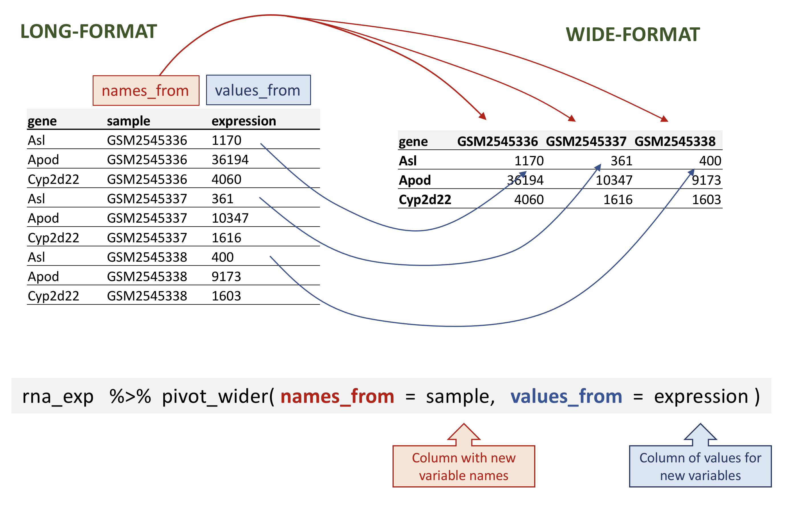
rna data.
R
rna_wide <- rna_exp |>
pivot_wider(names_from = sample,
values_from = expression)
rna_wide
输出
# A tibble: 1,474 × 23
gene GSM2545336 GSM2545337 GSM2545338 GSM2545339 GSM2545340 GSM2545341
<chr> <dbl> <dbl> <dbl> <dbl> <dbl> <dbl>
1 Asl 1170 361 400 586 626 988
2 Apod 36194 10347 9173 10620 13021 29594
3 Cyp2d22 4060 1616 1603 1901 2171 3349
4 Klk6 287 629 641 578 448 195
5 Fcrls 85 233 244 237 180 38
6 Slc2a4 782 231 248 265 313 786
7 Exd2 1619 2288 2235 2513 2366 1359
8 Gjc2 288 595 568 551 310 146
9 Plp1 43217 101241 96534 58354 53126 27173
10 Gnb4 1071 1791 1867 1430 1355 798
# ℹ 1,464 more rows
# ℹ 16 more variables: GSM2545342 <dbl>, GSM2545343 <dbl>, GSM2545344 <dbl>,
# GSM2545345 <dbl>, GSM2545346 <dbl>, GSM2545347 <dbl>, GSM2545348 <dbl>,
# GSM2545349 <dbl>, GSM2545350 <dbl>, GSM2545351 <dbl>, GSM2545352 <dbl>,
# GSM2545353 <dbl>, GSM2545354 <dbl>, GSM2545362 <dbl>, GSM2545363 <dbl>,
# GSM2545380 <dbl>请注意，默认情况下，pivot_wider() 函数会为缺失值添加
NA。
假设由于某种原因，在某些样本中，部分基因的表达值缺失。在以下虚构示例中，基因 Cyp2d22 仅保留一个表达值，来自 GSM2545338 样本。
R
rna_with_missing_values <- rna |>
select(gene, sample, expression) |>
filter(gene %in% c("Asl", "Apod", "Cyp2d22")) |>
filter(sample %in% c("GSM2545336", "GSM2545337", "GSM2545338")) |>
arrange(sample) |>
filter(!(gene == "Cyp2d22" & sample != "GSM2545338"))
rna_with_missing_values
输出
# A tibble: 7 × 3
gene sample expression
<chr> <chr> <dbl>
1 Asl GSM2545336 1170
2 Apod GSM2545336 36194
3 Asl GSM2545337 361
4 Apod GSM2545337 10347
5 Asl GSM2545338 400
6 Apod GSM2545338 9173
7 Cyp2d22 GSM2545338 1603默认情况下，pivot_wider() 函数会为缺失值添加
NA。这可以通过 pivot_wider() 函数的
values_fill 参数进行参数化。
R
rna_with_missing_values |>
pivot_wider(names_from = sample,
values_from = expression)
输出
# A tibble: 3 × 4
gene GSM2545336 GSM2545337 GSM2545338
<chr> <dbl> <dbl> <dbl>
1 Asl 1170 361 400
2 Apod 36194 10347 9173
3 Cyp2d22 NA NA 1603R
rna_with_missing_values |>
pivot_wider(names_from = sample,
values_from = expression,
values_fill = 0)
输出
# A tibble: 3 × 4
gene GSM2545336 GSM2545337 GSM2545338
<chr> <dbl> <dbl> <dbl>
1 Asl 1170 361 400
2 Apod 36194 10347 9173
3 Cyp2d22 0 0 1603将数据转换为长格式
在另一种情况下，我们使用列名并将其转换为一对新变量。其中一个变量将列名作为值表示，另一个变量则包含此前与列名关联的值。
pivot_longer() 接收四个主要参数：
- 待转换的数据；
-
names_to：我们想要创建并填充当前列名的新列名； -
values_to：我们想要创建并填充当前值的新列名； - 用于填充
names_to和values_to变量的列名（或用于删除的列名）。

rna data.
若要从 rna_wide 还原出
rna_long，我们将创建一个名为 sample
的键和一个名为 expression 的值，并使用除 gene
之外的所有列作为键变量。这里我们使用减号去掉 gene 列。
请注意，这里的新变量名需要加引号。
R
rna_long <- rna_wide |>
pivot_longer(names_to = "sample",
values_to = "expression",
-gene)
rna_long
输出
# A tibble: 32,428 × 3
gene sample expression
<chr> <chr> <dbl>
1 Asl GSM2545336 1170
2 Asl GSM2545337 361
3 Asl GSM2545338 400
4 Asl GSM2545339 586
5 Asl GSM2545340 626
6 Asl GSM2545341 988
7 Asl GSM2545342 836
8 Asl GSM2545343 535
9 Asl GSM2545344 586
10 Asl GSM2545345 597
# ℹ 32,418 more rows我们也可以使用规范来指定要包含的列。如果你有大量标识列，这种方法会很有用，因为指定要收集的列比指定要保留的列更方便。在这里，starts_with()
函数可以帮助获取样本名称，而无需逐一列出！另一种方案是使用
: 运算符！
R
rna_wide |>
pivot_longer(names_to = "sample",
values_to = "expression",
cols = starts_with("GSM"))
输出
# A tibble: 32,428 × 3
gene sample expression
<chr> <chr> <dbl>
1 Asl GSM2545336 1170
2 Asl GSM2545337 361
3 Asl GSM2545338 400
4 Asl GSM2545339 586
5 Asl GSM2545340 626
6 Asl GSM2545341 988
7 Asl GSM2545342 836
8 Asl GSM2545343 535
9 Asl GSM2545344 586
10 Asl GSM2545345 597
# ℹ 32,418 more rowsR
rna_wide |>
pivot_longer(names_to = "sample",
values_to = "expression",
GSM2545336:GSM2545380)
输出
# A tibble: 32,428 × 3
gene sample expression
<chr> <chr> <dbl>
1 Asl GSM2545336 1170
2 Asl GSM2545337 361
3 Asl GSM2545338 400
4 Asl GSM2545339 586
5 Asl GSM2545340 626
6 Asl GSM2545341 988
7 Asl GSM2545342 836
8 Asl GSM2545343 535
9 Asl GSM2545344 586
10 Asl GSM2545345 597
# ℹ 32,418 more rows请注意，如果宽格式中包含缺失值，NA
将被包含在新的长格式中。
回顾我们之前那个包含缺失值的虚拟 tibble：
R
rna_with_missing_values
输出
# A tibble: 7 × 3
gene sample expression
<chr> <chr> <dbl>
1 Asl GSM2545336 1170
2 Apod GSM2545336 36194
3 Asl GSM2545337 361
4 Apod GSM2545337 10347
5 Asl GSM2545338 400
6 Apod GSM2545338 9173
7 Cyp2d22 GSM2545338 1603R
wide_with_NA <- rna_with_missing_values |>
pivot_wider(names_from = sample,
values_from = expression)
wide_with_NA
输出
# A tibble: 3 × 4
gene GSM2545336 GSM2545337 GSM2545338
<chr> <dbl> <dbl> <dbl>
1 Asl 1170 361 400
2 Apod 36194 10347 9173
3 Cyp2d22 NA NA 1603R
wide_with_NA |>
pivot_longer(names_to = "sample",
values_to = "expression",
-gene)
输出
# A tibble: 9 × 3
gene sample expression
<chr> <chr> <dbl>
1 Asl GSM2545336 1170
2 Asl GSM2545337 361
3 Asl GSM2545338 400
4 Apod GSM2545336 36194
5 Apod GSM2545337 10347
6 Apod GSM2545338 9173
7 Cyp2d22 GSM2545336 NA
8 Cyp2d22 GSM2545337 NA
9 Cyp2d22 GSM2545338 1603转换为宽格式和长格式是一种有效的方法，可以平衡数据集，使每个重复实验的组成一致。
问题
从 rna 表开始，使用 pivot_wider()
函数创建一个宽格式表，显示每只小鼠的基因表达水平。然后使用
pivot_longer() 函数还原为长格式表。
R
rna1 <- rna |>
select(gene, mouse, expression) |>
pivot_wider(names_from = mouse, values_from = expression)
rna1
输出
# A tibble: 1,474 × 23
gene `14` `9` `10` `15` `18` `6` `5` `11` `22` `13` `23`
<chr> <dbl> <dbl> <dbl> <dbl> <dbl> <dbl> <dbl> <dbl> <dbl> <dbl> <dbl>
1 Asl 1170 361 400 586 626 988 836 535 586 597 938
2 Apod 36194 10347 9173 10620 13021 29594 24959 13668 13230 15868 27769
3 Cyp2d22 4060 1616 1603 1901 2171 3349 3122 2008 2254 2277 2985
4 Klk6 287 629 641 578 448 195 186 1101 537 567 327
5 Fcrls 85 233 244 237 180 38 68 375 199 177 89
6 Slc2a4 782 231 248 265 313 786 528 249 266 357 654
7 Exd2 1619 2288 2235 2513 2366 1359 1474 3126 2379 2173 1531
8 Gjc2 288 595 568 551 310 146 186 791 454 370 240
9 Plp1 43217 101241 96534 58354 53126 27173 28728 98658 61356 61647 38019
10 Gnb4 1071 1791 1867 1430 1355 798 806 2437 1394 1554 960
# ℹ 1,464 more rows
# ℹ 11 more variables: `24` <dbl>, `8` <dbl>, `7` <dbl>, `1` <dbl>, `16` <dbl>,
# `21` <dbl>, `4` <dbl>, `2` <dbl>, `20` <dbl>, `12` <dbl>, `19` <dbl>R
rna1 |>
pivot_longer(names_to = "mouse_id", values_to = "counts", -gene)
输出
# A tibble: 32,428 × 3
gene mouse_id counts
<chr> <chr> <dbl>
1 Asl 14 1170
2 Asl 9 361
3 Asl 10 400
4 Asl 15 586
5 Asl 18 626
6 Asl 6 988
7 Asl 5 836
8 Asl 11 535
9 Asl 22 586
10 Asl 13 597
# ℹ 32,418 more rows问题
从 rna 数据框中提取位于 X 和 Y
染色体上的基因子集，并将该数据框展开，以 sex
为列，chromosome_name
为行，每条染色体上基因的平均表达量为值，如下所示的 tibble 所示：
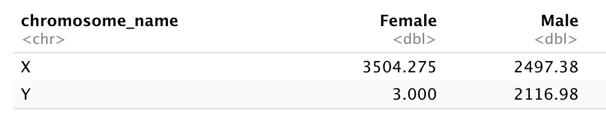
在重塑之前，您需要先进行汇总！
首先，让我们计算雄性和雌性样本中 X 和 Y 连锁基因的平均表达水平……
R
rna |>
filter(chromosome_name == "Y" | chromosome_name == "X") |>
group_by(sex, chromosome_name) |>
summarise(mean = mean(expression))
输出
`summarise()` has regrouped the output.
ℹ Summaries were computed grouped by sex and chromosome_name.
ℹ Output is grouped by sex.
ℹ Use `summarise(.groups = "drop_last")` to silence this message.
ℹ Use `summarise(.by = c(sex, chromosome_name))` for per-operation grouping
(`?dplyr::dplyr_by`) instead.输出
# A tibble: 4 × 3
# Groups: sex [2]
sex chromosome_name mean
<chr> <chr> <dbl>
1 Female X 3504.
2 Female Y 3
3 Male X 2497.
4 Male Y 2117.并将表格转换为宽格式
R
rna_1 <- rna |>
filter(chromosome_name == "Y" | chromosome_name == "X") |>
group_by(sex, chromosome_name) |>
summarise(mean = mean(expression)) |>
pivot_wider(names_from = sex,
values_from = mean)
输出
`summarise()` has regrouped the output.
ℹ Summaries were computed grouped by sex and chromosome_name.
ℹ Output is grouped by sex.
ℹ Use `summarise(.groups = "drop_last")` to silence this message.
ℹ Use `summarise(.by = c(sex, chromosome_name))` for per-operation grouping
(`?dplyr::dplyr_by`) instead.R
rna_1
输出
# A tibble: 2 × 3
chromosome_name Female Male
<chr> <dbl> <dbl>
1 X 3504. 2497.
2 Y 3 2117.现在将该数据框通过 pivot_longer()
进行转换，使每一行都成为一个唯一的 chromosome_name 与
gender 组合。
R
rna_1 |>
pivot_longer(names_to = "gender",
values_to = "mean",
-chromosome_name)
输出
# A tibble: 4 × 3
chromosome_name gender mean
<chr> <chr> <dbl>
1 X Female 3504.
2 X Male 2497.
3 Y Female 3
4 Y Male 2117.问题
使用 rna
数据集创建一个表达矩阵，其中每行代表基因的平均表达水平，每列代表不同的时间点。
首先，让我们计算每个基因和每个时间点的平均表达量。
R
rna |>
group_by(gene, time) |>
summarise(mean_exp = mean(expression))
输出
`summarise()` has regrouped the output.
ℹ Summaries were computed grouped by gene and time.
ℹ Output is grouped by gene.
ℹ Use `summarise(.groups = "drop_last")` to silence this message.
ℹ Use `summarise(.by = c(gene, time))` for per-operation grouping
(`?dplyr::dplyr_by`) instead.输出
# A tibble: 4,422 × 3
# Groups: gene [1,474]
gene time mean_exp
<chr> <dbl> <dbl>
1 AI504432 0 1034.
2 AI504432 4 1104.
3 AI504432 8 1014
4 AW046200 0 155.
5 AW046200 4 152.
6 AW046200 8 81
7 AW551984 0 238
8 AW551984 4 302.
9 AW551984 8 342.
10 Aamp 0 4603.
# ℹ 4,412 more rows在使用 pivot_wider() 函数之前
R
rna_time <- rna |>
group_by(gene, time) |>
summarise(mean_exp = mean(expression)) |>
pivot_wider(names_from = time,
values_from = mean_exp)
输出
`summarise()` has regrouped the output.
ℹ Summaries were computed grouped by gene and time.
ℹ Output is grouped by gene.
ℹ Use `summarise(.groups = "drop_last")` to silence this message.
ℹ Use `summarise(.by = c(gene, time))` for per-operation grouping
(`?dplyr::dplyr_by`) instead.R
rna_time
输出
# A tibble: 1,474 × 4
# Groups: gene [1,474]
gene `0` `4` `8`
<chr> <dbl> <dbl> <dbl>
1 AI504432 1034. 1104. 1014
2 AW046200 155. 152. 81
3 AW551984 238 302. 342.
4 Aamp 4603. 4870 4763.
5 Abca12 5.29 4.25 4.14
6 Abcc8 2576. 2609. 2292.
7 Abhd14a 591. 547. 432.
8 Abi2 4881. 4903. 4945.
9 Abi3bp 1175. 1061. 762.
10 Abl2 2170. 2078. 2131.
# ℹ 1,464 more rows请注意，这会生成一个部分列名以数字开头的 tibble。如果我们想选择对应于时间点的列，就不能直接使用列名……当我们选择第 4 列时会发生什么？
R
rna |>
group_by(gene, time) |>
summarise(mean_exp = mean(expression)) |>
pivot_wider(names_from = time,
values_from = mean_exp) |>
select(gene, 4)
输出
`summarise()` has regrouped the output.
ℹ Summaries were computed grouped by gene and time.
ℹ Output is grouped by gene.
ℹ Use `summarise(.groups = "drop_last")` to silence this message.
ℹ Use `summarise(.by = c(gene, time))` for per-operation grouping
(`?dplyr::dplyr_by`) instead.输出
# A tibble: 1,474 × 2
# Groups: gene [1,474]
gene `8`
<chr> <dbl>
1 AI504432 1014
2 AW046200 81
3 AW551984 342.
4 Aamp 4763.
5 Abca12 4.14
6 Abcc8 2292.
7 Abhd14a 432.
8 Abi2 4945.
9 Abi3bp 762.
10 Abl2 2131.
# ℹ 1,464 more rows若要选择时间点 4，我们需要使用反引号 “`” 来引号包裹列名。
R
rna |>
group_by(gene, time) |>
summarise(mean_exp = mean(expression)) |>
pivot_wider(names_from = time,
values_from = mean_exp) |>
select(gene, `4`)
输出
`summarise()` has regrouped the output.
ℹ Summaries were computed grouped by gene and time.
ℹ Output is grouped by gene.
ℹ Use `summarise(.groups = "drop_last")` to silence this message.
ℹ Use `summarise(.by = c(gene, time))` for per-operation grouping
(`?dplyr::dplyr_by`) instead.输出
# A tibble: 1,474 × 2
# Groups: gene [1,474]
gene `4`
<chr> <dbl>
1 AI504432 1104.
2 AW046200 152.
3 AW551984 302.
4 Aamp 4870
5 Abca12 4.25
6 Abcc8 2609.
7 Abhd14a 547.
8 Abi2 4903.
9 Abi3bp 1061.
10 Abl2 2078.
# ℹ 1,464 more rows另一种方案是重命名该列，选择一个不以数字开头的名称：
R
rna |>
group_by(gene, time) |>
summarise(mean_exp = mean(expression)) |>
pivot_wider(names_from = time,
values_from = mean_exp) |>
rename("time0" = `0`, "time4" = `4`, "time8" = `8`) |>
select(gene, time4)
输出
`summarise()` has regrouped the output.
ℹ Summaries were computed grouped by gene and time.
ℹ Output is grouped by gene.
ℹ Use `summarise(.groups = "drop_last")` to silence this message.
ℹ Use `summarise(.by = c(gene, time))` for per-operation grouping
(`?dplyr::dplyr_by`) instead.输出
# A tibble: 1,474 × 2
# Groups: gene [1,474]
gene time4
<chr> <dbl>
1 AI504432 1104.
2 AW046200 152.
3 AW551984 302.
4 Aamp 4870
5 Abca12 4.25
6 Abcc8 2609.
7 Abhd14a 547.
8 Abi2 4903.
9 Abi3bp 1061.
10 Abl2 2078.
# ℹ 1,464 more rows问题
使用之前包含每个时间点平均表达水平的数据框，创建一个新列，其中包含时间点 8 与时间点 0 之间的倍数变化，以及时间点 8 与时间点 4 之间的倍数变化。将此表转换为长格式表，汇总计算出的倍数变化。
从 rna_time tibble 开始：
R
rna_time
输出
# A tibble: 1,474 × 4
# Groups: gene [1,474]
gene `0` `4` `8`
<chr> <dbl> <dbl> <dbl>
1 AI504432 1034. 1104. 1014
2 AW046200 155. 152. 81
3 AW551984 238 302. 342.
4 Aamp 4603. 4870 4763.
5 Abca12 5.29 4.25 4.14
6 Abcc8 2576. 2609. 2292.
7 Abhd14a 591. 547. 432.
8 Abi2 4881. 4903. 4945.
9 Abi3bp 1175. 1061. 762.
10 Abl2 2170. 2078. 2131.
# ℹ 1,464 more rows计算倍数变化：
R
rna_time |>
mutate(time_8_vs_0 = `8` / `0`, time_8_vs_4 = `8` / `4`)
输出
# A tibble: 1,474 × 6
# Groups: gene [1,474]
gene `0` `4` `8` time_8_vs_0 time_8_vs_4
<chr> <dbl> <dbl> <dbl> <dbl> <dbl>
1 AI504432 1034. 1104. 1014 0.981 0.918
2 AW046200 155. 152. 81 0.522 0.532
3 AW551984 238 302. 342. 1.44 1.13
4 Aamp 4603. 4870 4763. 1.03 0.978
5 Abca12 5.29 4.25 4.14 0.784 0.975
6 Abcc8 2576. 2609. 2292. 0.889 0.878
7 Abhd14a 591. 547. 432. 0.731 0.791
8 Abi2 4881. 4903. 4945. 1.01 1.01
9 Abi3bp 1175. 1061. 762. 0.649 0.719
10 Abl2 2170. 2078. 2131. 0.982 1.03
# ℹ 1,464 more rows并使用 pivot_longer() 函数：
R
rna_time |>
mutate(time_8_vs_0 = `8` / `0`, time_8_vs_4 = `8` / `4`) |>
pivot_longer(names_to = "comparisons",
values_to = "Fold_changes",
time_8_vs_0:time_8_vs_4)
输出
# A tibble: 2,948 × 6
# Groups: gene [1,474]
gene `0` `4` `8` comparisons Fold_changes
<chr> <dbl> <dbl> <dbl> <chr> <dbl>
1 AI504432 1034. 1104. 1014 time_8_vs_0 0.981
2 AI504432 1034. 1104. 1014 time_8_vs_4 0.918
3 AW046200 155. 152. 81 time_8_vs_0 0.522
4 AW046200 155. 152. 81 time_8_vs_4 0.532
5 AW551984 238 302. 342. time_8_vs_0 1.44
6 AW551984 238 302. 342. time_8_vs_4 1.13
7 Aamp 4603. 4870 4763. time_8_vs_0 1.03
8 Aamp 4603. 4870 4763. time_8_vs_4 0.978
9 Abca12 5.29 4.25 4.14 time_8_vs_0 0.784
10 Abca12 5.29 4.25 4.14 time_8_vs_4 0.975
# ℹ 2,938 more rows连接表
在许多实际场景中，数据分布在多个表格中。这通常是因为不同类型的信息是从不同的来源收集的。
在某些分析中，可能需要根据一个所有表格共有的列，将两个或多个表格的数据合并为一个数据框。
dplyr
包提供了一组连接函数，用于根据指定列中的匹配项将两个数据框合并。在此，我们将简要介绍连接操作。如需进一步阅读，请参阅关于
表连接
的章节。数据转换速查表
也提供了关于表连接的简要概述。
我们将使用一个小表 rna_mini
来演示连接操作，该表我们将通过对原始表 rna
进行子集提取，仅保留 3 列和 10 行来创建。
R
rna_mini <- rna |>
select(gene, sample, expression) |>
head(10)
rna_mini
输出
# A tibble: 10 × 3
gene sample expression
<chr> <chr> <dbl>
1 Asl GSM2545336 1170
2 Apod GSM2545336 36194
3 Cyp2d22 GSM2545336 4060
4 Klk6 GSM2545336 287
5 Fcrls GSM2545336 85
6 Slc2a4 GSM2545336 782
7 Exd2 GSM2545336 1619
8 Gjc2 GSM2545336 288
9 Plp1 GSM2545336 43217
10 Gnb4 GSM2545336 1071第二张表 annot1 包含 2 列：gene 和
gene_description。您可以点击链接 下载
annot1.csv 并将其移至 data/ 文件夹，或者使用下面的 R
代码将其直接下载到该文件夹。
R
download.file(url = "https://carpentries-incubator.github.io/bioc-intro/data/annot1.csv",
destfile = "data/annot1.csv")
annot1 <- read_csv(file = "data/annot1.csv")
annot1
输出
# A tibble: 10 × 2
gene gene_description
<chr> <chr>
1 Cyp2d22 cytochrome P450, family 2, subfamily d, polypeptide 22 [Source:MGI S…
2 Klk6 kallikrein related-peptidase 6 [Source:MGI Symbol;Acc:MGI:1343166]
3 Fcrls Fc receptor-like S, scavenger receptor [Source:MGI Symbol;Acc:MGI:19…
4 Plp1 proteolipid protein (myelin) 1 [Source:MGI Symbol;Acc:MGI:97623]
5 Exd2 exonuclease 3'-5' domain containing 2 [Source:MGI Symbol;Acc:MGI:192…
6 Apod apolipoprotein D [Source:MGI Symbol;Acc:MGI:88056]
7 Gnb4 guanine nucleotide binding protein (G protein), beta 4 [Source:MGI S…
8 Slc2a4 solute carrier family 2 (facilitated glucose transporter), member 4 …
9 Asl argininosuccinate lyase [Source:MGI Symbol;Acc:MGI:88084]
10 Gjc2 gap junction protein, gamma 2 [Source:MGI Symbol;Acc:MGI:2153060] 现在，我们想使用 dplyr 包中的 full_join()
函数将这两个表合并为一个包含所有变量的表。该函数会自动寻找公共变量，以匹配第一张表和第二张表的列。在本例中，gene
就是公共变量。这类变量被称为键。键用于在不同表之间匹配观测值。
R
full_join(rna_mini, annot1)
输出
Joining with `by = join_by(gene)`输出
# A tibble: 10 × 4
gene sample expression gene_description
<chr> <chr> <dbl> <chr>
1 Asl GSM2545336 1170 argininosuccinate lyase [Source:MGI Symbol;Acc…
2 Apod GSM2545336 36194 apolipoprotein D [Source:MGI Symbol;Acc:MGI:88…
3 Cyp2d22 GSM2545336 4060 cytochrome P450, family 2, subfamily d, polype…
4 Klk6 GSM2545336 287 kallikrein related-peptidase 6 [Source:MGI Sym…
5 Fcrls GSM2545336 85 Fc receptor-like S, scavenger receptor [Source…
6 Slc2a4 GSM2545336 782 solute carrier family 2 (facilitated glucose t…
7 Exd2 GSM2545336 1619 exonuclease 3'-5' domain containing 2 [Source:…
8 Gjc2 GSM2545336 288 gap junction protein, gamma 2 [Source:MGI Symb…
9 Plp1 GSM2545336 43217 proteolipid protein (myelin) 1 [Source:MGI Sym…
10 Gnb4 GSM2545336 1071 guanine nucleotide binding protein (G protein)…在实际应用中，基因注释有时会采用不同的标注方式。
annot2 表与 annot1
完全相同，仅将包含基因名称的变量标注不同。同样，您可以自行 下载
annot2.csv 并将其移至 data/，或者使用下面的 R
代码。
R
download.file(url = "https://carpentries-incubator.github.io/bioc-intro/data/annot2.csv",
destfile = "data/annot2.csv")
annot2 <- read_csv(file = "data/annot2.csv")
annot2
输出
# A tibble: 10 × 2
external_gene_name description
<chr> <chr>
1 Cyp2d22 cytochrome P450, family 2, subfamily d, polypeptide 22 [S…
2 Klk6 kallikrein related-peptidase 6 [Source:MGI Symbol;Acc:MGI…
3 Fcrls Fc receptor-like S, scavenger receptor [Source:MGI Symbol…
4 Plp1 proteolipid protein (myelin) 1 [Source:MGI Symbol;Acc:MGI…
5 Exd2 exonuclease 3'-5' domain containing 2 [Source:MGI Symbol;…
6 Apod apolipoprotein D [Source:MGI Symbol;Acc:MGI:88056]
7 Gnb4 guanine nucleotide binding protein (G protein), beta 4 [S…
8 Slc2a4 solute carrier family 2 (facilitated glucose transporter)…
9 Asl argininosuccinate lyase [Source:MGI Symbol;Acc:MGI:88084]
10 Gjc2 gap junction protein, gamma 2 [Source:MGI Symbol;Acc:MGI:…如果没有任何变量名匹配，我们可以手动设置用于匹配的变量。这些变量可以通过
by 参数来设置，如下面 rna_mini 和
annot2 表所示。
R
full_join(rna_mini, annot2, by = c("gene" = "external_gene_name"))
输出
# A tibble: 10 × 4
gene sample expression description
<chr> <chr> <dbl> <chr>
1 Asl GSM2545336 1170 argininosuccinate lyase [Source:MGI Symbol;Acc…
2 Apod GSM2545336 36194 apolipoprotein D [Source:MGI Symbol;Acc:MGI:88…
3 Cyp2d22 GSM2545336 4060 cytochrome P450, family 2, subfamily d, polype…
4 Klk6 GSM2545336 287 kallikrein related-peptidase 6 [Source:MGI Sym…
5 Fcrls GSM2545336 85 Fc receptor-like S, scavenger receptor [Source…
6 Slc2a4 GSM2545336 782 solute carrier family 2 (facilitated glucose t…
7 Exd2 GSM2545336 1619 exonuclease 3'-5' domain containing 2 [Source:…
8 Gjc2 GSM2545336 288 gap junction protein, gamma 2 [Source:MGI Symb…
9 Plp1 GSM2545336 43217 proteolipid protein (myelin) 1 [Source:MGI Sym…
10 Gnb4 GSM2545336 1071 guanine nucleotide binding protein (G protein)…如上所示，第一个表的变量名在合并后的表中得以保留。
挑战：
点击此链接下载
annot3 表，并将该表放入你的 data/ 存储库中。使用
full_join() 函数，将 rna_mini 和
annot3 表进行连接。基因
Klk6、mt-Tf、mt-Rnr1、mt-Tv、mt-Rnr2
和 mt-Tl1 发生了什么变化？
R
annot3 <- read_csv("data/annot3.csv")
full_join(rna_mini, annot3)
输出
# A tibble: 15 × 4
gene sample expression gene_description
<chr> <chr> <dbl> <chr>
1 Asl GSM2545336 1170 argininosuccinate lyase [Source:MGI Symbol;Acc…
2 Apod GSM2545336 36194 apolipoprotein D [Source:MGI Symbol;Acc:MGI:88…
3 Cyp2d22 GSM2545336 4060 cytochrome P450, family 2, subfamily d, polype…
4 Klk6 GSM2545336 287 <NA>
5 Fcrls GSM2545336 85 Fc receptor-like S, scavenger receptor [Source…
6 Slc2a4 GSM2545336 782 solute carrier family 2 (facilitated glucose t…
7 Exd2 GSM2545336 1619 exonuclease 3'-5' domain containing 2 [Source:…
8 Gjc2 GSM2545336 288 gap junction protein, gamma 2 [Source:MGI Symb…
9 Plp1 GSM2545336 43217 proteolipid protein (myelin) 1 [Source:MGI Sym…
10 Gnb4 GSM2545336 1071 guanine nucleotide binding protein (G protein)…
11 mt-Tf <NA> NA mitochondrially encoded tRNA phenylalanine [So…
12 mt-Rnr1 <NA> NA mitochondrially encoded 12S rRNA [Source:MGI S…
13 mt-Tv <NA> NA mitochondrially encoded tRNA valine [Source:MG…
14 mt-Rnr2 <NA> NA mitochondrially encoded 16S rRNA [Source:MGI S…
15 mt-Tl1 <NA> NA mitochondrially encoded tRNA leucine 1 [Source…基因 Klk6 仅存在于 rna_mini 中，而基因
mt-Tf、mt-Rnr1、mt-Tv、mt-Rnr2 和
mt-Tl1 仅存在于 annot3
表中。它们在该表变量中的相应值均被编码为缺失值。
导出数据
既然您已经学会了如何使用 dplyr
从原始数据中提取信息或进行汇总，您可能想要导出这些新数据集，以便与合作者共享或用于存档。
与用于将 CSV 文件读取到 R 中的 read_csv()
函数类似，还有一个 write_csv() 函数可从数据框生成 CSV
文件。
在使用 write_csv()
之前，我们将在工作目录中创建一个新文件夹
data_output，用于存储此生成的数据集。我们不希望将生成的数据集写入与原始数据相同的目录中。将两者分开存放是一个良好的实践。data
文件夹应仅包含原始且未经修改的数据，且应保持原样，以确保不会将其删除或修改。相比之下，我们的脚本将生成
data_output
文件夹中的内容，因此即使其中的文件被删除，我们也始终可以重新生成它们。
让我们使用 write_csv() 来保存我们之前创建的 rna_wide
表格。
R
write_csv(rna_wide, file = "data_output/rna_wide.csv")
- 使用 tidyverse 元包在 R 中处理表格数据
Content from 数据可视化
最后更新于 2026-11-07 | 编辑此页
预计用时： 120 分钟
概述
问题
- R 中的可视化
学习目标
- 使用 ggplot 绘制散点图、箱线图、折线图等。
- 设置通用图表设置。
- 描述什么是分面，并在 ggplot 中应用分面。
- 修改现有 ggplot 图表的视觉效果（包括轴标签和颜色）。
- 利用数据框中的数据构建复杂且定制化的图表。
本集基于 Data Carpentries 的 Data Analysis and Visualisation in R for Ecologists 课程。
数据可视化
我们首先加载所需的包。ggplot2 包含在
tidyverse 包中。
R
library("tidyverse")
如果工作区中已没有这些数据，请重新加载我们在上一课中保存的数据。
R
rna <- read.csv("data/rnaseq.csv")
数据可视化速查表将涵盖
ggplot2
的基础知识和更高级的功能，并在起到提醒作用的同时，帮助您概览该包中提供的多种数据表示方式。Thomas
Lin Pedersen 提供的以下视频教程（第一部分 和 第二部分）也非常有参考价值。
使用 ggplot2 绘图
ggplot2
是一个绘图包，能够轻松地利用数据框中的数据创建复杂的图表。它提供了一种更具程序化的接口，用于指定要绘制的变量、显示方式以及通用的视觉属性。支撑
ggplot2 的理论基础是“图形语法”（Grammar of
Graphics， Wilkinson (2005)
）。采用这种方法，即使底层数据发生变化，或者我们决定将柱状图改为散点图，也仅需进行极少的修改。这有助于在最少的调整和微调下，创建出发表级质量的图表。
有一本关于 ggplot2 ( Wickham
(2016) ) 的书，提供了很好的概览，但已过时。第三版正在筹备中，将在网上免费提供。ggplot2
网页 (https://ggplot2.tidyverse.org)
提供了丰富的文档。
ggplot2
函数适用于“长格式”数据，即每个维度对应一列，每个观测值对应一行。结构良好的数据将在使用
ggplot2 绘制图表时为你节省大量时间。
ggplot 图形是通过逐步添加新元素来构建的。以这种方式添加图层，可以为图表提供极大的灵活性和自定义能力。
图形语法（Grammar of Graphics）的核心思想是，你可以用相同的 3 个组件构建任何图表：(1) 数据集，(2) 坐标系，以及 (3) geoms —— 即表示数据点的视觉标记 1
要构建 ggplot，我们将使用以下基本模板，该模板适用于不同类型的图表：
ggplot(data = <DATA>, mapping = aes(<MAPPINGS>)) + <GEOM_FUNCTION>()- 使用
ggplot()函数，并通过data参数将图表绑定到特定的 数据框 中
R
ggplot(data = rna)
- 定义一个映射（使用 aesthetic (
aes) 函数），通过选择要绘制的变量并指定在图表中如何呈现它们，例如作为 x/y 坐标，或作为尺寸、形状、颜色等特性。
R
ggplot(data = rna, mapping = aes(x = expression))
-
添加“geoms”——几何图形，即图表中数据的图形表示（点、线、柱）。
ggplot2提供了许多不同的 geoms；今天我们将使用一些常用的，包括：* `geom_point()` for scatter plots, dot plots, etc. * `geom_histogram()` for histograms * `geom_boxplot()` for, well, boxplots! * `geom_line()` for trend lines, time series, etc.
若要在图表中添加几何对象 (geometry)，请使用 +
运算符。让我们先使用 geom_histogram()：
R
ggplot(data = rna, mapping = aes(x = expression)) +
geom_histogram()
输出
`stat_bin()` using `bins = 30`. Pick better value `binwidth`.
ggplot2 包中的 +
尤为实用，因为它允许你修改现有的 ggplot
对象。这意味着你可以轻松地设置图表模板，并便捷地探索不同类型的图表，因此上述图表也可以通过如下代码生成：
R
# Assign plot to a variable
rna_plot <- ggplot(data = rna,
mapping = aes(x = expression))
# Draw the plot
rna_plot + geom_histogram()
挑战
你可能已经注意到，在绘制直方图时会出现一条自动提示信息：
输出
`stat_bin()` using `bins = 30`. Pick better value `binwidth`.修改 geom_histogram() 的参数 bins 或
binwidth 以更改分箱数或宽度。
R
# change bins
ggplot(rna, aes(x = expression)) +
geom_histogram(bins = 15)

R
# change binwidth
ggplot(rna, aes(x = expression)) +
geom_histogram(binwidth = 2000)

我们可以看到，数据向右偏。我们可以进行以2为底的对数变换，以获得更对称的分布。请注意，我们在此添加了一个小的常数值
(+1)，以避免在表达值为 0 时返回 -Inf 值。
R
rna <- rna |>
mutate(expression_log = log2(expression + 1))
现在如果绘制以2为底的对数变换后的表达量直方图，分布确实更接近正态分布。
R
ggplot(rna, aes(x = expression_log)) + geom_histogram()
输出
`stat_bin()` using `bins = 30`. Pick better value `binwidth`.
接下来，我们将处理以对数变换后的表达量值。
挑战
另一种可视化此变换的方法是考虑观测值的尺度。例如，调整轴的尺度可能有助于更好地分布观测值在图表空间中。调整轴尺度的方法与添加/修改其他组件类似（即通过逐步添加命令）。请尝试进行此项修改：
- 以 log10 尺度表示未经变换的表达量；参见
scale_x_log10()。将其与之前的图表进行对比。为什么现在会出现警告信息？
R
ggplot(data = rna,mapping = aes(x = expression))+
geom_histogram() +
scale_x_log10()
警告
Warning in scale_x_log10(): log-10 transformation introduced infinite values.输出
`stat_bin()` using `bins = 30`. Pick better value `binwidth`.警告
Warning: Removed 507 rows containing non-finite outside the scale range
(`stat_bin()`).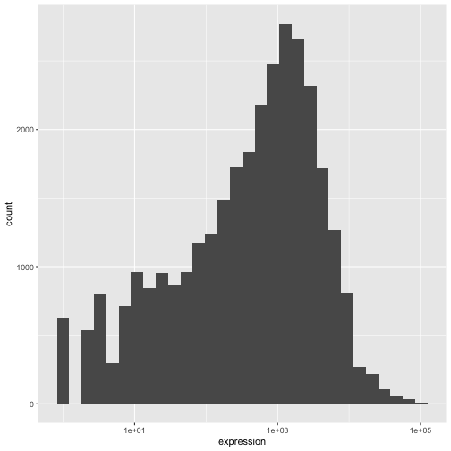
注释
- 在
ggplot()函数中指定的设置可由随后添加的任何 geom 图层继承（即这些是全局绘图设置），包括在aes()中设置的 x 轴和 y 轴映射。 - 您还可以为特定的 geom 指定映射，而无需依赖于
ggplot()函数中定义的全局映射。 - 用于添加新图层的
+符号必须放置在包含前一个图层的行末尾。如果相反，将+符号添加到包含新图层的行首，ggplot2将不会添加该新图层，并返回错误消息。
R
# This is the correct syntax for adding layers
rna_plot +
geom_histogram()
# This will not add the new layer and will return an error message
rna_plot
+ geom_histogram()
迭代构建图表
现在我们将使用 geom_point()
函数绘制一个包含两个连续变量的散点图。该图将表示时间 8 与时间 0 以及时间
4 与时间 0
之间表达量的以2为底的对数倍数变化。为此，我们首先需要计算每个基因和时间点的对数变换后的表达量值的平均值，然后通过减去时间
8 与时间 0 以及时间 4 与时间 0
之间对数表达量的平均值，来计算对数倍数变化。请注意，我们在此还包含了稍后用于表示基因的基因生物型。我们将把倍数变化保存到一个名为
rna_fc. 的新数据框中。
R
rna_fc <- rna |> select(gene, time,
gene_biotype, expression_log) |>
group_by(gene, time, gene_biotype) |>
summarize(mean_exp = mean(expression_log)) |>
pivot_wider(names_from = time,
values_from = mean_exp) |>
mutate(time_8_vs_0 = `8` - `0`, time_4_vs_0 = `4` - `0`)
输出
`summarise()` has regrouped the output.
ℹ Summaries were computed grouped by gene, time, and gene_biotype.
ℹ Output is grouped by gene and time.
ℹ Use `summarise(.groups = "drop_last")` to silence this message.
ℹ Use `summarise(.by = c(gene, time, gene_biotype))` for per-operation grouping
(`?dplyr::dplyr_by`) instead.接下来，我们可以使用新创建的数据集 rna_fc 构建一个
ggplot。使用 ggplot2
构建图表通常是一个迭代过程。我们首先定义要使用的数据集，布置轴，并选择一个
geom：
R
ggplot(data = rna_fc, mapping = aes(x = time_4_vs_0, y = time_8_vs_0)) +
geom_point()

然后，我们开始修改这张图，以从中提取更多信息。例如，我们可以添加透明度
(alpha) 以避免重叠：
R
ggplot(data = rna_fc, mapping = aes(x = time_4_vs_0, y = time_8_vs_0)) +
geom_point(alpha = 0.3)
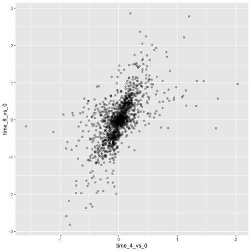
我们还可以为所有点添加颜色：
R
ggplot(data = rna_fc, mapping = aes(x = time_4_vs_0, y = time_8_vs_0)) +
geom_point(alpha = 0.3, color = "blue")

或者，若要为图中的每个基因着色，可以将向量作为参数
color 的输入。ggplot2
将提供与向量中不同值相对应的不同颜色。以下是一个使用
gene_biotype 进行着色的示例：
R
ggplot(data = rna_fc, mapping = aes(x = time_4_vs_0, y = time_8_vs_0)) +
geom_point(alpha = 0.3, aes(color = gene_biotype))

我们也可以直接在 ggplot() 函数提供的映射中指定颜色。任何
geom 图层都将看到这些颜色，且映射将由 aes() 中设置的 x 轴和
y 轴决定。
R
ggplot(data = rna_fc, mapping = aes(x = time_4_vs_0, y = time_8_vs_0,
color = gene_biotype)) +
geom_point(alpha = 0.3)

最后，我们还可以使用 geom_abline()
函数添加一条对角线：
R
ggplot(data = rna_fc, mapping = aes(x = time_4_vs_0, y = time_8_vs_0,
color = gene_biotype)) +
geom_point(alpha = 0.3) +
geom_abline(intercept = 0)
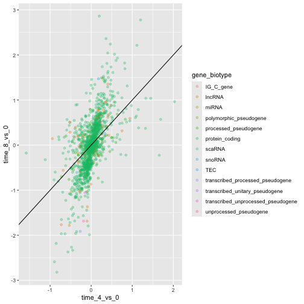
请注意，我们可以将 geom 图层从 geom_point 更改为
geom_jitter，而颜色仍将由 gene_biotype
决定。
R
ggplot(data = rna_fc, mapping = aes(x = time_4_vs_0, y = time_8_vs_0,
color = gene_biotype)) +
geom_jitter(alpha = 0.3) +
geom_abline(intercept = 0)
挑战
散点图是处理小规模数据集的实用探索工具。对于像 rna_fc
数据集这样包含大量观测值的数据集，点的重叠可能是散点图的局限性。处理此类场景的一种策略是对观测值进行六边形分箱。图表空间被镶嵌成六边形。每个六边形根据其边界内观测值的数量被赋予一个颜色。
若要在
ggplot2中使用六边形分箱法，请先从 CRAN 安装 R 包hexbin并加载它。然后使用
geom_hex()函数生成 hexbin 图表。与散点图相比，六边形分箱图的相对优缺点是什么？请查看上述散点图，并将其与你创建的六边形分箱图进行对比。
R
install.packages("hexbin")
R
library("hexbin")
ggplot(data = rna_fc, mapping = aes(x = time_4_vs_0, y = time_8_vs_0)) +
geom_hex() +
geom_abline(intercept = 0)

挑战
利用刚才学到的知识，为 rna 数据集绘制
expression_log 与 sample
的散点图，并用不同颜色表示时间。这是否是展示此类数据的好方法？
R
ggplot(data = rna, mapping = aes(y = expression_log, x = sample)) +
geom_point(aes(color = time))
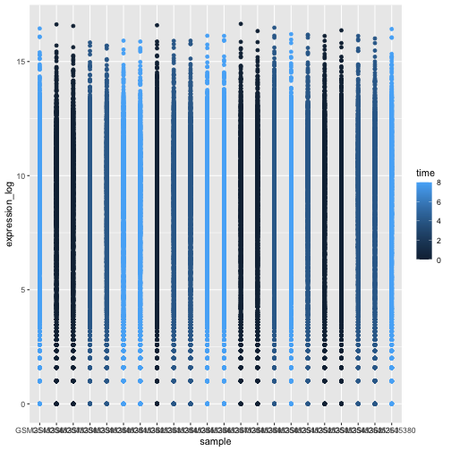
箱线图
我们可以使用箱线图来可视化每个样本中基因表达的分布：
R
ggplot(data = rna,
mapping = aes(y = expression_log, x = sample)) +
geom_boxplot()
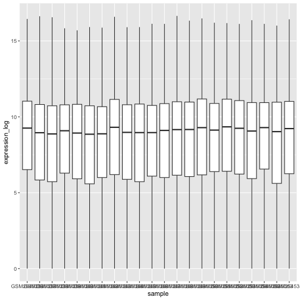
通过在箱线图中添加点，我们可以更清晰地了解测量值的数量及其分布情况：
R
ggplot(data = rna,
mapping = aes(y = expression_log, x = sample)) +
geom_jitter(alpha = 0.2, color = "tomato") +
geom_boxplot(alpha = 0)
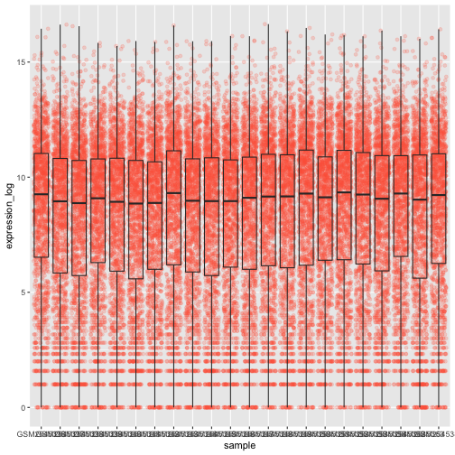
挑战
请注意，箱线图层位于抖动层之上。你需要修改代码中的哪些部分，才能将箱线图置于点图下方？
我们应该调换这两个 geom 的顺序：
R
ggplot(data = rna,
mapping = aes(y = expression_log, x = sample)) +
geom_boxplot(alpha = 0) +
geom_jitter(alpha = 0.2, color = "tomato")
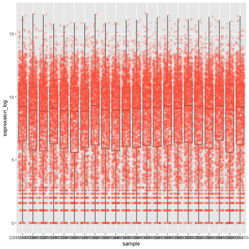
你可能会注意到 x 轴上的数值仍然无法清晰读取。让我们更改标签的方向，并对其进行垂直和水平调整，以免重叠。你可以使用 90 度角，或者通过尝试来找到斜向标签的合适角度：
R
ggplot(data = rna,
mapping = aes(y = expression_log, x = sample)) +
geom_jitter(alpha = 0.2, color = "tomato") +
geom_boxplot(alpha = 0) +
theme(axis.text.x = element_text(angle = 90, hjust = 0.5, vjust = 0.5))
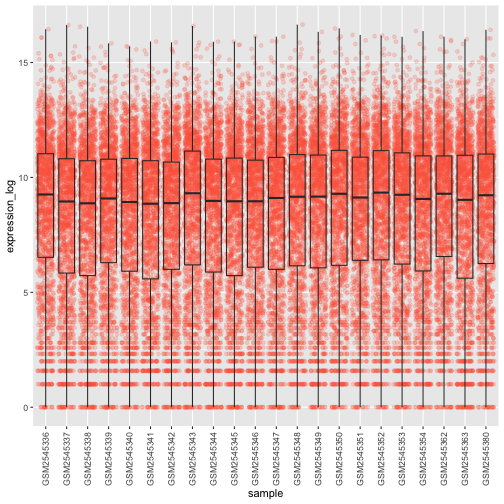
挑战
根据感染时长 (time) 为箱线图上的数据点添加颜色。
提示： 检查 time 的类型。考虑直接在 ggplot
映射中将 time 的类型从整数改为因子。为什么这种改变会影响 R
绘制图表的方式？
R
# time as integer
ggplot(data = rna,
mapping = aes(y = expression_log,
x = sample)) +
geom_jitter(alpha = 0.2, aes(color = time)) +
geom_boxplot(alpha = 0) +
theme(axis.text.x = element_text(angle = 90, hjust = 0.5, vjust = 0.5))
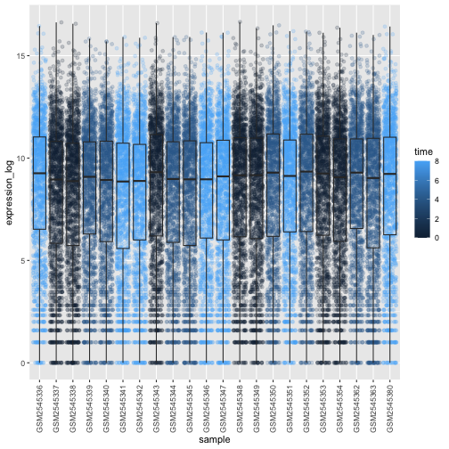
R
# time as factor
ggplot(data = rna,
mapping = aes(y = expression_log,
x = sample)) +
geom_jitter(alpha = 0.2, aes(color = as.factor(time))) +
geom_boxplot(alpha = 0) +
theme(axis.text.x = element_text(angle = 90, hjust = 0.5, vjust = 0.5))
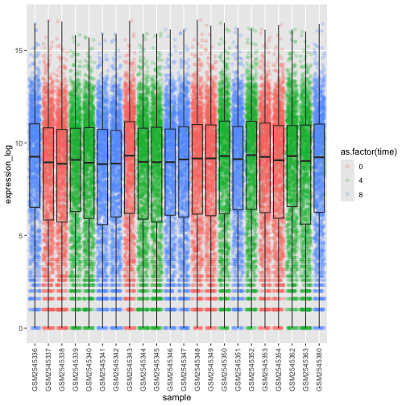
挑战
箱线图是有用的汇总图，但会掩盖分布的形状。例如，如果分布呈双峰分布，我们在箱线图中无法看到这一点。箱线图的另一种替代方案是小提琴图，它会绘制出形状（点的密度）。
- 将箱线图替换为小提琴图；参见
geom_violin()。根据时间使用参数fill填充小提琴图。
R
ggplot(data = rna,
mapping = aes(y = expression_log, x = sample)) +
geom_violin(aes(fill = as.factor(time))) +
theme(axis.text.x = element_text(angle = 90, hjust = 0.5, vjust = 0.5))

挑战
- 修改小提琴图，以
sex填充小提琴。
R
ggplot(data = rna,
mapping = aes(y = expression_log, x = sample)) +
geom_violin(aes(fill = sex)) +
theme(axis.text.x = element_text(angle = 90, hjust = 0.5, vjust = 0.5))

折线图
让我们计算这 10 个对比时间 8 与时间 0
时以2为底的对数倍数变化最大的基因，其每个感染时长的平均表达量。首先，我们需要选择这些基因，并创建一个包含这
10 个选定基因的 rna 子集
sub_rna，然后我们需要对数据进行分组，并计算每个组内的平均基因表达量：
R
rna_fc <- rna_fc |> arrange(desc(time_8_vs_0))
genes_selected <- rna_fc$gene[1:10]
sub_rna <- rna |>
filter(gene %in% genes_selected)
mean_exp_by_time <- sub_rna |>
group_by(gene,time) |>
summarize(mean_exp = mean(expression_log))
输出
`summarise()` has regrouped the output.
ℹ Summaries were computed grouped by gene and time.
ℹ Output is grouped by gene.
ℹ Use `summarise(.groups = "drop_last")` to silence this message.
ℹ Use `summarise(.by = c(gene, time))` for per-operation grouping
(`?dplyr::dplyr_by`) instead.R
mean_exp_by_time
输出
# A tibble: 30 × 3
# Groups: gene [10]
gene time mean_exp
<chr> <int> <dbl>
1 Acr 0 5.07
2 Acr 4 5.54
3 Acr 8 7.31
4 Aipl1 0 3.70
5 Aipl1 4 3.89
6 Aipl1 8 6.56
7 Bst1 0 3.20
8 Bst1 4 3.77
9 Bst1 8 5.22
10 Chil3 0 4.00
# ℹ 20 more rows我们可以绘制一张线图，将感染时长作为 x 轴，将平均表达量作为 y 轴：
R
ggplot(data = mean_exp_by_time, mapping = aes(x = time, y = mean_exp)) +
geom_line()

遗憾的是，这行不通，因为我们将所有基因的数据一起绘制了。我们需要通过修改
aesthetic 函数以包含 group = gene，来告诉 ggplot
为每个基因绘制一条线：
R
ggplot(data = mean_exp_by_time,
mapping = aes(x = time, y = mean_exp, group = gene)) +
geom_line()
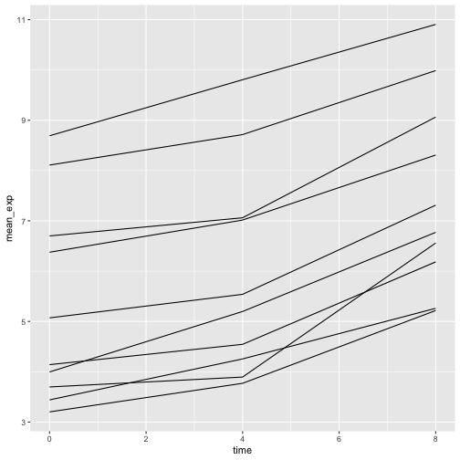
如果我们添加颜色，就能在图表中区分不同的基因（使用 color
还会自动对数据进行分组）：
R
ggplot(data = mean_exp_by_time,
mapping = aes(x = time, y = mean_exp, color = gene)) +
geom_line()

分面
ggplot2 有一种名为 faceting
的特殊技术，允许用户根据数据集中包含的因子将一个图表分割为多个（子）图表。这些不同的子图表继承相同的属性（轴限、刻度……），以便于直接比较。我们将利用这一技术，为每个基因绘制一张随时间变化的折线图：
R
ggplot(data = mean_exp_by_time,
mapping = aes(x = time, y = mean_exp)) + geom_line() +
facet_wrap(~ gene)

这里，各子图的 x 轴尺度保持一致，y 轴尺度也保持一致。你可以修改
scales 来改变这一默认行为，使每个子图的 y
轴采用各自的尺度：
R
ggplot(data = mean_exp_by_time,
mapping = aes(x = time, y = mean_exp)) +
geom_line() +
facet_wrap(~ gene, scales = "free_y")
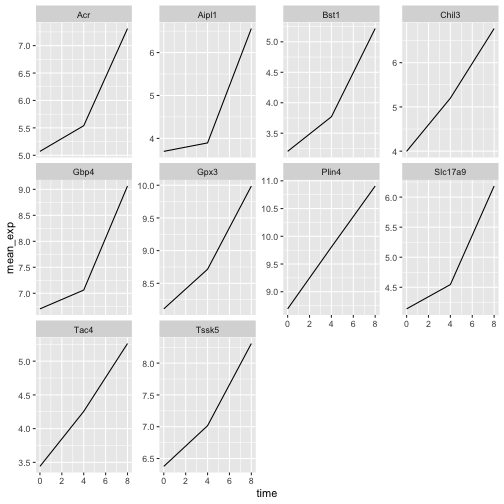
现在，我们想根据小鼠的性别来划分每个图表中的线条。为此，我们需要计算数据框中按
gene、time 和 sex
分组的平均表达量：
R
mean_exp_by_time_sex <- sub_rna |>
group_by(gene, time, sex) |>
summarize(mean_exp = mean(expression_log))
输出
`summarise()` has regrouped the output.
ℹ Summaries were computed grouped by gene, time, and sex.
ℹ Output is grouped by gene and time.
ℹ Use `summarise(.groups = "drop_last")` to silence this message.
ℹ Use `summarise(.by = c(gene, time, sex))` for per-operation grouping
(`?dplyr::dplyr_by`) instead.R
mean_exp_by_time_sex
输出
# A tibble: 60 × 4
# Groups: gene, time [30]
gene time sex mean_exp
<chr> <int> <chr> <dbl>
1 Acr 0 Female 5.13
2 Acr 0 Male 5.00
3 Acr 4 Female 5.93
4 Acr 4 Male 5.15
5 Acr 8 Female 7.27
6 Acr 8 Male 7.36
7 Aipl1 0 Female 3.67
8 Aipl1 0 Male 3.73
9 Aipl1 4 Female 4.07
10 Aipl1 4 Male 3.72
# ℹ 50 more rows现在我们可以通过
color（在单个图表中）进一步按性别进行划分，从而创建分面图：
R
ggplot(data = mean_exp_by_time_sex,
mapping = aes(x = time, y = mean_exp, color = sex)) +
geom_line() +
facet_wrap(~ gene, scales = "free_y")

通常，白色背景的图表在打印时更易于阅读。我们可以使用
theme_bw()
函数将背景设置为白色。此外，我们还可以移除网格：
R
ggplot(data = mean_exp_by_time_sex,
mapping = aes(x = time, y = mean_exp, color = sex)) +
geom_line() +
facet_wrap(~ gene, scales = "free_y") +
theme_bw() +
theme(panel.grid = element_blank())

挑战
运用刚才学到的知识，绘制一张图表，展示每条染色体的平均表达量在感染过程中如何变化。
R
mean_exp_by_chromosome <- rna |>
group_by(chromosome_name, time) |>
summarize(mean_exp = mean(expression_log))
输出
`summarise()` has regrouped the output.
ℹ Summaries were computed grouped by chromosome_name and time.
ℹ Output is grouped by chromosome_name.
ℹ Use `summarise(.groups = "drop_last")` to silence this message.
ℹ Use `summarise(.by = c(chromosome_name, time))` for per-operation grouping
(`?dplyr::dplyr_by`) instead.R
ggplot(data = mean_exp_by_chromosome, mapping = aes(x = time,
y = mean_exp)) +
geom_line() +
facet_wrap(~ chromosome_name, scales = "free_y")

facet_wrap
会将子图自动排列成若干行和列，以便整齐地放在一页上。另一方面，facet_grid
允许你通过公式表示法显式指定子图的行列布局（rows ~ columns；其中
.
可用作占位符，表示该方向不进行分面，因而只有一行或一列）。
让我们修改之前的图表，以比较雄性和雌性的平均基因表达随时间的变化情况：
R
# One column, facet by rows
ggplot(data = mean_exp_by_time_sex,
mapping = aes(x = time, y = mean_exp, color = gene)) +
geom_line() +
facet_grid(sex ~ .)
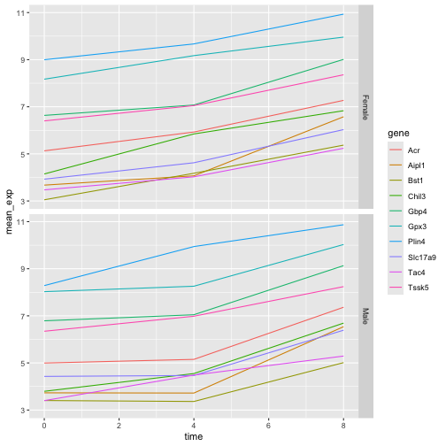
R
# One row, facet by column
ggplot(data = mean_exp_by_time_sex,
mapping = aes(x = time, y = mean_exp, color = gene)) +
geom_line() +
facet_grid(. ~ sex)

ggplot2 主题
除了将图表背景改为白色的 theme_bw()
之外，ggplot2
还提供了其他几种主题，可用于快速更改可视化效果的外观。完整的主题列表可在
https://ggplot2.tidyverse.org/reference/ggtheme.html
中查看。theme_minimal() 和 theme_light()
非常受欢迎，而 theme_void()
则可作为创建自定义主题的起点。
ggthemes
包提供了多种选项（包括 Excel 2003 主题）。ggplot2
扩展网站 提供了一份扩展 ggplot2
功能的包列表，其中包括额外的主题。
自定义
让我们回到那张按基因分面的图：它展示了平均表达量随时间的变化，并按性别着色。
请查看 ggplot2
速查表，并思考如何改进该图表。
现在，我们可以将轴名称更改为比“time”和“mean_exp”更具信息量的名称，并为图表添加标题：
R
ggplot(data = mean_exp_by_time_sex,
mapping = aes(x = time, y = mean_exp, color = sex)) +
geom_line() +
facet_wrap(~ gene, scales = "free_y") +
theme_bw() +
theme(panel.grid = element_blank()) +
labs(title = "Mean gene expression by duration of the infection",
x = "Duration of the infection (in days)",
y = "Mean gene expression")

轴上的名称更具信息量，但可以通过增大字体大小来提高可读性：
R
ggplot(data = mean_exp_by_time_sex,
mapping = aes(x = time, y = mean_exp, color = sex)) +
geom_line() +
facet_wrap(~ gene, scales = "free_y") +
theme_bw() +
theme(panel.grid = element_blank()) +
labs(title = "Mean gene expression by duration of the infection",
x = "Duration of the infection (in days)",
y = "Mean gene expression") +
theme(text = element_text(size = 16))

请注意，您也可以更改图表的字体。如果您使用的是 Windows，可能需要安装
extrafont
包。
我们还可以进一步自定义 x 轴和 y
轴文本的颜色、网格颜色等。例如，我们还可以通过将
legend.position 设置为 "top"
将图例移至顶部。
R
ggplot(data = mean_exp_by_time_sex,
mapping = aes(x = time, y = mean_exp, color = sex)) +
geom_line() +
facet_wrap(~ gene, scales = "free_y") +
theme_bw() +
theme(panel.grid = element_blank()) +
labs(title = "Mean gene expression by duration of the infection",
x = "Duration of the infection (in days)",
y = "Mean gene expression") +
theme(text = element_text(size = 16),
axis.text.x = element_text(colour = "royalblue4", size = 12),
axis.text.y = element_text(colour = "royalblue4", size = 12),
panel.grid = element_line(colour="lightsteelblue1"),
legend.position = "top")
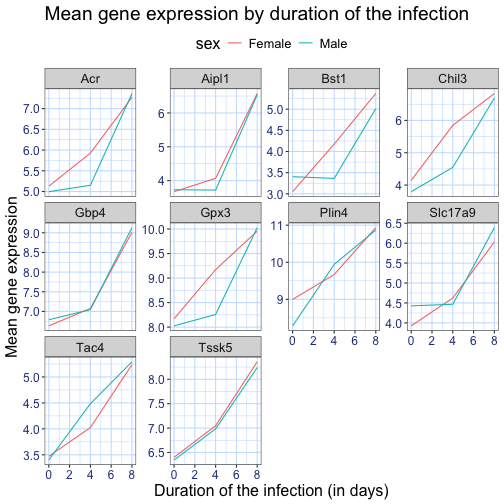
如果你更喜欢自己做出的修改而非默认主题，可以将它们保存为对象，以便轻松应用于你可能创建的其他图表。以下是一个使用我们之前创建的直方图的示例。
R
blue_theme <- theme(axis.text.x = element_text(colour = "royalblue4",
size = 12),
axis.text.y = element_text(colour = "royalblue4",
size = 12),
text = element_text(size = 16),
panel.grid = element_line(colour="lightsteelblue1"))
ggplot(rna, aes(x = expression_log)) +
geom_histogram(bins = 20) +
blue_theme
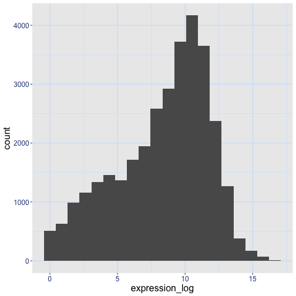
挑战
有了所有这些信息，请再花五分钟时间，要么改进本练习中生成的其中一张图表，要么创建一张精美的图表。可以参考
RStudio 的 ggplot2
速查表 寻找灵感。以下是一些建议：
- 看看能否更改线条的粗细。
- 你能找到修改图例名称的方法吗？那么其标签呢？（提示：寻找以
scale_开头的 ggplot 函数） - 尝试使用不同的配色方案，或手动指定线条的颜色（参见 https://www.cookbook-r.com/Graphs/Colors_(ggplot2)/）。
例如，基于这张图：
R
ggplot(data = mean_exp_by_time_sex,
mapping = aes(x = time, y = mean_exp, color = sex)) +
geom_line() +
facet_wrap(~ gene, scales = "free_y") +
theme_bw() +
theme(panel.grid = element_blank())

我们可以通过以下方式对其进行自定义：
R
# change the thickness of the lines
ggplot(data = mean_exp_by_time_sex,
mapping = aes(x = time, y = mean_exp, color = sex)) +
geom_line(size=1.5) +
facet_wrap(~ gene, scales = "free_y") +
theme_bw() +
theme(panel.grid = element_blank())
警告
Warning: Using `size` aesthetic for lines was deprecated in ggplot2 3.4.0.
ℹ Please use `linewidth` instead.
This warning is displayed once per session.
Call `lifecycle::last_lifecycle_warnings()` to see where this warning was
generated.
R
# change the name of the legend and the labels
ggplot(data = mean_exp_by_time_sex,
mapping = aes(x = time, y = mean_exp, color = sex)) +
geom_line() +
facet_wrap(~ gene, scales = "free_y") +
theme_bw() +
theme(panel.grid = element_blank()) +
scale_color_discrete(name = "Gender", labels = c("F", "M"))
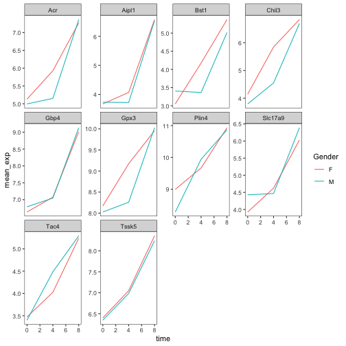
R
# using a different color palette
ggplot(data = mean_exp_by_time_sex,
mapping = aes(x = time, y = mean_exp, color = sex)) +
geom_line() +
facet_wrap(~ gene, scales = "free_y") +
theme_bw() +
theme(panel.grid = element_blank()) +
scale_color_brewer(name = "Gender", labels = c("F", "M"), palette = "Dark2")
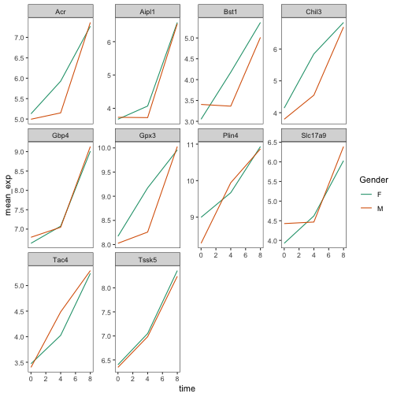
R
# manually specifying the colors
ggplot(data = mean_exp_by_time_sex,
mapping = aes(x = time, y = mean_exp, color = sex)) +
geom_line() +
facet_wrap(~ gene, scales = "free_y") +
theme_bw() +
theme(panel.grid = element_blank()) +
scale_color_manual(name = "Gender", labels = c("F", "M"),
values = c("royalblue", "deeppink"))

合成图表
Faceting 是将一个图表拆分为多个子图的绝佳工具，但有时你可能希望生成一个包含多个独立图表的单一图表，即基于不同变量甚至不同数据框的图表。
让我们先创建这两个想要并排显示的图表：
第一张图统计每条染色体上不同基因的数量。我们首先需要重新排列
chromosome_name
的因子水平，并对每条染色体上的基因去重。此外，我们还将 y 轴改为 log10
尺度，以提高可读性。
R
rna$chromosome_name <- factor(rna$chromosome_name,
levels = c(1:19,"X","Y"))
count_gene_chromosome <- rna |>
select(chromosome_name, gene) |>
distinct() |> ggplot() +
geom_bar(aes(x = chromosome_name), fill = "seagreen",
position = "dodge", stat = "count") +
labs(y = "log10(n genes)", x = "chromosome") +
scale_y_log10()
count_gene_chromosome
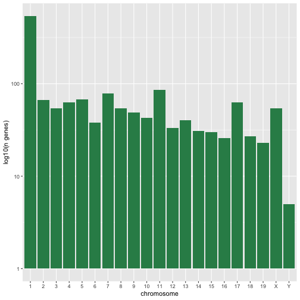
下面，我们还通过将 legend.position 设置为
"none" 来完全移除图例。
R
exp_boxplot_sex <- ggplot(rna, aes(y=expression_log, x = as.factor(time),
color=sex)) +
geom_boxplot(alpha = 0) +
labs(y = "Mean gene exp",
x = "time") + theme(legend.position = "none")
exp_boxplot_sex
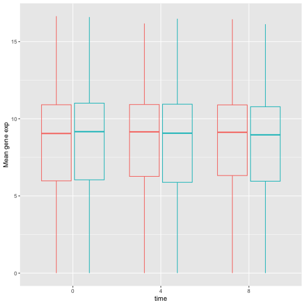
patchwork
包提供了一种简洁的方法，利用 +
来组合图表（通常为并排排列）。具体而言，|
将图表并排排列，而 / 则将它们上下排列。
R
install.packages("patchwork")
R
library("patchwork")
count_gene_chromosome + exp_boxplot_sex

R
## or count_gene_chromosome | exp_boxplot_sex
R
count_gene_chromosome / exp_boxplot_sex
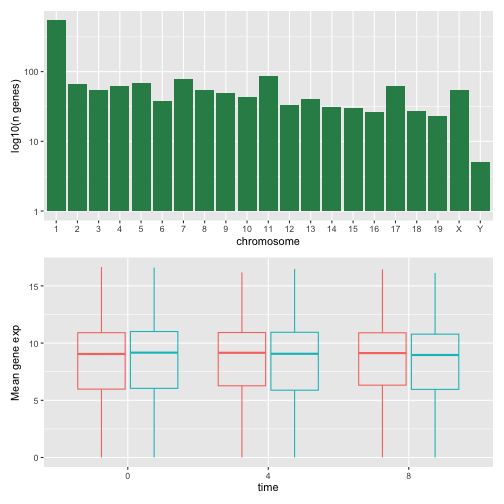
我们可以进一步使用 plot_layout
来控制最终合成图的布局，从而创建更复杂的布局：
R
count_gene_chromosome + exp_boxplot_sex + plot_layout(ncol = 1)

R
count_gene_chromosome +
(count_gene_chromosome + exp_boxplot_sex) +
exp_boxplot_sex +
plot_layout(ncol = 1)
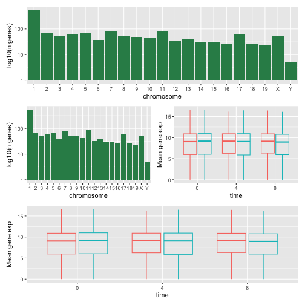
最后一个图表也可以使用 | 和 /
组件来创建：
R
count_gene_chromosome /
(count_gene_chromosome | exp_boxplot_sex) /
exp_boxplot_sex

欲了解更多关于 patchwork 的信息，请访问其 网页 或观看此 视频。
另一种选择是 gridExtra 包，它允许使用
grid.arrange() 将独立的 ggplot 合并为单个图表：
R
install.packages("gridExtra")
R
library("gridExtra")
grid.arrange(count_gene_chromosome, exp_boxplot_sex, ncol = 2)
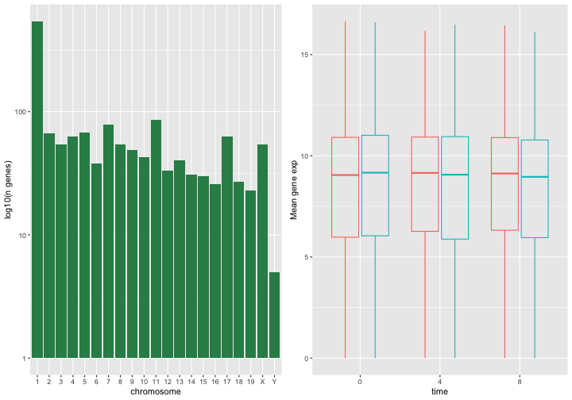
除了用于简单布局的 ncol 和 nrow
参数外，还提供了用于构建更复杂布局的工具。
导出图表
创建图表后，您可以将其保存为您喜欢的格式的文件。RStudio 中 Plot 窗格的“Export”选项卡会以低分辨率保存图表，这不被许多期刊接受，且在海报展示时无法良好地缩放。
相反，请使用 ggsave()
函数，通过调整相应的参数（width、height 和
dpi），即可轻松更改图表的尺寸和分辨率。
请确保您的工作目录中包含 fig_output/ 文件夹。
R
my_plot <- ggplot(data = mean_exp_by_time_sex,
mapping = aes(x = time, y = mean_exp, color = sex)) +
geom_line() +
facet_wrap(~ gene, scales = "free_y") +
labs(title = "Mean gene expression by duration of the infection",
x = "Duration of the infection (in days)",
y = "Mean gene expression") +
guides(color=guide_legend(title="Gender")) +
theme_bw() +
theme(axis.text.x = element_text(colour = "royalblue4", size = 12),
axis.text.y = element_text(colour = "royalblue4", size = 12),
text = element_text(size = 16),
panel.grid = element_line(colour="lightsteelblue1"),
legend.position = "top")
ggsave("fig_output/mean_exp_by_time_sex.png", my_plot, width = 15,
height = 10)
# This also works for grid.arrange() plots
combo_plot <- grid.arrange(count_gene_chromosome, exp_boxplot_sex,
ncol = 2, widths = c(4, 6))
ggsave("fig_output/combo_plot_chromosome_sex.png", combo_plot,
width = 10, dpi = 300)
注：参数 width 和 height
还会决定保存后图表中的字体大小。
其他可视化包
ggplot2 是一个非常强大的包，与我们的 整洁数据
和 整洁工具 流水线非常契合。R
中还有其他不容忽视的可视化包。
基础图形库
R 自带的默认图形系统（通常称为 base R
graphics）简单且快速。它基于
画家或画布模型，其中不同的输出直接叠加在一起（见下图）。这与
ggplot2（以及下文介绍的
lattice）有着本质的区别，后者返回专门的对象，可在屏幕或文件中渲染，甚至可以更新。
R
par(mfrow = c(1, 3))
plot(1:20, main = "First layer, produced with plot(1:20)")
plot(1:20, main = "A horizontal red line, added with abline(h = 10)")
abline(h = 10, col = "red")
plot(1:20, main = "A rectangle, added with rect(5, 5, 15, 15)")
abline(h = 10, col = "red")
rect(5, 5, 15, 15, lwd = 3)
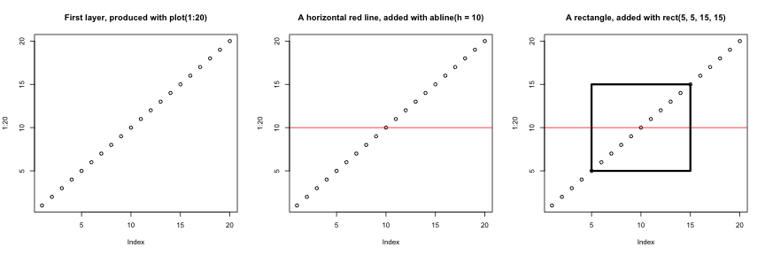
另一个主要区别在于，基础图形库的绘图函数会尝试根据输入类型采取正确的处理方式，即它们会根据输入的类别来调整行为。这与
ggplot2
的做法又大相径庭，后者仅接受数据框作为输入，且要求绘图必须逐步构建。
R
par(mfrow = c(2, 2))
boxplot(rnorm(100),
main = "Boxplot of rnorm(100)")
boxplot(matrix(rnorm(100), ncol = 10),
main = "Boxplot of matrix(rnorm(100), ncol = 10)")
hist(rnorm(100))
hist(matrix(rnorm(100), ncol = 10))
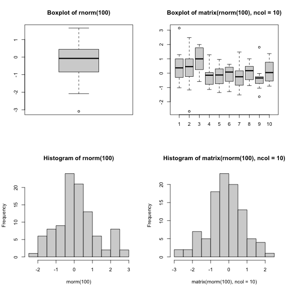
基础图形库的开箱即用方式对于简单的标准图表非常高效，只需一行代码和单个函数（如
plot、hist 或 boxplot
等）即可快速生成。然而，默认设置并不总是最理想，且图表的调优——尤其是当图表变得复杂时（例如为了生成分面）——可能会变得冗长且繁琐。
lattice 包
lattice 包与 ggplot2
类似，均以数据框作为输入，返回图形对象并支持分面。然而，lattice
并非基于图形语法，且其接口更为复杂。
lattice 包的良好参考资料是 Deepayan (2008).
- R 中的可视化
Content from 后续步骤
最后更新于 2026-11-07 | 编辑此页
预计用时： 90 分钟
概述
问题
- 什么是
SummarizedExperiment？ - 什么是 Bioconductor？
学习目标
- 介绍 Bioconductor 项目。
- 介绍数据容器的概念。
- 概述在组学分析中广泛使用的
SummarizedExperiment。
后续步骤
生物信息学中的数据通常较为复杂。为了应对这一问题，开发者定义了专门的数据容器（称为类），以匹配他们需要处理的数据属性。
这一方面是 Bioconductor1 项目的核心，该项目在各个包中使用相同的 核心数据基础设施。这无疑促成了 Bioconductor 的成功。Bioconductor 包开发者建议利用现有基础设施，以确保整个项目的一致性、互操作性和稳定性。
为了演示这类组学数据容器，我们将介绍
SummarizedExperiment 类。
SummarizedExperiment
下图展示了 SummarizedExperiment 类的结构。

SummarizedExperiment 类的对象包含：
一个（或多个）测定，包含定量组学数据（表达数据），以矩阵类对象形式存储。特征（基因、转录本、蛋白质……）沿行定义，样本沿列定义。
一个包含样本协变量的 样本元数据 槽，以数据框形式存储。该表的行代表样本（行与表达数据的列完全匹配）。
一个包含特征协变量的特征元数据槽，以数据框形式存储。该数据框的行与表达数据的行完全一致。
SummarizedExperiment
的协调特性保证了在数据处理过程中，不同槽的维度始终保持一致（即表达数据中的列与样本元数据中的行，以及表达数据中的行与特征元数据中的行）。例如，如果我们需要从测定中剔除一个样本，该样本将在同一操作中自动从样本元数据中移除。
元数据槽可以增加额外的协变量（列），而不会影响其他结构。
创建 SummarizedExperiment
为了创建 SummarizedExperiment，我们将从 CSV
文件中创建各个组成部分，即计数矩阵、样本和基因元数据。这通常是 RNA-Seq
数据的提供方式（在原始数据经过处理之后）。
-
表达矩阵：我们加载计数矩阵，并指定第一列包含行/基因名称，然后将
data.frame转换为matrix。您可以点击此链接下载。
R
count_matrix <- read.csv("data/count_matrix.csv",
row.names = 1) |>
as.matrix()
count_matrix[1:5, ]
输出
GSM2545336 GSM2545337 GSM2545338 GSM2545339 GSM2545340 GSM2545341
Asl 1170 361 400 586 626 988
Apod 36194 10347 9173 10620 13021 29594
Cyp2d22 4060 1616 1603 1901 2171 3349
Klk6 287 629 641 578 448 195
Fcrls 85 233 244 237 180 38
GSM2545342 GSM2545343 GSM2545344 GSM2545345 GSM2545346 GSM2545347
Asl 836 535 586 597 938 1035
Apod 24959 13668 13230 15868 27769 34301
Cyp2d22 3122 2008 2254 2277 2985 3452
Klk6 186 1101 537 567 327 233
Fcrls 68 375 199 177 89 67
GSM2545348 GSM2545349 GSM2545350 GSM2545351 GSM2545352 GSM2545353
Asl 494 481 666 937 803 541
Apod 11258 11812 15816 29242 20415 13682
Cyp2d22 1883 2014 2417 3678 2920 2216
Klk6 742 881 828 250 798 710
Fcrls 300 233 231 81 303 285
GSM2545354 GSM2545362 GSM2545363 GSM2545380
Asl 473 748 576 1192
Apod 11088 15916 11166 38148
Cyp2d22 1821 2842 2011 4019
Klk6 894 501 598 259
Fcrls 248 179 184 68R
dim(count_matrix)
输出
[1] 1474 22- 描述样本的表格，可在此链接获取。
R
sample_metadata <- read.csv("data/sample_metadata.csv")
sample_metadata
输出
sample organism age sex infection strain time tissue mouse
1 GSM2545336 Mus musculus 8 Female InfluenzaA C57BL/6 8 Cerebellum 14
2 GSM2545337 Mus musculus 8 Female NonInfected C57BL/6 0 Cerebellum 9
3 GSM2545338 Mus musculus 8 Female NonInfected C57BL/6 0 Cerebellum 10
4 GSM2545339 Mus musculus 8 Female InfluenzaA C57BL/6 4 Cerebellum 15
5 GSM2545340 Mus musculus 8 Male InfluenzaA C57BL/6 4 Cerebellum 18
6 GSM2545341 Mus musculus 8 Male InfluenzaA C57BL/6 8 Cerebellum 6
7 GSM2545342 Mus musculus 8 Female InfluenzaA C57BL/6 8 Cerebellum 5
8 GSM2545343 Mus musculus 8 Male NonInfected C57BL/6 0 Cerebellum 11
9 GSM2545344 Mus musculus 8 Female InfluenzaA C57BL/6 4 Cerebellum 22
10 GSM2545345 Mus musculus 8 Male InfluenzaA C57BL/6 4 Cerebellum 13
11 GSM2545346 Mus musculus 8 Male InfluenzaA C57BL/6 8 Cerebellum 23
12 GSM2545347 Mus musculus 8 Male InfluenzaA C57BL/6 8 Cerebellum 24
13 GSM2545348 Mus musculus 8 Female NonInfected C57BL/6 0 Cerebellum 8
14 GSM2545349 Mus musculus 8 Male NonInfected C57BL/6 0 Cerebellum 7
15 GSM2545350 Mus musculus 8 Male InfluenzaA C57BL/6 4 Cerebellum 1
16 GSM2545351 Mus musculus 8 Female InfluenzaA C57BL/6 8 Cerebellum 16
17 GSM2545352 Mus musculus 8 Female InfluenzaA C57BL/6 4 Cerebellum 21
18 GSM2545353 Mus musculus 8 Female NonInfected C57BL/6 0 Cerebellum 4
19 GSM2545354 Mus musculus 8 Male NonInfected C57BL/6 0 Cerebellum 2
20 GSM2545362 Mus musculus 8 Female InfluenzaA C57BL/6 4 Cerebellum 20
21 GSM2545363 Mus musculus 8 Male InfluenzaA C57BL/6 4 Cerebellum 12
22 GSM2545380 Mus musculus 8 Female InfluenzaA C57BL/6 8 Cerebellum 19R
dim(sample_metadata)
输出
[1] 22 9- 描述基因的表格，可在此链接获取。
R
gene_metadata <- read.csv("data/gene_metadata.csv")
gene_metadata[1:10, 1:4]
输出
gene ENTREZID
1 Asl 109900
2 Apod 11815
3 Cyp2d22 56448
4 Klk6 19144
5 Fcrls 80891
6 Slc2a4 20528
7 Exd2 97827
8 Gjc2 118454
9 Plp1 18823
10 Gnb4 14696
product
1 argininosuccinate lyase, transcript variant X1
2 apolipoprotein D, transcript variant 3
3 cytochrome P450, family 2, subfamily d, polypeptide 22, transcript variant 2
4 kallikrein related-peptidase 6, transcript variant 2
5 Fc receptor-like S, scavenger receptor, transcript variant X1
6 solute carrier family 2 (facilitated glucose transporter), member 4
7 exonuclease 3'-5' domain containing 2
8 gap junction protein, gamma 2, transcript variant 1
9 proteolipid protein (myelin) 1, transcript variant 1
10 guanine nucleotide binding protein (G protein), beta 4, transcript variant X2
ensembl_gene_id
1 ENSMUSG00000025533
2 ENSMUSG00000022548
3 ENSMUSG00000061740
4 ENSMUSG00000050063
5 ENSMUSG00000015852
6 ENSMUSG00000018566
7 ENSMUSG00000032705
8 ENSMUSG00000043448
9 ENSMUSG00000031425
10 ENSMUSG00000027669R
dim(gene_metadata)
输出
[1] 1474 9我们将根据这些表格创建一个 SummarizedExperiment：
将用作
assay的计数矩阵描述样本的表将用作 样本元数据 槽
描述基因的表将用作 特征元数据 槽
为此，我们可以使用 SummarizedExperiment
构造函数将不同的部分组合在一起：
R
## BiocManager::install("SummarizedExperiment")
library("SummarizedExperiment")
首先，我们确保计数矩阵和样本注释中的样本顺序一致，且计数矩阵和基因注释中的基因顺序也一致。
R
stopifnot(rownames(count_matrix) == gene_metadata$gene)
stopifnot(colnames(count_matrix) == sample_metadata$sample)
R
se <- SummarizedExperiment(assays = list(counts = count_matrix),
colData = sample_metadata,
rowData = gene_metadata)
se
输出
class: SummarizedExperiment
dim: 1474 22
metadata(0):
assays(1): counts
rownames(1474): Asl Apod ... Lmx1a Pbx1
rowData names(9): gene ENTREZID ... phenotype_description
hsapiens_homolog_associated_gene_name
colnames(22): GSM2545336 GSM2545337 ... GSM2545363 GSM2545380
colData names(9): sample organism ... tissue mouse保存数据
将数据导出到电子表格（如我们在之前的章节中所做的那样）存在若干局限性，例如第一章中所述的问题（小数点分隔符可能与
, 和 .
不一致，且缺乏变量类型定义）。此外，将数据导出到电子表格仅适用于数据框和矩阵等矩形数据。
一种更通用的数据保存方式是使用 saveRDS
函数，该方法专用于
R，且保证在任何操作系统上均能正常运行。这样保存对象将在磁盘上生成二进制表示（此处使用
rds 文件扩展名），随后可以使用 readRDS
函数将其重新加载到 R 中。
R
saveRDS(se, file = "data_output/se.rds")
rm(se)
se <- readRDS("data_output/se.rds")
head(se)
总之，对于需要在 R 中保存并再次加载的数据，使用 saveRDS
和 readRDS 进行保存和加载是首选方法。如果需要与不使用 R
的人员共享表格数据，则导出为基于文本的电子表格是一个不错的替代方案。
利用这种数据结构，我们可以使用 assay
函数访问表达矩阵：
R
head(assay(se))
输出
GSM2545336 GSM2545337 GSM2545338 GSM2545339 GSM2545340 GSM2545341
Asl 1170 361 400 586 626 988
Apod 36194 10347 9173 10620 13021 29594
Cyp2d22 4060 1616 1603 1901 2171 3349
Klk6 287 629 641 578 448 195
Fcrls 85 233 244 237 180 38
Slc2a4 782 231 248 265 313 786
GSM2545342 GSM2545343 GSM2545344 GSM2545345 GSM2545346 GSM2545347
Asl 836 535 586 597 938 1035
Apod 24959 13668 13230 15868 27769 34301
Cyp2d22 3122 2008 2254 2277 2985 3452
Klk6 186 1101 537 567 327 233
Fcrls 68 375 199 177 89 67
Slc2a4 528 249 266 357 654 693
GSM2545348 GSM2545349 GSM2545350 GSM2545351 GSM2545352 GSM2545353
Asl 494 481 666 937 803 541
Apod 11258 11812 15816 29242 20415 13682
Cyp2d22 1883 2014 2417 3678 2920 2216
Klk6 742 881 828 250 798 710
Fcrls 300 233 231 81 303 285
Slc2a4 271 304 349 715 513 320
GSM2545354 GSM2545362 GSM2545363 GSM2545380
Asl 473 748 576 1192
Apod 11088 15916 11166 38148
Cyp2d22 1821 2842 2011 4019
Klk6 894 501 598 259
Fcrls 248 179 184 68
Slc2a4 248 350 317 796R
dim(assay(se))
输出
[1] 1474 22我们可以使用 colData 函数访问样本元数据：
R
colData(se)
输出
DataFrame with 22 rows and 9 columns
sample organism age sex infection
<character> <character> <integer> <character> <character>
GSM2545336 GSM2545336 Mus musculus 8 Female InfluenzaA
GSM2545337 GSM2545337 Mus musculus 8 Female NonInfected
GSM2545338 GSM2545338 Mus musculus 8 Female NonInfected
GSM2545339 GSM2545339 Mus musculus 8 Female InfluenzaA
GSM2545340 GSM2545340 Mus musculus 8 Male InfluenzaA
... ... ... ... ... ...
GSM2545353 GSM2545353 Mus musculus 8 Female NonInfected
GSM2545354 GSM2545354 Mus musculus 8 Male NonInfected
GSM2545362 GSM2545362 Mus musculus 8 Female InfluenzaA
GSM2545363 GSM2545363 Mus musculus 8 Male InfluenzaA
GSM2545380 GSM2545380 Mus musculus 8 Female InfluenzaA
strain time tissue mouse
<character> <integer> <character> <integer>
GSM2545336 C57BL/6 8 Cerebellum 14
GSM2545337 C57BL/6 0 Cerebellum 9
GSM2545338 C57BL/6 0 Cerebellum 10
GSM2545339 C57BL/6 4 Cerebellum 15
GSM2545340 C57BL/6 4 Cerebellum 18
... ... ... ... ...
GSM2545353 C57BL/6 0 Cerebellum 4
GSM2545354 C57BL/6 0 Cerebellum 2
GSM2545362 C57BL/6 4 Cerebellum 20
GSM2545363 C57BL/6 4 Cerebellum 12
GSM2545380 C57BL/6 8 Cerebellum 19R
dim(colData(se))
输出
[1] 22 9我们还可以使用 rowData 函数访问特征元数据：
R
head(rowData(se))
输出
DataFrame with 6 rows and 9 columns
gene ENTREZID product ensembl_gene_id
<character> <integer> <character> <character>
Asl Asl 109900 argininosuccinate ly.. ENSMUSG00000025533
Apod Apod 11815 apolipoprotein D, tr.. ENSMUSG00000022548
Cyp2d22 Cyp2d22 56448 cytochrome P450, fam.. ENSMUSG00000061740
Klk6 Klk6 19144 kallikrein related-p.. ENSMUSG00000050063
Fcrls Fcrls 80891 Fc receptor-like S, .. ENSMUSG00000015852
Slc2a4 Slc2a4 20528 solute carrier famil.. ENSMUSG00000018566
external_synonym chromosome_name gene_biotype phenotype_description
<character> <character> <character> <character>
Asl 2510006M18Rik 5 protein_coding abnormal circulating..
Apod NA 16 protein_coding abnormal lipid homeo..
Cyp2d22 2D22 15 protein_coding abnormal skin morpho..
Klk6 Bssp 7 protein_coding abnormal cytokine le..
Fcrls 2810439C17Rik 3 protein_coding decreased CD8-positi..
Slc2a4 Glut-4 11 protein_coding abnormal circulating..
hsapiens_homolog_associated_gene_name
<character>
Asl ASL
Apod APOD
Cyp2d22 CYP2D6
Klk6 KLK6
Fcrls FCRL2
Slc2a4 SLC2A4R
dim(rowData(se))
输出
[1] 1474 9对 SummarizedExperiment 进行子集操作
SummarizedExperiment 可以像数据框一样，使用数值、字符或逻辑向量进行子集提取。
下面，我们创建一个 SummarizedExperiment 类的新实例，其中仅包含前 3 个样本的前 5 个特征。
R
se1 <- se[1:5, 1:3]
se1
输出
class: SummarizedExperiment
dim: 5 3
metadata(0):
assays(1): counts
rownames(5): Asl Apod Cyp2d22 Klk6 Fcrls
rowData names(9): gene ENTREZID ... phenotype_description
hsapiens_homolog_associated_gene_name
colnames(3): GSM2545336 GSM2545337 GSM2545338
colData names(9): sample organism ... tissue mouseR
colData(se1)
输出
DataFrame with 3 rows and 9 columns
sample organism age sex infection
<character> <character> <integer> <character> <character>
GSM2545336 GSM2545336 Mus musculus 8 Female InfluenzaA
GSM2545337 GSM2545337 Mus musculus 8 Female NonInfected
GSM2545338 GSM2545338 Mus musculus 8 Female NonInfected
strain time tissue mouse
<character> <integer> <character> <integer>
GSM2545336 C57BL/6 8 Cerebellum 14
GSM2545337 C57BL/6 0 Cerebellum 9
GSM2545338 C57BL/6 0 Cerebellum 10R
rowData(se1)
输出
DataFrame with 5 rows and 9 columns
gene ENTREZID product ensembl_gene_id
<character> <integer> <character> <character>
Asl Asl 109900 argininosuccinate ly.. ENSMUSG00000025533
Apod Apod 11815 apolipoprotein D, tr.. ENSMUSG00000022548
Cyp2d22 Cyp2d22 56448 cytochrome P450, fam.. ENSMUSG00000061740
Klk6 Klk6 19144 kallikrein related-p.. ENSMUSG00000050063
Fcrls Fcrls 80891 Fc receptor-like S, .. ENSMUSG00000015852
external_synonym chromosome_name gene_biotype phenotype_description
<character> <character> <character> <character>
Asl 2510006M18Rik 5 protein_coding abnormal circulating..
Apod NA 16 protein_coding abnormal lipid homeo..
Cyp2d22 2D22 15 protein_coding abnormal skin morpho..
Klk6 Bssp 7 protein_coding abnormal cytokine le..
Fcrls 2810439C17Rik 3 protein_coding decreased CD8-positi..
hsapiens_homolog_associated_gene_name
<character>
Asl ASL
Apod APOD
Cyp2d22 CYP2D6
Klk6 KLK6
Fcrls FCRL2我们还可以使用 colData()
函数根据样本元数据进行筛选，或使用 rowData()
函数根据特征元数据进行筛选。例如，这里我们仅保留 miRNA
和未感染样本：
R
se1 <- se[rowData(se)$gene_biotype == "miRNA",
colData(se)$infection == "NonInfected"]
se1
输出
class: SummarizedExperiment
dim: 7 7
metadata(0):
assays(1): counts
rownames(7): Mir1901 Mir378a ... Mir128-1 Mir7682
rowData names(9): gene ENTREZID ... phenotype_description
hsapiens_homolog_associated_gene_name
colnames(7): GSM2545337 GSM2545338 ... GSM2545353 GSM2545354
colData names(9): sample organism ... tissue mouseR
assay(se1)
输出
GSM2545337 GSM2545338 GSM2545343 GSM2545348 GSM2545349 GSM2545353
Mir1901 45 44 74 55 68 33
Mir378a 11 7 9 4 12 4
Mir133b 4 6 5 4 6 7
Mir30c-2 10 6 16 12 8 17
Mir149 1 2 0 0 0 0
Mir128-1 4 1 2 2 1 2
Mir7682 2 0 4 1 3 5
GSM2545354
Mir1901 60
Mir378a 8
Mir133b 3
Mir30c-2 15
Mir149 2
Mir128-1 1
Mir7682 5R
colData(se1)
输出
DataFrame with 7 rows and 9 columns
sample organism age sex infection
<character> <character> <integer> <character> <character>
GSM2545337 GSM2545337 Mus musculus 8 Female NonInfected
GSM2545338 GSM2545338 Mus musculus 8 Female NonInfected
GSM2545343 GSM2545343 Mus musculus 8 Male NonInfected
GSM2545348 GSM2545348 Mus musculus 8 Female NonInfected
GSM2545349 GSM2545349 Mus musculus 8 Male NonInfected
GSM2545353 GSM2545353 Mus musculus 8 Female NonInfected
GSM2545354 GSM2545354 Mus musculus 8 Male NonInfected
strain time tissue mouse
<character> <integer> <character> <integer>
GSM2545337 C57BL/6 0 Cerebellum 9
GSM2545338 C57BL/6 0 Cerebellum 10
GSM2545343 C57BL/6 0 Cerebellum 11
GSM2545348 C57BL/6 0 Cerebellum 8
GSM2545349 C57BL/6 0 Cerebellum 7
GSM2545353 C57BL/6 0 Cerebellum 4
GSM2545354 C57BL/6 0 Cerebellum 2R
rowData(se1)
输出
DataFrame with 7 rows and 9 columns
gene ENTREZID product ensembl_gene_id
<character> <integer> <character> <character>
Mir1901 Mir1901 100316686 microRNA 1901 ENSMUSG00000084565
Mir378a Mir378a 723889 microRNA 378a ENSMUSG00000105200
Mir133b Mir133b 723817 microRNA 133b ENSMUSG00000065480
Mir30c-2 Mir30c-2 723964 microRNA 30c-2 ENSMUSG00000065567
Mir149 Mir149 387167 microRNA 149 ENSMUSG00000065470
Mir128-1 Mir128-1 387147 microRNA 128-1 ENSMUSG00000065520
Mir7682 Mir7682 102466847 microRNA 7682 ENSMUSG00000106406
external_synonym chromosome_name gene_biotype phenotype_description
<character> <character> <character> <character>
Mir1901 Mirn1901 18 miRNA NA
Mir378a Mirn378 18 miRNA abnormal mitochondri..
Mir133b mir 133b 1 miRNA no abnormal phenotyp..
Mir30c-2 mir 30c-2 1 miRNA NA
Mir149 Mirn149 1 miRNA increased circulatin..
Mir128-1 Mirn128 1 miRNA no abnormal phenotyp..
Mir7682 mmu-mir-7682 1 miRNA NA
hsapiens_homolog_associated_gene_name
<character>
Mir1901 NA
Mir378a MIR378A
Mir133b MIR133B
Mir30c-2 MIR30C2
Mir149 NA
Mir128-1 MIR128-1
Mir7682 NA挑战
提取时间点 0 和时间点 8 中前3个基因的基因表达水平。
R
assay(se)[1:3, colData(se)$time != 4]
输出
GSM2545336 GSM2545337 GSM2545338 GSM2545341 GSM2545342 GSM2545343
Asl 1170 361 400 988 836 535
Apod 36194 10347 9173 29594 24959 13668
Cyp2d22 4060 1616 1603 3349 3122 2008
GSM2545346 GSM2545347 GSM2545348 GSM2545349 GSM2545351 GSM2545353
Asl 938 1035 494 481 937 541
Apod 27769 34301 11258 11812 29242 13682
Cyp2d22 2985 3452 1883 2014 3678 2216
GSM2545354 GSM2545380
Asl 473 1192
Apod 11088 38148
Cyp2d22 1821 4019R
# Equivalent to
assay(se)[1:3, colData(se)$time == 0 | colData(se)$time == 8]
输出
GSM2545336 GSM2545337 GSM2545338 GSM2545341 GSM2545342 GSM2545343
Asl 1170 361 400 988 836 535
Apod 36194 10347 9173 29594 24959 13668
Cyp2d22 4060 1616 1603 3349 3122 2008
GSM2545346 GSM2545347 GSM2545348 GSM2545349 GSM2545351 GSM2545353
Asl 938 1035 494 481 937 541
Apod 27769 34301 11258 11812 29242 13682
Cyp2d22 2985 3452 1883 2014 3678 2216
GSM2545354 GSM2545380
Asl 473 1192
Apod 11088 38148
Cyp2d22 1821 4019挑战
验证使用长格式 rna 表格是否能得到相同的值。
R
rna |>
filter(gene %in% c("Asl", "Apod", "Cyd2d22")) |>
filter(time != 4) |>
select(expression)
输出
# A tibble: 28 × 1
expression
<dbl>
1 1170
2 36194
3 361
4 10347
5 400
6 9173
7 988
8 29594
9 836
10 24959
# ℹ 18 more rows长表和 SummarizedExperiment
包含相同的信息，但结构有所不同。两种方法各有优势：前者适用于
tidyverse
包，而后者则是许多生物信息学和统计处理步骤的首选结构。例如，使用
DESeq2 包进行的典型 RNA-Seq 分析。
向元数据添加变量
我们还可以向元数据中添加信息。假设你想添加样本采集中心的信息……
R
colData(se)$center <- rep("University of Illinois", nrow(colData(se)))
colData(se)
输出
DataFrame with 22 rows and 10 columns
sample organism age sex infection
<character> <character> <integer> <character> <character>
GSM2545336 GSM2545336 Mus musculus 8 Female InfluenzaA
GSM2545337 GSM2545337 Mus musculus 8 Female NonInfected
GSM2545338 GSM2545338 Mus musculus 8 Female NonInfected
GSM2545339 GSM2545339 Mus musculus 8 Female InfluenzaA
GSM2545340 GSM2545340 Mus musculus 8 Male InfluenzaA
... ... ... ... ... ...
GSM2545353 GSM2545353 Mus musculus 8 Female NonInfected
GSM2545354 GSM2545354 Mus musculus 8 Male NonInfected
GSM2545362 GSM2545362 Mus musculus 8 Female InfluenzaA
GSM2545363 GSM2545363 Mus musculus 8 Male InfluenzaA
GSM2545380 GSM2545380 Mus musculus 8 Female InfluenzaA
strain time tissue mouse center
<character> <integer> <character> <integer> <character>
GSM2545336 C57BL/6 8 Cerebellum 14 University of Illinois
GSM2545337 C57BL/6 0 Cerebellum 9 University of Illinois
GSM2545338 C57BL/6 0 Cerebellum 10 University of Illinois
GSM2545339 C57BL/6 4 Cerebellum 15 University of Illinois
GSM2545340 C57BL/6 4 Cerebellum 18 University of Illinois
... ... ... ... ... ...
GSM2545353 C57BL/6 0 Cerebellum 4 University of Illinois
GSM2545354 C57BL/6 0 Cerebellum 2 University of Illinois
GSM2545362 C57BL/6 4 Cerebellum 20 University of Illinois
GSM2545363 C57BL/6 4 Cerebellum 12 University of Illinois
GSM2545380 C57BL/6 8 Cerebellum 19 University of Illinois这说明了元数据槽可以无限扩展，而不会影响其他结构！
tidySummarizedExperiment
您可能会好奇，是否可以使用 tidyverse 命令来操作
SummarizedExperiment 对象？答案是肯定的，我们可以使用
tidySummarizedExperiment 包来实现。
请回顾一下我们的 SummarizedExperiment 对象是什么样子的：
R
se
输出
class: SummarizedExperiment
dim: 1474 22
metadata(0):
assays(1): counts
rownames(1474): Asl Apod ... Lmx1a Pbx1
rowData names(9): gene ENTREZID ... phenotype_description
hsapiens_homolog_associated_gene_name
colnames(22): GSM2545336 GSM2545337 ... GSM2545363 GSM2545380
colData names(10): sample organism ... mouse center加载 tidySummarizedExperiment，然后再次查看 se
对象。
R
## BiocManager::install("tidySummarizedExperiment")
library("tidySummarizedExperiment")
se
输出
class: SummarizedExperiment
dim: 1474 22
metadata(0):
assays(1): counts
rownames(1474): Asl Apod ... Lmx1a Pbx1
rowData names(9): gene ENTREZID ... phenotype_description
hsapiens_homolog_associated_gene_name
colnames(22): GSM2545336 GSM2545337 ... GSM2545363 GSM2545380
colData names(10): sample organism ... mouse center它仍然是一个 SummarizedExperiment
对象，因此保留了高效的结构，但现在我们可以将其视为一个
tibble。请注意，输出的第一行指出这是一个
SummarizedExperiment-tibble
抽象。我们还可以在输出的第二行看到转录本和样本的数量。
现在我们可以使用 tidyverse 命令来操作
SummarizedExperiment 对象了。
我们可以使用 filter
根据条件筛选行，例如查看某个样本的所有行。
R
se |> filter(sample == "GSM2545336")
输出
class: SummarizedExperiment
dim: 1474 1
metadata(1): latest_filter_scope_report
assays(1): counts
rownames(1474): Asl Apod ... Lmx1a Pbx1
rowData names(9): gene ENTREZID ... phenotype_description
hsapiens_homolog_associated_gene_name
colnames(1): GSM2545336
colData names(10): sample organism ... mouse centerR
se |> filter(sex == "Female")
输出
class: SummarizedExperiment
dim: 1474 12
metadata(1): latest_filter_scope_report
assays(1): counts
rownames(1474): Asl Apod ... Lmx1a Pbx1
rowData names(9): gene ENTREZID ... phenotype_description
hsapiens_homolog_associated_gene_name
colnames(12): GSM2545336 GSM2545337 ... GSM2545362 GSM2545380
colData names(10): sample organism ... mouse center我们可以使用 select 来指定想要查看的列。
R
se |> select(sample, sex)
警告
Warning: `when()` was deprecated in purrr 1.0.0.
ℹ Please use `if` instead.
ℹ The deprecated feature was likely used in the tidySummarizedExperiment
package.
Please report the issue at
<https://github.com/stemangiola/tidySummarizedExperiment/issues>.
This warning is displayed once per session.
Call `lifecycle::last_lifecycle_warnings()` to see where this warning was
generated.输出
tidySummarizedExperiment says: Key columns are missing. A data frame is returned for independent data analysis.输出
# A tibble: 32,428 × 2
sample sex
<chr> <chr>
1 GSM2545336 Female
2 GSM2545336 Female
3 GSM2545336 Female
4 GSM2545336 Female
5 GSM2545336 Female
6 GSM2545336 Female
7 GSM2545336 Female
8 GSM2545336 Female
9 GSM2545336 Female
10 GSM2545336 Female
# ℹ 32,418 more rows我们可以使用 mutate 来添加元数据信息。
R
se |> mutate(center = "Heidelberg University")
输出
class: SummarizedExperiment
dim: 1474 22
metadata(1): latest_mutate_scope_report
assays(1): counts
rownames(1474): Asl Apod ... Lmx1a Pbx1
rowData names(9): gene ENTREZID ... phenotype_description
hsapiens_homolog_associated_gene_name
colnames(22): GSM2545336 GSM2545337 ... GSM2545363 GSM2545380
colData names(10): sample organism ... mouse center我们还可以使用 tidyverse 管道 |>
来组合命令。例如，我们可以将 group_by 和
summarise 组合起来，以获取每个样本的总计数。
R
se |>
group_by(.sample) |>
summarise(total_counts=sum(counts))
输出
tidySummarizedExperiment says: A data frame is returned for independent data analysis.输出
# A tibble: 22 × 2
.sample total_counts
<chr> <int>
1 GSM2545336 3039671
2 GSM2545337 2602360
3 GSM2545338 2458618
4 GSM2545339 2500082
5 GSM2545340 2479024
6 GSM2545341 2413723
7 GSM2545342 2349728
8 GSM2545343 3105652
9 GSM2545344 2524137
10 GSM2545345 2506038
# ℹ 12 more rows我们可以将 tidy SummarizedExperiment 对象视为一个普通的 tibble 进行绘图。
这里我们绘制每个样本的计数分布。
R
se |>
ggplot(aes(counts + 1, group=.sample, color=infection)) +
geom_density() +
scale_x_log10() +
theme_bw()
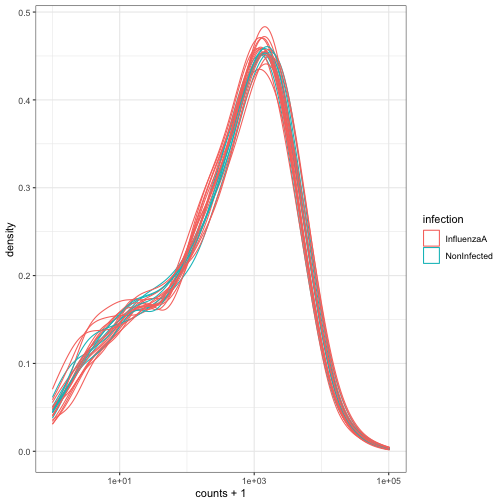
有关 tidySummarizedExperiment 的更多信息，请参阅 包网站。
核心要点
SummarizedExperiment是一种高效的组学数据存储与处理方式。它们被广泛应用于许多 Bioconductor 包中。
如果您参加接下来的专注于 RNA 测序分析的培训，您将学习如何使用
Bioconductor DESeq2
包进行一些差异表达分析。DESeq2 包的整个分析过程都在
SummarizedExperiment 中处理。
- Bioconductor 是一个为理解高通量生物学数据提供支持和软件包的项目。
-
SummarizedExperiment是一种用于存储和管理高通量组学数据的对象类型。
Bioconductor 由 R 语言的两位创始人之一 Robert Gentleman 发起。Bioconductor 提供专门用于组学数据分析的工具。Bioconductor 使用 R 统计编程语言，且采用开源和开放开发模式。↩︎